3 Microfabrication and Organ-on-chip Systems
In this chapter
Microfabrication is one of the key technologies driving biofabrication. It allows scientists and engineers to build precise, miniaturised, and reproducible structures that are difficult to achieve with traditional methods. These tools give us the ability to shape the cell microenvironment — from the chemistry of surfaces to the flow of nutrients — with a level of control that is essential for modern tissue models.
The impact of microfabrication is most visible in microfluidics and organ-on-chip systems, where cells are cultured in small, well-defined channels that mimic aspects of tissue physiology. By carefully designing these systems, researchers can study how cells behave under controlled mechanical, chemical, and biological cues (Ma et al., 2024; Vanhooydonck et al., 2024).
In this chapter, we will explore the main fabrication approaches — surface modification, photolithography, soft lithography, microfluidics, and 3D microfabrication. Each technique will be introduced with its working principle, advantages, and limitations, followed by examples of how it is used in biofabrication. The chapter then moves to applications, showing how these technologies converge in organ-on-chip and even body-on-chip platforms.
Taken together, these methods represent the engineering foundation of biofabrication, linking the scaffold-free and ECM-based approaches of Chapter 2 with the bioprinting strategies that follow in Chapter 4.
3.1 Surface Functionalisation and Topography
Cells do not interact with bulk materials — they respond to the surface they touch. The chemical groups and physical topography of a surface determine whether proteins can adsorb, whether cells will attach, and how they will behave once attached. By engineering these properties, we can influence adhesion, spreading, alignment, and even cell differentiation.
3.1.1 Surfaces for Cell Culture
The history of cell culture illustrates how surface chemistry matters. Early cultures used glass, which naturally supports protein adsorption and cell adhesion. Later, polystyrene became standard because it was cheap and transparent. However, untreated polystyrene is hydrophobic and unsuitable for cell attachment. To solve this, manufacturers treat it with oxygen plasma, which introduces polar chemical groups that promote protein adsorption and allow cells to adhere.
This process is not direct: cells do not adhere to bare materials but first interact with a layer of adsorbed serum proteins (Figure 3.1). The proteins provide the binding motifs that cells recognise. If the motifs are compatible, cells attach and spread; if not, the surface remains non-adhesive. This explains why surface chemistry — which governs protein adsorption — is so critical for successful cell culture.
Figure 3.1 breaks this process into its successive steps. Figure 3.1A follows a culture substrate from a clean surface with mixed –CH₃, –OH and –COOH groups, through the competitive adsorption of serum proteins such as albumin, fibronectin and vitronectin within seconds to minutes (the Vroman effect), to the recognition of RGD or PHSRN motifs by integrins within minutes and, over hours, the reorganisation of the cytoskeleton into stress fibres that end in focal adhesions as the cell spreads. Figure 3.1B pairs the main adhesion proteins (fibronectin, collagen I, vitronectin and laminin) with their recognition motifs and integrin receptors. Figure 3.1C contrasts a hydrophobic surface, on which adsorbed proteins unfold and hide their motifs, with a hydrophilic surface that preserves the native fold and keeps the motifs exposed, which is why surface chemistry decides whether cells adhere and spread.
From culture flask to coated substrate. These principles are built into everyday cultureware. Untreated polystyrene has a water contact angle of about 90°; after plasma or corona treatment, the "tissue-culture treated" surface of commercial flasks and plates has an angle of roughly 50–70° and adsorbs serum proteins in a form that cells can bind. When cells are grown without serum, or when a cell type needs a specific matrix, the surface is pre-coated instead: with poly-L-lysine, a positively charged polymer that binds the negatively charged cell membrane without integrins, or with purified ECM proteins such as collagen I, fibronectin, laminin or basement-membrane extracts. The opposite strategy is used to prevent adhesion: ultra-low-attachment plates carry a hydrophilic, protein-repellent hydrogel coating on which proteins hardly adsorb, so cells stay in suspension and aggregate into spheroids (Section 2.1.5.2). The same choice of surface — adhesive, selectively adhesive or non-adhesive — returns throughout this chapter, from plasma treatment (Section 3.1.2) to micropatterned islands that confine cells to defined shapes (microcontact printing, Section 3.3.3).
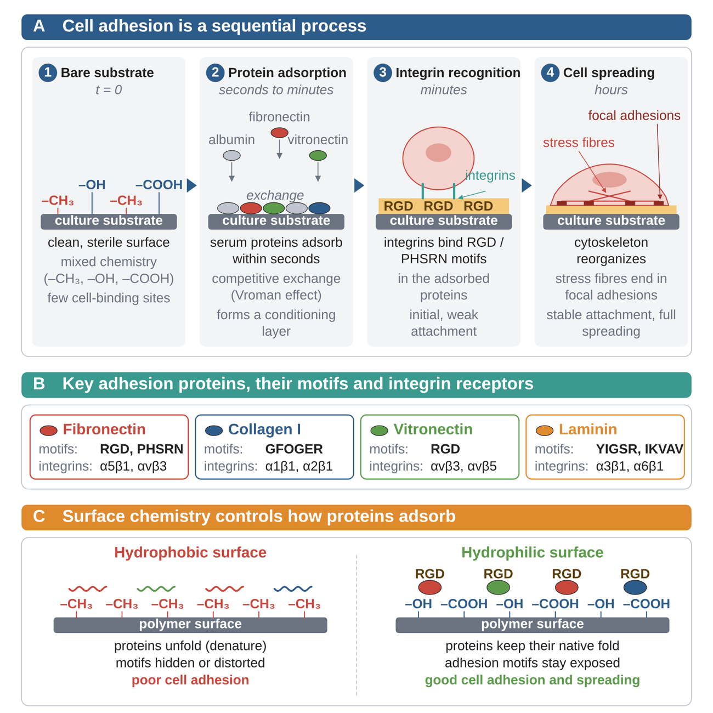
3.1.2 Surface plasma treatment
Plasma is sometimes described as the fourth state of matter: a gas energised until it contains ions, electrons, and radicals (Figure 3.2). When a polymer surface such as polydimethylsiloxane (PDMS), polymethyl methacrylate (PMMA), or cyclic olefin copolymer (COC) is exposed to plasma, several important modifications take place (Bertin et al., 2024):
Bonds in the polymer chains are broken.
New functional groups (hydroxyl, carboxyl, amine) are introduced.
The surface becomes more hydrophilic, improving wettability and protein adsorption.
The effect of plasma treatment can be visualised by the contact angle of water droplets (Figure 3.4). Plasma introduces polar functional groups, reducing the contact angle and shifting the surface from hydrophobic to hydrophilic. A typical plasma system uses an electrode in a sealed chamber to ignite plasma from a controlled gas flow under vacuum (Figure 3.3).
How the plasma is generated. In the low-pressure system of Figure 3.3A, a vacuum pump first evacuates the chamber, and the process gas is then admitted through a needle valve or mass-flow controller until a working pressure of typically 0.1–1 mbar (10–100 Pa) is reached. The low pressure is essential. A gas always contains a few free electrons, and an electric field accelerates them; at atmospheric pressure they collide with gas molecules after travelling well under a micrometre and never gain enough energy to break bonds, whereas at about 0.5 mbar they travel roughly a thousand times further between collisions. They then reach energies of a few electronvolts, enough to ionise molecules (e + O₂ → O₂⁺ + 2e) and to split them into reactive atoms (e + O₂ → 2O + e). Each ionisation releases a new electron, so the number of electrons grows in an avalanche until the gas "breaks down" into a self-sustaining glow discharge, visible as the coloured glow of the plasma: pale blue-white for oxygen, pink-violet for air.
The role of the RF generator. The electric field is supplied by a radio-frequency (RF) generator, almost always at 13.56 MHz, a frequency reserved internationally for industrial, scientific and medical (ISM) equipment so that the strong field does not interfere with radio communication. The field reverses direction 13.56 million times per second. The light electrons follow these oscillations and pick up energy from them, whereas the ions, thousands of times heavier, hardly move in such a short half-cycle. The energy therefore goes almost entirely to the electrons, which reach effective temperatures of tens of thousands of kelvin while the ions and neutral gas stay close to room temperature. Such a non-thermal or "cold" plasma can treat PDMS, PMMA and other heat-sensitive polymers without melting them, even though only about one molecule in a million is ionised: most of the chemistry is done by the far more abundant radicals, such as atomic oxygen. An alternating field has a second advantage: it can be coupled into the gas through the insulating chamber wall and keeps working when the electrodes or samples are covered with insulating polymer, where a direct-current discharge would be extinguished by surface charging. A matching network between the generator and the electrode adjusts the impedance so that the power, typically 10–300 W in laboratory systems, is absorbed by the plasma rather than reflected back to the generator.
Surface reactions. Atomic oxygen, ions and the ultraviolet light emitted by the plasma act together on the polymer: they break C–H and Si–CH₃ bonds at the surface and the resulting radicals react with oxygen to form –OH, C=O and –COOH groups. Only the top few nanometres are modified, so the bulk properties of the material are unchanged. Typical treatments last from a few seconds to a few minutes: 30–60 s of oxygen plasma is usually enough to activate PDMS for bonding, whereas longer or more powerful treatments start to etch the surface or form a brittle, cracked silica-like skin.
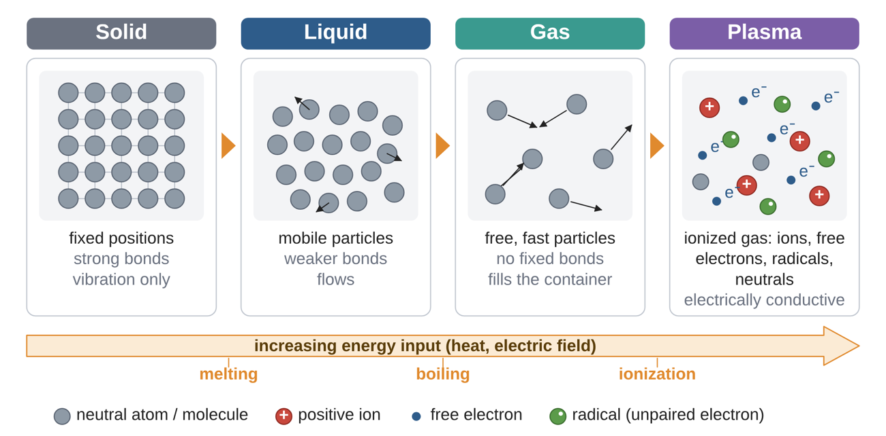
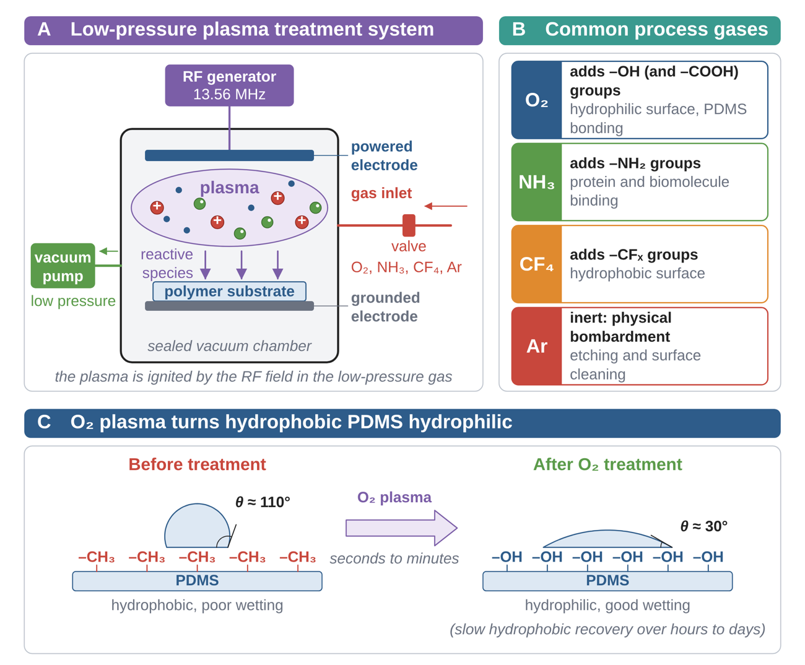
A classic case is oxygen plasma treatment of PDMS. It introduces silanol (Si–OH) groups, which make PDMS highly hydrophilic and enable irreversible bonding between PDMS and glass or between two PDMS layers. This process is indispensable for sealing microfluidic devices. The plasma effect is temporary: the surface gradually undergoes hydrophobic recovery, reverting to its original state (Feng et al., 2024).
Another important application is sterilisation. The reactive species generated in plasma (especially oxygen and argon plasma) can inactivate microorganisms on the surfaces of heat-sensitive materials. Plasma sterilisation is therefore used to treat polymer devices that cannot withstand autoclaving or high-temperature sterilisation.
Different gases can be used to tailor the chemistry:
Oxygen plasma makes surfaces hydrophilic.
Ammonia plasma introduces amine groups that promote biomolecule immobilisation.
Fluorocarbon plasma creates highly hydrophobic, water-repellent coatings.
For a concise overview of these effects, see Box 3.1 Plasma Treatments and Hydrophilicity.
The effect of plasma treatment on wettability is commonly visualised by changes in the contact angle of water droplets on the surface (Figure 3.4). Plasma introduces polar functional groups, reducing the contact angle and shifting the surface from hydrophobic to hydrophilic (Bertin et al., 2024).
Figure 3.4A explains how such a measurement is read. The contact angle θ is the angle that the edge of a water droplet makes with the surface: a droplet that spreads into a flat film (θ = 0°) indicates complete wetting, a flattened cap (θ < 90°) good wetting of a hydrophilic surface, a rounded bead (θ > 90°) poor wetting, and an almost spherical drop (θ ≈ 180°) a non-wetting, strongly hydrophobic surface. Figure 3.4B links this scale to surface chemistry. Before treatment, non-polar –CH₃ groups dominate the polymer surface and the droplet stands up with a high θ; plasma breaks bonds and introduces polar –OH, –COOH and –NH₂ groups, so that the same droplet spreads out with a low θ. Table 3.1 gives the corresponding values for PDMS, PMMA and COC.
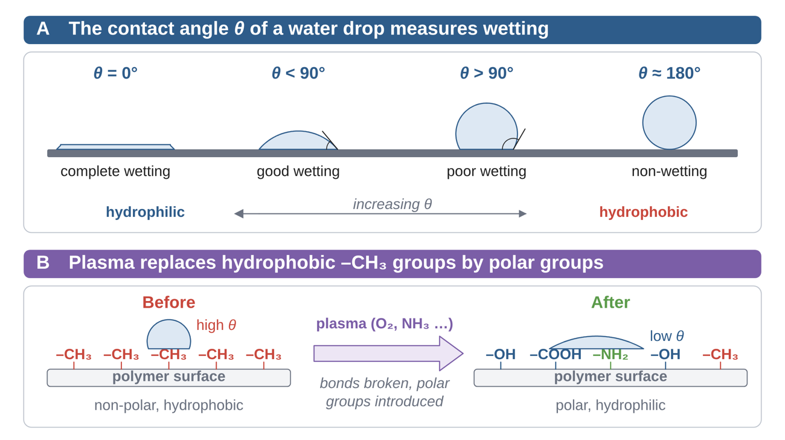
3.1.3 Plasma Polymerisation Surface Coating
While plasma treatment modifies existing surface groups, plasma polymerisation can deposit an entirely new coating. In this process, a volatile monomer vapor is introduced into a plasma reactor. The plasma fragments the monomer, and reactive species deposit as a thin, crosslinked film on the substrate surface (Figure 3.5). This technique creates stable coatings with tailored chemistry, without altering the bulk material.
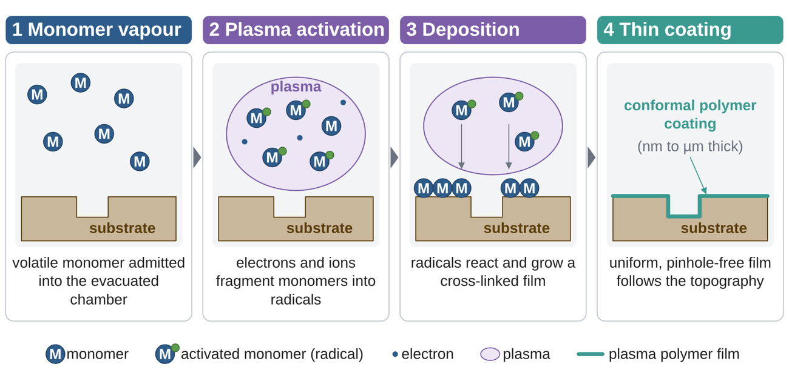
Advantages of plasma polymerisation
Uniform and conformal: coatings form evenly, even on complex 3D geometries.
Tunable thickness: from nanometers to micrometers.
Broad chemical flexibility: different monomers allow diverse surface chemistries.
Surface-only modification: leaves the bulk material unchanged.
Examples of coatings:
Acrylic acid coatings introduce carboxyl groups, promoting protein adsorption.
Amine-rich coatings improve biomolecule immobilisation.
Fluorocarbon coatings create highly hydrophobic, anti-fouling surfaces
Applications in biofabrication
Because plasma-polymerised films are ultrathin yet chemically versatile, they are widely used for:
Improving cell adhesion on otherwise inert polymers (e.g., PDMS, PMMA, COC).
Creating biofunctional patterns for sensors or microfluidic devices.
Tailoring surfaces for protein adsorption or low-fouling properties.
The main differences between plasma treatment and plasma polymerisation are summarised in Table 3.2, highlighting their complementary roles in surface engineering.
| Feature | Plasma Treatment | Plasma Polymerisation |
|---|---|---|
| Process | Modifies existing surface groups | Deposits a new thin polymer film |
| Chemistry | Limited to oxidation, hydroxylation, etc. | Wide variety of chemistries depending on monomer choice |
| Effect on bulk material | None (only surface modified) | None (only surface coated) |
| Stability | Temporary (surface reverts over time) | Stable, crosslinked coating |
| Thickness control | Very thin (nanometers) | Tunable (nanometers → micrometers) |
| Applications | Improve wettability, enable bonding (e.g. PDMS–glass sealing) | Add functional groups for protein adsorption, anti-fouling, biomolecule immobilisation |
3.2 Lithography: Photolithography and Direct-write
Lithography (from the Greek lithos = stone, graphein = writing) refers to methods that “write” patterns onto a substrate. In microfabrication, lithography is the standard way to create microscale structures by selectively protecting or exposing parts of a material. Two main strategies are used: photolithography, where ultraviolet (UV) light and a photomask define the pattern, and direct-write lithography, where a focused beam (UV laser or electron beam) writes the pattern directly without a mask.
Photolithography — literally “writing with light” — is one of the oldest and most widely used microfabrication techniques. Developed in the semiconductor industry, it enabled the production of complex circuits with billions of transistors packed onto a single chip. In biofabrication, the same process is used to create channels, wells, and pillars that shape how cells grow, migrate, and interact with fluids in organ-on-chip devices.
The principle is straightforward: a thin light-sensitive coating (photoresist) is deposited on a flat substrate such as silicon or glass. A photomask, with transparent and opaque regions, is placed on top. Exposure to UV light changes the solubility of the photoresist depending on whether it is a positive or negative resist. After development, parts of the resist are removed, leaving a patterned layer.
This patterned resist can then serve as:
a mould for casting polymers such as PDMS (soft lithography),
a protective barrier for etching underlying layers, or
a functional surface pattern for guiding cells.
Photolithography is the workhorse of high-throughput manufacturing. It can reproduce thousands of identical features at once, making it the core technology for producing master moulds for soft lithography and organ-on-chip systems. Its resolution is mainly determined by the UV wavelength and resist thickness. While the semiconductor industry pushes resolution into the nanometer range with deep-UV and extreme-UV tools, biofabrication typically requires features of 1–100 µm — scales sufficient to control single cells or small clusters.
Direct-write lithography, in contrast, is slower but more flexible. By scanning a focused laser or electron beam across the resist, it eliminates the need for a mask and allows custom, one-off designs. This makes it ideal for rapid prototyping or fabricating the photomasks used in photolithography itself.
Together, photolithography and direct-write lithography form the backbone of microfabrication. They enable precise control of geometry at micron and nanometer scales — dimensions that directly influence the behaviour of cells, biomolecules, and fluids in engineered environments.
3.2.1 Photolithography procedure
3.2.1.1 Photolithography procedure without etching
The procedure of photolithography resembles developing a photograph, but with more precise chemistry. The key components are:
UV light source: Commonly broadband mercury lamps emitting at 436, 405, and 365 nm (the G, H, and I lines). The semiconductor industry uses excimer lasers at 248 nm (KrF) or 193 nm (ArF) for higher resolution. Extreme UV (EUV, 13.5 nm) is not produced by a lamp or a laser at all, but by a hot tin plasma, and it needs vacuum and mirror-only optics (see Box 3.2).
Photomask: A glass plate (usually quartz or fused silica) coated with a thin chromium layer patterned into transparent and opaque regions. For wavelengths above 200 nm, these masks are relatively inexpensive; for deep-UV, exotic masks are required. EUV lithography uses reflective masks instead: a multilayer mirror covered with a patterned absorber.
Photoresist (PR): A light-sensitive polymer layer. In a positive resist, exposed areas become soluble in the developer; in a negative resist, exposed areas crosslink and become insoluble. SU-8, an epoxy-based negative resist, is very popular in biofabrication because it is transparent, biocompatible, and allows for thick (>50 µm) layers.
Developer: A chemical solution that dissolves the soluble regions of the photoresist, revealing the final pattern.
Step-by-step process (Figure 3.6):
Spin coating: A droplet of photoresist is placed on the substrate (e.g., silicon wafer or glass) and spun at high speed (thousands of RPM). This produces a uniform thin film, with thickness controlled by the resist formulation and spin speed (typically 1–100 µm).
Soft bake: The coated substrate is gently heated (≤100 °C) to remove solvent and improve adhesion.
Mask alignment and exposure: The photomask is positioned over the resist, and UV light is projected through it. Depending on resist type, the exposed or unexposed regions undergo a chemical change.
Development: The wafer is immersed in the appropriate developer, which removes the soluble parts of the resist and leaves behind the patterned structures.
Hard bake (optional): A second heating step (120–180°C) strengthens the resist, enhances adhesion, and removes residual solvent.
At this stage, the patterned resist can be used directly (for example, as a mould for PDMS replica moulding) or as a mask for etching the underlying material (see Section 3.2.1.2).
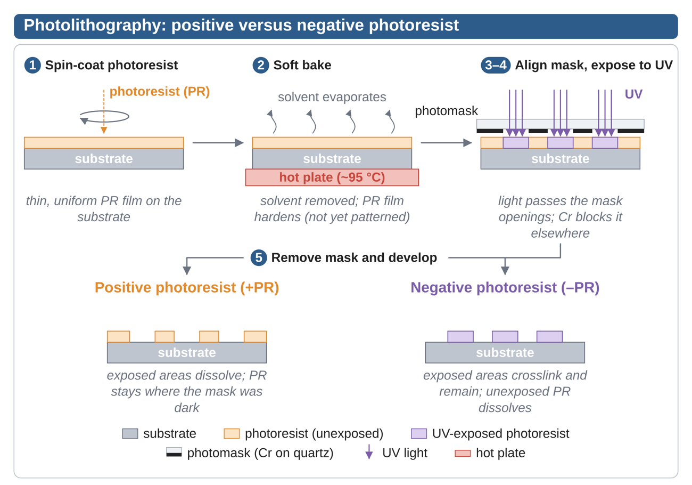
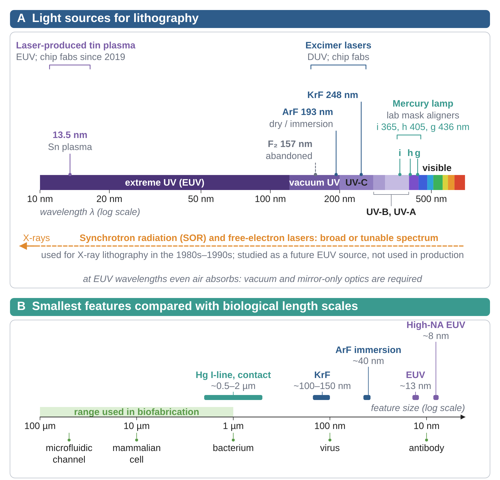
3.2.1.2 Photolithography procedure with etching
Photolithography becomes far more powerful when combined with etching, because it allows patterns to be transferred from the resist layer into the underlying material. The result is permanent surface topography on the substrate, with applications ranging from microchannels to nanostructures that control cell adhesion and mechanosensing.
Most substrates in microfabrication are silicon wafers covered with a thin layer of silicon oxide. By patterning a photoresist on top, we can protect some regions while exposing others to an etchant. The unprotected regions are then removed, leaving behind topographical features in the silicon or oxide layer.
Step-by-step workflow (Figure 3.8)
Coating: A silicon wafer (often with a thin oxide layer) is spin-coated with photoresist (commonly SU-8, an epoxy-based negative resist).
Exposure & development: A photomask defines which regions of the resist are crosslinked. The uncrosslinked regions are washed away, leaving a patterned protective layer.
Etching: The exposed areas of the wafer are etched away by chemical or plasma processes, while the resist-protected regions remain intact.
Resist removal: Finally, the resist is stripped, revealing the etched features in the substrate.
This simple sequence makes it possible to “sculpt” the wafer at micro- and nanoscale resolution.
Wet etching
In wet etching, liquid chemicals react with the exposed substrate. The process can be isotropic or anisotropic:
Isotropic etching removes material at the same rate in all directions, leading to rounded or undercut profiles.
Example: a mixture of hydrofluoric acid (HF), nitric acid (HNO₃), and acetic acid (HAc) etches silicon isotropically.
Applications: creating smooth cavities or rounded wells, useful in microfluidic designs.
Anisotropic etching exploits the crystalline nature of silicon. Certain crystal planes are etched faster than others, producing highly defined angled geometries.
Common etchants: potassium hydroxide (KOH), tetramethylammonium hydroxide (TMAH), and ethylene-diamine pyrocatechol (EDP).
Example: in (100)-oriented silicon, KOH leaves behind pyramidal pits with 54.7° sidewalls because {111} planes etch much more slowly.
Applications: fabricating micro- and nanopits, anisotropic channels, or microneedle bases.
Keynote: SU-8 resists are highly crosslinked after UV exposure and can withstand aggressive wet etchants, making them suitable for high-aspect-ratio patterns.
Dry etching
Dry etching relies on plasma chemistry and is often preferred when vertical, high-resolution structures are needed. It combines physical sputtering (ions bombarding the surface) and chemical reactions (reactive radicals forming volatile etch products).
Reactive Ion Etching (RIE): The most common dry etch method. A plasma of fluorocarbon, oxygen, or chlorine gases generates reactive ions that strike the wafer perpendicularly, producing anisotropic, straight-walled features.
Deep Reactive Ion Etching (DRIE): Uses alternating etch and passivation steps (Bosch process) to create extremely deep, narrow trenches with nearly vertical sidewalls. Aspect ratios of >20:1 are possible.
Advantages: higher precision, vertical sidewalls, reproducibility.
Limitations: requires vacuum systems, expensive equipment, and careful process optimisation.
Why this matters in biofabrication
Etching opens the door to micro- and nanoscale topography that directly interacts with biological systems:
Microfluidic channels etched into silicon or glass form the basis of many lab-on-chip devices.
Nanopatterned surfaces (e.g., grooves, pillars) can align cells, alter focal adhesion formation, or probe cell traction forces.
Microneedles fabricated via anisotropic etching enable minimally invasive drug delivery.
Master moulds: etched silicon wafers often serve as durable templates for PDMS replica moulding in soft lithography, enabling mass production of organ-on-chip devices.
For bioengineers, the key point is that etching translates a 2D resist pattern into a 3D substrate modification. By choosing between wet vs. dry etching — isotropic vs. anisotropic, low-cost vs. high-precision — one can tailor the surface architecture to biological needs.
Etch profiles are governed by the balance of reaction kinetics, diffusion, and crystallography. For example, in KOH anisotropic etching, the rate-limiting step is often hydroxide adsorption on different crystal planes, explaining why {111} planes etch ~100× slower than {100}. In dry etching, ion energy and plasma chemistry define whether sidewalls remain vertical or start tapering.
The three etch profiles discussed above are compared side by side in Figure 3.9. In isotropic wet etching with HNA (Figure 3.9A), the etchant attacks the silicon equally in all directions, so the cavity becomes a rounded bowl that extends sideways under the edges of the mask (undercut). Anisotropic wet etching of a (100) wafer in KOH or TMAH (Figure 3.9B) instead produces a pit with a flat (100) bottom and slowly etching {111} sidewalls at 54.7° to the surface. Only the processes in Figure 3.9C give straight vertical walls: DRIE, whose alternating etch and passivation cycles leave slightly scalloped sidewalls, and metal-assisted chemical etching (MACE), in which catalyst particles sink into the silicon (Section 3.2.1.3). The choice of etch process therefore fixes the cross-sectional shape of the final structure.
Deep reactive ion etching: Bosch and cryogenic processes. DRIE is carried out in an inductively coupled plasma reactor, in which a dense plasma supplies the reactive species and a separate RF bias on the wafer holder accelerates ions vertically towards the wafer. The Bosch process (Lärmer and Schilp, Robert Bosch GmbH) alternates two steps of a few seconds each. In the etch step, an SF₆ plasma produces fluorine radicals that react with silicon to volatile SiF₄; on its own, this etching is isotropic. In the passivation step, a C₄F₈ plasma deposits a thin, Teflon-like fluorocarbon film on all exposed surfaces. In the next etch step, the vertically accelerated ions sputter this film away from the bottom of the trench, but hardly from the sidewalls, which therefore stay protected while the bottom is etched further. Repeating the cycle hundreds of times produces trenches several hundred micrometres deep with nearly vertical walls, at etch rates of several micrometres per minute and aspect ratios of 20:1 or more. Each cycle leaves a small bowl-shaped step in the sidewall, so the walls show the typical scalloping of Figure 3.9C, with ripples of tens to a few hundred nanometres. Cryogenic DRIE avoids these scallops. The wafer is cooled to about −100 to −120 °C, and SF₆ and O₂ are supplied together in a continuous plasma. At this temperature a thin SiOxFy layer forms on the cold silicon surfaces and protects the sidewalls, while ion bombardment keeps the trench bottom clear. The result is a smooth, vertical wall, and the passivation layer simply evaporates when the wafer warms up again; in exchange, the process needs liquid-nitrogen cooling and tight temperature control. Both variants are used to make silicon masters with deep, high-aspect-ratio features, such as the moulds for PDMS micropillars and the microneedles discussed below.
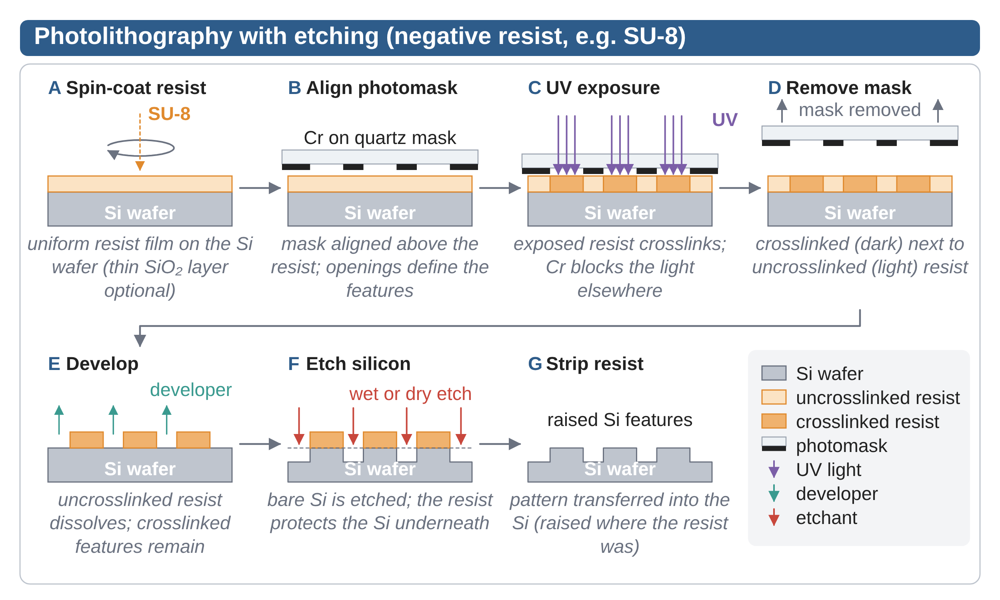
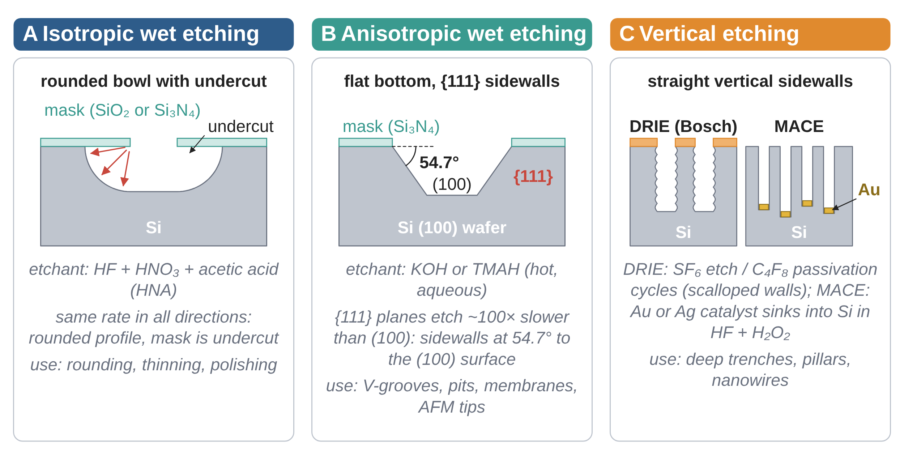
3.2.1.3 Nanopillars and nanoneedles
A limitation of conventional wet etching is that it rarely produces vertical sidewalls. For example, anisotropic KOH etching of (100) silicon yields pyramidal pits with 54.7° sidewalls, because the slowly etching {111} crystal planes are exposed (Figure 3.9). While these pyramidal geometries are useful in some contexts, many applications require straight vertical features.
To achieve vertical structures, a more advanced approach called metal-assisted chemical etching (MACE) is used (Figure 3.10). Silicon is etched only where a thin noble-metal catalyst (commonly gold or silver) is in direct contact with it, so the first step is to pattern this metal. A common low-cost route is nanosphere lithography. A close-packed monolayer of polystyrene (PS) beads is self-assembled on the wafer and shrunk with an O₂ plasma, which opens gaps between the beads. The metal is then evaporated onto the wafer: it lands in the gaps, while the beads shadow the silicon directly beneath them. After the beads are dissolved, a metal mesh with holes remains. The wafer is then immersed in a wet chemical solution containing hydrofluoric acid (HF) and an oxidising agent (such as H₂O₂). At the metal–silicon interface, the metal catalyzes the reduction of the oxidiser, injecting holes (h⁺) into the silicon. These holes locally oxidise silicon, which is subsequently dissolved by HF. Where there is no metal, as under the former bead positions, no holes are generated and the silicon is not etched.
Because this process is confined to the regions beneath the metal, the metal mesh sinks into the wafer and the etch proceeds anisotropically downward. The silicon under the holes in the mesh remains as straight vertical nanopillars or nanowires, whose diameter and spacing are set by the bead size; the metal is removed afterwards (e.g. with KI/I₂ for gold). This makes MACE different from conventional anisotropic wet etching with KOH or TMAH, which relies on silicon crystal planes and typically yields angled 54.7° sidewalls.
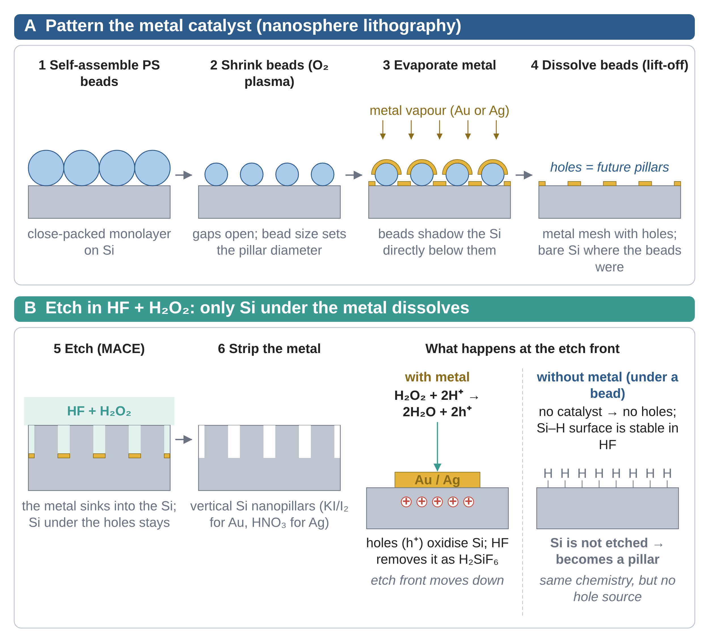
Silicon nanopillars first gained attention for applications in electronics (e.g., sensors, batteries, solar cells), but their use has now expanded into biomedical research (Mirbagheri et al., 2019). One example is the study of cell traction forces. When cells adhere and spread across a nanopillar array, they generate contractile forces that bend the pillars. By measuring the deflection angle of each pillar, researchers can quantify the mechanical forces exerted by individual cells (Figure 3.11) (Paulitschke et al., 2019). This provides a powerful tool for probing mechanobiology and cell–substrate interactions.
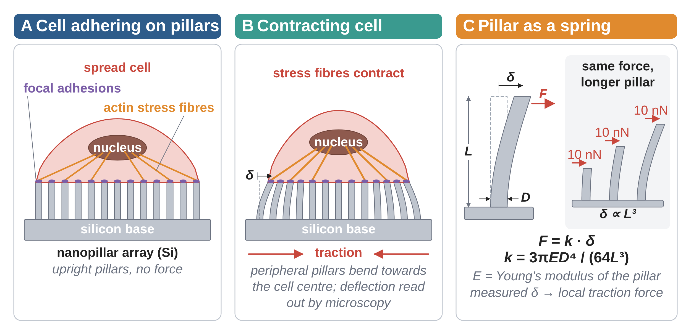
A related development is the fabrication of nanoneedles. These can be considered nanopillars with sharp, pyramidal tips capable of gently piercing cell membranes. Arrays of nanoneedles enable transmembrane delivery of drugs, nucleic acids, or other biomolecules directly into the cytoplasm (Chiappini et al., 2015). Beyond cell studies, nanoneedle arrays have been explored for minimally invasive drug delivery through the skin, offering a pain-reduced alternative to hypodermic needles. Because many small needles distribute the dose over a large surface area, drug delivery can be both efficient and less painful.
Different nanoneedle designs have been proposed (Figure 3.12):
Coated microneedles that deposit the active ingredient when withdrawn.
Solid microneedles that puncture the skin to allow subsequent drug diffusion.
Dissolving or biodegradable microneedles that remain in the skin and gradually release their pharmaceutical payload.
Hollow microneedles that function like miniature hypodermic needles for controlled injection.
Looking forward, nanoneedles are not only promising for drug delivery but also for implantable monitoring systems, where arrays could continuously sense physiological or biochemical markers in vivo (Rzhevskiy et al., 2018).
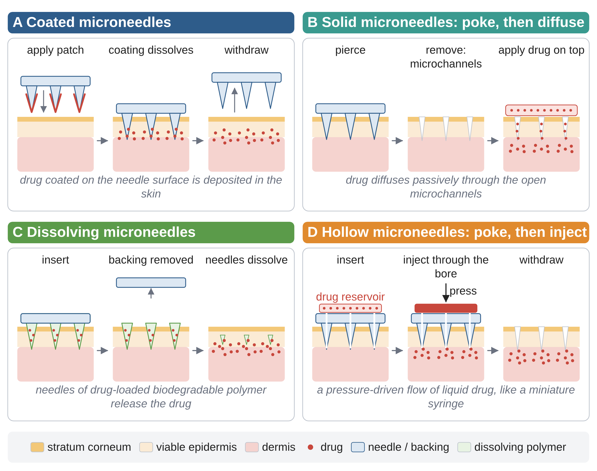
3.2.2 Direct-write lithography
While photolithography relies on a photomask to transfer patterns, direct-write lithography skips the mask entirely. Instead, a focused beam — either a UV laser or an electron beam — “writes” the pattern directly onto the resist, line by line, much like a printer rastering across a page. For this reason, it is sometimes called maskless lithography.
Advantages and limitations
The main advantage of direct-write lithography is flexibility:
No mask fabrication is needed, so designs can be changed quickly by simply uploading a new file.
It can create patterns on non-planar surfaces, whereas photolithography is limited to flat substrates.
However, this flexibility comes at a cost:
Writing line by line is slow, taking minutes to hours per wafer depending on size and resolution.
Throughput is much lower than photolithography, which can expose an entire wafer at once.
For this reason, direct-write lithography is mostly used to create prototype chips, photomasks for photolithography, or small-batch research devices. Once a design is finalised, photolithography is more efficient for mass production.
Optical (laser-based) direct-write lithography
In optical direct-write lithography (Figure 3.13), a UV laser beam (150–450 nm) is scanned across the resist-coated wafer. The laser is steered using mirrors, lenses, and spatial light modulators (SLMs), converting a CAD design into a series of pixels that are exposed one by one.
Figure 3.13 compares the two routes and shows how such an instrument is built. In Figure 3.13A, the maskless route goes straight from the CAD layout to an exposed wafer in minutes, whereas the traditional route first requires a photomask made by a supplier, which takes days, before the wafer can be flood-exposed in a mask aligner; every design change repeats this step. Figure 3.13B traces the optical path: the beam of a UV laser diode is expanded and shaped, switched pixel by pixel by a spatial light modulator or scanning mirror driven by the CAD data, and focused by an objective lens onto the resist. A motorised x–y stage moves the wafer under the beam while an autofocus sensor keeps the resist surface in focus, so that the pattern is built up pixel by pixel or line by line.
Positive or negative photoresists can be used, just as in photolithography.
Typical resolution is 300–500 nm, good enough for most microfluidic and biofabrication applications.
The main strength is rapid prototyping: design → file upload → substrate exposure in a single workflow.
Electron-beam (e-beam) direct-write lithography
In electron-beam lithography (EBL) (Figure 3.14), a focused beam of electrons is scanned over a special e-beam resist.
E-beam resists can be positive (exposed regions become soluble) or negative (exposed regions crosslink and remain).
Because electrons have much shorter wavelengths than UV light, e-beam lithography can achieve very high resolutions (<50 nm).
However, this comes at the cost of extremely long writing times (hours for complex patterns) and very expensive equipment.
In practice, e-beam lithography is mainly used when nanometer-scale resolution is required, such as in semiconductor device fabrication or to prepare high-resolution master photomasks.
Figure 3.14 shows how an e-beam writer is built and how the exposed resist behaves. In the electron column (Figure 3.14A), electrons emitted by a thermionic or field-emission source pass through two condenser lenses and an aperture; a beam blanker switches the beam on and off, a deflector scans it across the sample, and the final lens focuses it to a nanometre-sized spot on the e-beam resist, with the whole column kept under high vacuum. Figure 3.14B follows the exposure: after spin-coating, the beam writes the pattern point by point and changes the solubility of the exposed resist. On development, a positive resist such as PMMA loses its exposed regions because the polymer chains are cut, whereas a negative resist such as HSQ crosslinks so that the exposed regions remain.
Direct-write lithography procedure (general steps)
Spin coat the resist (photoresist or e-beam resist) onto the substrate.
Soft bake to remove solvents.
Raster scan the laser or electron beam across the resist surface, following the digital design.
Develop the exposed resist in the appropriate developer solution.
(Optional) Hard bake to stabilise the resist for later processing.
Why this matters for biofabrication
Direct-write lithography offers design freedom and rapid iteration — ideal when testing new chip layouts, microfluidic geometries, or surface patterns for guiding cells. Optical direct-write is most often used in university cleanrooms for prototyping, while e-beam lithography provides nanometer-scale tools for more advanced biomaterials research.
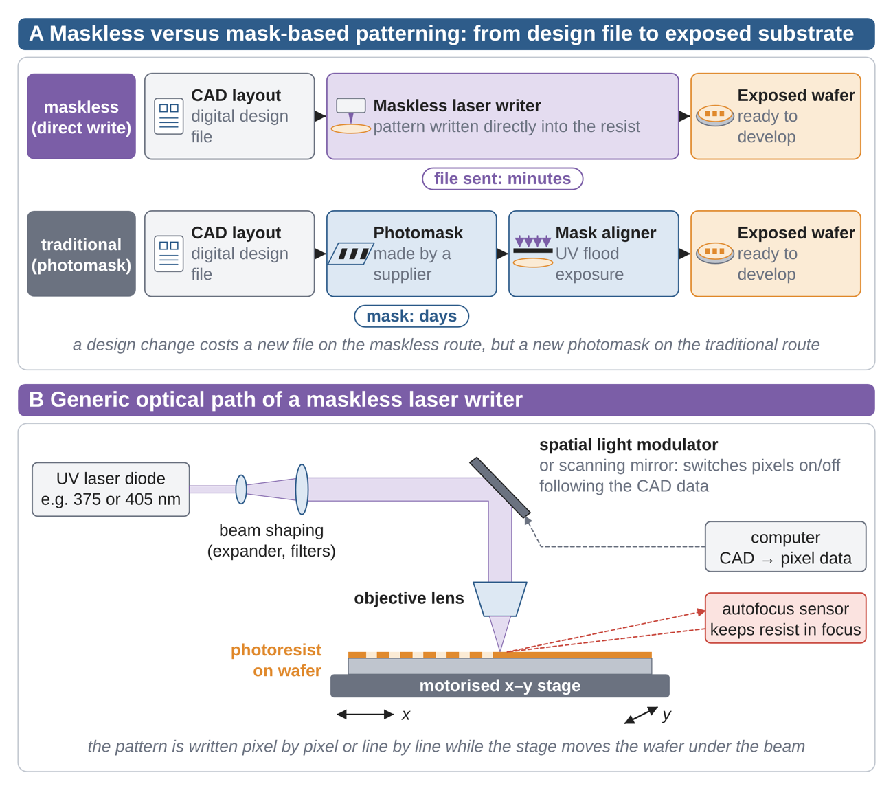
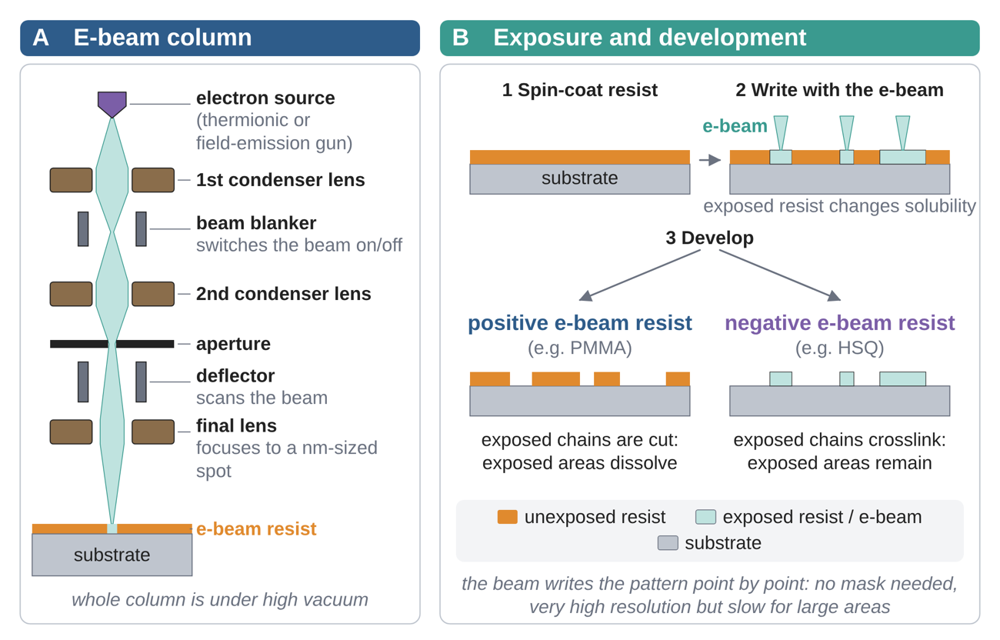
To better understand the advantages and limitations of each approach, Table 3.3 summarises the main differences between photolithography and direct-write lithography. The comparison makes clear the trade-off between speed and throughput in photolithography and the flexibility and resolution offered by direct-write methods.
| Feature | Photolithography | Direct-write Lithography |
|---|---|---|
| Pattern transfer | Uses a Photomask + UV exposure to transfer pattern |
Maskless: beam (laser or e-beam) directly writes the pattern |
| Throughput | High: exposes entire wafer at once | Low: raster scan, line-by-line writing |
| Resolution | Micrometer scale (typically 0.5–1 µm; down to ~100 nm with deep-UV) | Optical direct-write: ~300–500 nm; E-beam: <50 nm |
| Speed | Seconds to minutes per wafer | Minutes to hours per wafer |
| Flexibility | Mask must be fabricated (time + cost for new designs) | Very flexible: design can be changed instantly (no mask) |
| Substrate type | Limited to flat/planar substrates | Can also pattern non-planar surfaces |
| Applications | Mass production, standard microfluidics, organ-on-chip master moulds | Prototyping, custom low-volume chips, high-resolution masks, nanofabrication |
| Cost | Mask fabrication adds cost but amortised in large runs | Higher cost per device (time + equipment) |
Key point: photolithography = speed and scale, direct-write = flexibility and precision.
3.2.3 Resist removal
In both photolithography and direct-write lithography, the patterned resist layer is often only a temporary structure. It may act as an etch mask or as a protective barrier during processing, but once its role is complete it usually needs to be removed (stripped) so that a new material layer can be deposited or grown on the substrate.
Solvent removal: Most resists can be stripped using solvents. A typical protocol is immersion in acetone, which dissolves many photoresists, followed by rinsing with isopropyl alcohol (IPA) to clean off residues. This simple wet-chemical approach is sufficient for many applications in microfabrication.
Dry (plasma) removal: Some resists, particularly highly crosslinked or thick negative resists such as SU-8, are resistant to solvents and require a more aggressive method. In these cases, oxygen plasma etching (also called “plasma ashing”) is used to oxidise and break down the resist layer, effectively burning it away in a controlled dry process.
For biofabrication, resist removal is an important step whenever devices need to be clean, residue-free, and biocompatible — for example, before bonding PDMS to a patterned substrate or before depositing functional coatings for cell culture.
Hint: Think of resist as a temporary stencil — once the pattern has served its purpose, it must be removed completely to prepare the surface for the next step.
3.3 Soft lithography
Soft lithography is a set of microfabrication techniques that use elastomeric stamps, moulds, or membranes (most commonly made from polydimethylsiloxane, PDMS) to create and replicate micro- and nanoscale structures (Xia and Whitesides, 1998). The term “soft” refers both to the flexible nature of PDMS and to the fact that these methods require less expensive equipment compared to conventional photolithography. Soft lithography is particularly well-suited for biofabrication, where flexibility, transparency, gas permeability, and biocompatibility are essential.
The general strategy is straightforward:
A master mould is first produced using photolithography (Section 3.2).
PDMS prepolymer is poured onto the master and cured, creating a negative replica.
The PDMS structure can then be used directly as a microfluidic device or as a stamp to transfer patterns onto other surfaces.
Advantages of PDMS in soft lithography
Transparent: allows direct microscopic observation of cells and fluids inside channels.
Flexible and elastic: easy to peel off from the master mould and conform to various surfaces.
Biocompatible and gas-permeable: supports long-term cell culture by enabling oxygen and CO₂ exchange.
Low cost: moulds and devices can be reproduced rapidly and cheaply.
Applications
Soft lithography enables the fabrication of:
Microfluidic chips for studying cell signalling, organ-on-chip systems, and lab-on-a-chip applications (Whitesides, 2006).
Cell patterning through microcontact printing, where adhesive proteins or ligands are stamped onto surfaces to guide cell adhesion (Mrksich and Whitesides, 1996).
3D hydrogel scaffolds and complex microenvironments for tissue engineering (Annabi et al., 2014).
Limitations
While highly versatile, soft lithography has limitations:
The resolution is generally lower than advanced photolithography or electron-beam lithography.
PDMS can absorb small hydrophobic molecules, which can interfere with drug delivery studies.
Channel deformation can occur under high pressures due to the elastomeric nature of PDMS.
In summary, soft lithography is a powerful, accessible, and flexible toolbox for fabricating microstructures in bioengineering. It bridges the gap between high precision but costly photolithography and the practical needs of rapid prototyping in biological research.
3.3.1 Replica moulding
Replica moulding is one of the simplest and most widely used soft lithography techniques. The method relies on casting a liquid prepolymer, most often polydimethylsiloxane (PDMS), onto a structured master mould fabricated by photolithography (Xia and Whitesides, 1998). After curing, the flexible PDMS layer is peeled off, producing a negative replica of the master features (Figure 3.15).
The process is straightforward:
A master mould is fabricated, typically on a silicon wafer patterned with a photoresist such as SU-8.
PDMS prepolymer is poured over the master and cured at elevated temperature.
The cured PDMS is carefully peeled away, reproducing the micro- or nanoscale topography of the mould with high fidelity.
Advantages:
Simple, inexpensive, and rapid.
Capable of reproducing features with sub-micrometer accuracy.
PDMS replicas are transparent, flexible, biocompatible, and gas-permeable — ideal for microfluidics and cell culture studies.
Applications:
Replica moulding is the standard method for producing microfluidic chips, lab-on-a-chip platforms, and organ-on-a-chip devices. Because multiple PDMS replicas can be produced from a single master, the method combines the precision of photolithography with the low cost and accessibility of soft lithography.
Limitations:
PDMS can absorb small hydrophobic molecules and swell in organic solvents, complicating drug or chemical studies.
Channels may deform under high pressure due to the elastomeric nature of PDMS.
For large-scale or industrial production, thermoplastics (e.g., hot embossing, injection moulding) are preferred.
In summary, replica moulding provides an accessible and versatile entry point into microfabrication, enabling the rapid prototyping of functional devices for bioengineering research.
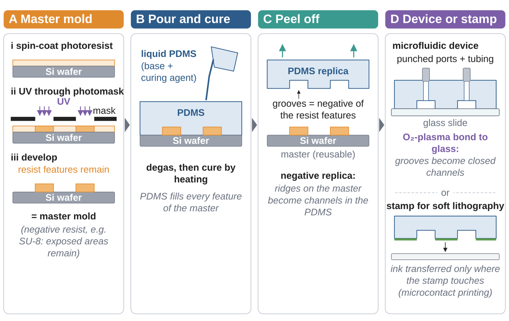
3.3.2 Capillary moulding
Capillary moulding is a soft lithography technique that makes use of capillary forces to fill microstructured channels in a PDMS mould with liquid prepolymers or biomaterials (Xia and Whitesides, 1998). When the liquid is placed in contact with the open microchannels of the mould, surface tension pulls it into the cavities without the need for external pressure or pumping. After curing, the material solidifies within the channels, creating micropatterned structures (Figure 3.16).
Procedure:
A PDMS mould with open microchannels is fabricated from a master.
A drop of liquid prepolymer (or biomaterial solution) is placed at the edge of the channels.
Capillary action spontaneously fills the channels with the liquid.
The material is cured (e.g., by UV light or heat), and the mould is removed, leaving solid microstructures.
Applications:
Fabrication of polymer microstructures such as ridges, fibres, or posts.
Production of biocompatible scaffolds using hydrogels or biodegradable polymers.
Patterning of biomolecules or nanoparticles within confined geometries for biosensing.
Advantages:
Simple and does not require pumps, pressure, or vacuum.
Compatible with a wide range of materials, including biological polymers.
Allows rapid fabrication of large-area micropatterns.
Limitations:
Resolution depends on mould fidelity and liquid wetting properties.
Not well suited for very high-aspect-ratio structures where capillary filling is incomplete.
The method is limited to materials that can flow and then solidify (by curing or drying).
In summary, capillary moulding takes advantage of a natural physical phenomenon — capillarity — to create microscale patterns in a straightforward and versatile manner. It is especially attractive for biofabrication because it works under mild conditions compatible with sensitive biomolecules and polymers.
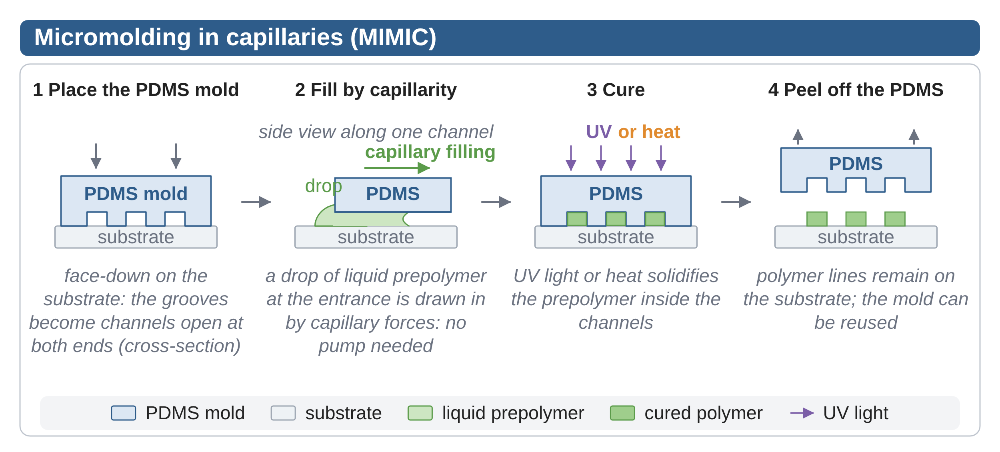
3.3.3 Microcontact printing
Microcontact printing (µCP) is a soft lithography technique that uses a patterned PDMS stamp to transfer molecules onto a surface (Kumar and Whitesides, 1993). The method is conceptually similar to a traditional ink stamp, but instead of ink, the stamp is coated with biomolecules such as proteins, peptides, or DNA. When the stamp is brought into conformal contact with the target substrate, these molecules are transferred, creating a patterned biochemical surface.
Figure 3.17 shows the five steps of the method. The relief side of the PDMS stamp is first covered with a protein solution, for example fibronectin (step 1), and dried in a stream of nitrogen so that a thin protein layer remains adsorbed on the stamp (step 2). The stamp is then inverted onto the substrate, and protein is transferred only where the raised features make conformal contact (step 3), leaving a protein micropattern after lift-off (step 4). In an optional fifth step, the bare regions between the printed features are backfilled with a cell-repellent molecule such as PEG or Pluronic, so that cells adhere only to the printed pattern, which is the basis for the single-cell patterns of Figure 3.18.
Procedure:
A PDMS stamp is fabricated by casting PDMS on a photolithography master (as described in Section 3.3.1).
The raised regions of the stamp are “inked” with a solution of biomolecules.
The stamp is gently dried and then placed in contact with the substrate surface.
Molecules transfer selectively where the raised stamp features contact the substrate.
Applications:
Protein patterning: deposition of adhesive proteins (e.g., fibronectin, collagen) to guide cell adhesion, spreading, and migration (Mrksich and Whitesides, 1996).
Control of cell adhesion geometry: stamps can be designed with different shapes (Figure 3.18) to investigate how the geometry of adhesive regions influences cell attachment and organisation (Théry, 2010).
High-throughput screening: µCP is well suited to produce surfaces with a high density of microenvironments. By varying the proteins coated on the stamp, arrays of different adhesive conditions can be generated rapidly for large-scale screening of cell adhesion or drug responses (Belkaid et al., 2013).
Biosensors: immobilisation of capture molecules (antibodies, DNA probes) in defined regions.
Cell patterning: engineering microenvironments by restricting adhesion to specific sites.
An elegant application of microcontact printing is the fabrication of micropatterns that restrict adhesion to defined geometries. This approach makes it possible to control single-cell shape and spreading, and to study how adhesion cues influence cytoskeletal organisation and cell behaviour (Théry, 2010). Examples of fibronectin micropatterns and the corresponding single-cell adhesion responses are shown in Figure 3.18.
Figure 3.18A shows how such a pattern selects and shapes single cells. Cells are seeded onto a glass substrate covered with a cell-repellent PEG hydrogel in which only a fibronectin pattern is left exposed. Cells that land on the hydrogel cannot attach and are rinsed off, whereas a cell that lands on the fibronectin attaches and spreads only over the pattern, so that in top view it adopts the outline of the crossbow-shaped pattern. Figure 3.18B shows real examples: green fluorescent fibronectin patterns of different shapes, from a disc to I-, crossbow-, Y-, X- and star-shaped designs, above the osteoblasts that adhered to them, with the actin cytoskeleton in red and the nucleus in violet. Each cell takes on the shape of its pattern, so that adhesion geometry becomes a controlled experimental variable.
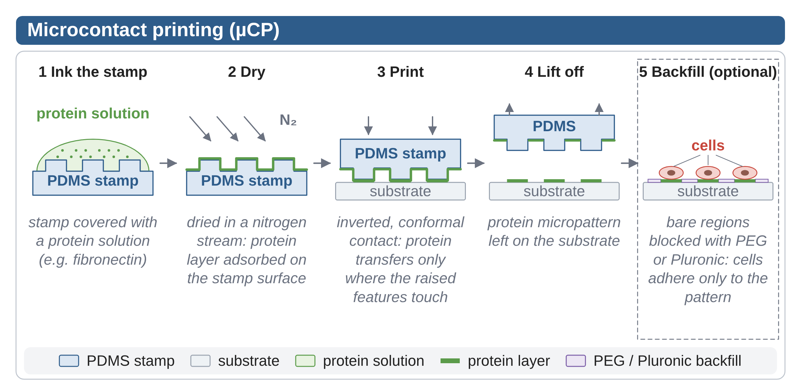
Advantages:
Simple, low-cost, and compatible with biological molecules.
High versatility: can transfer a wide range of proteins, peptides, and polymers.
Patterns are reproducible at micrometer scale and below.
Limitations:
Resolution is lower than advanced photolithographic or e-beam patterning.
Molecule transfer efficiency can vary depending on inking and surface chemistry.
Reuse of PDMS stamps may lead to degradation or contamination over time.
In biofabrication, microcontact printing provides a powerful way to pattern biochemical signals on surfaces. It enables both fundamental studies of cell adhesion and high-throughput screening, bridging microfabrication techniques with biological experimentation.
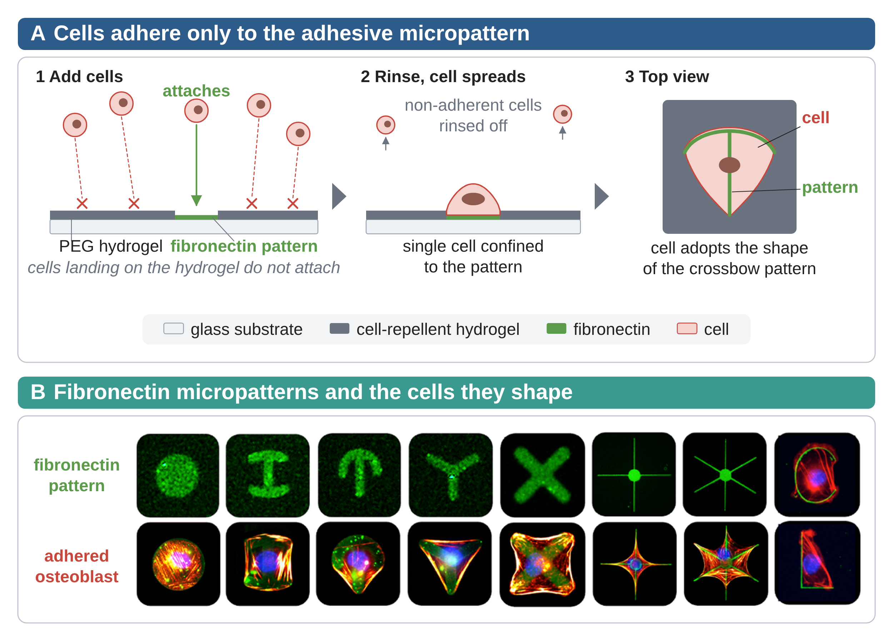
3.3.4 Microtransfer moulding
Microtransfer moulding (µTM) is a soft lithography technique that allows the fabrication of solid microstructures by casting liquid precursors into the relief features of a patterned PDMS stamp and then transferring the solidified structures onto a substrate (Xia and Whitesides, 1998). Unlike replica moulding, where PDMS itself becomes the patterned structure, µTM uses the PDMS stamp as a temporary mould to shape other materials.
Procedure:
A PDMS stamp with raised microfeatures is fabricated from a photolithography master.
The stamp cavities are filled with a liquid precursor (e.g., epoxy, polyurethane, sol–gel, or hydrogel solution).
Excess liquid is removed, and the precursor is cured (by heat, UV, or chemical crosslinking).
After curing, the solid structures are released from the PDMS stamp and transferred to the target substrate, as illustrated in Figure 3.19.
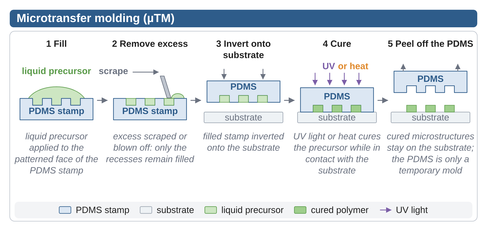
Applications:
Fabrication of polymer microstructures and micro-optical components.
Production of 3D scaffolds or patterns for cell culture using biocompatible hydrogels. For example, (Sodunke et al., 2007) demonstrated µTM to create micropatterned PEG hydrogel arrays for studying cell adhesion and spreading.
Patterning functional materials such as conductive polymers or sol–gel-derived ceramics.
Advantages:
Enables the use of a wide range of materials beyond PDMS.
Produces microstructures with high fidelity and reproducibility.
Compatible with curable polymers and biomaterials, making it attractive for biofabrication.
Limitations:
Transfer may be incomplete if curing or release conditions are not optimised.
Limited to materials that can be cast and cured without damaging the PDMS mould.
Less suited for extremely high-aspect-ratio structures compared to photolithography.
In summary, microtransfer moulding extends the versatility of soft lithography by using PDMS as a shaping tool rather than the final device material. This approach is particularly useful in biofabrication when microstructured hydrogels or biocompatible scaffolds are required (Sodunke et al., 2007).
3.3.5 Tissue micromolding
Tissue micromolding applies the principles of soft lithography to directly shape living cells or tissue constructs into defined microscale architectures (Bhatia and Chen, 1999). Instead of moulding polymers or hydrogels alone, tissue micromolding organises cells within hydrogel matrices or onto patterned substrates (Figure 3.20), guiding their growth and function.
Principle:
A microstructured mould (often made of PDMS or hydrogel) defines the shape of the tissue. Cells, sometimes encapsulated in a liquid hydrogel precursor, are introduced into the mould. After gelation or adhesion, the mould is removed, leaving behind a living tissue construct with a controlled geometry. This process allows hydrogel-based microtissues to be moulded into well-defined shapes, as illustrated in Figure 3.20.
Procedure:
Fabricate a microstructured mould using photolithography and PDMS casting.
Seed cells into the mould, either suspended in a hydrogel precursor (e.g., collagen, fibrin, alginate) or directly onto adhesive regions.
Allow cells to adhere, spread, or encapsulate as the hydrogel polymerises.
Remove the mould to release the patterned tissue structure.
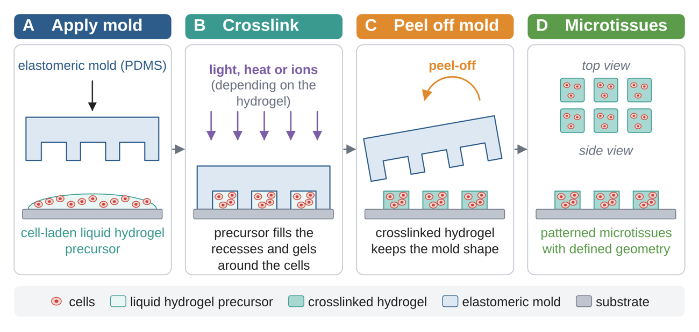
Applications:
Micropatterned tissues to study cell–cell interactions and tissue organisation.
Endothelial cell networks moulded in collagen or fibrin for vascular biology studies.
Hepatocyte microarrays for drug metabolism and toxicity screening (Bhatia and Chen, 1999).
Stem cell differentiation guided by geometric confinement of colonies.
For example, myoblast-laden hydrogel sheets can be micromolded into ridged structures that align into skeletal muscle-like tissues. These constructs have been assembled into biohybrid muscle robots capable of controlled contraction and movement (Morimoto et al., 2018) (Figure 3.21).
Micromolding has also been applied outside biomedical research. In the field of food technology, cultured meat has been engineered using stacked micromolded hydrogel modules containing bovine myoblasts, which fuse into aligned and contractile myotubes (Figure 3.22) (Furuhashi et al., 2021).
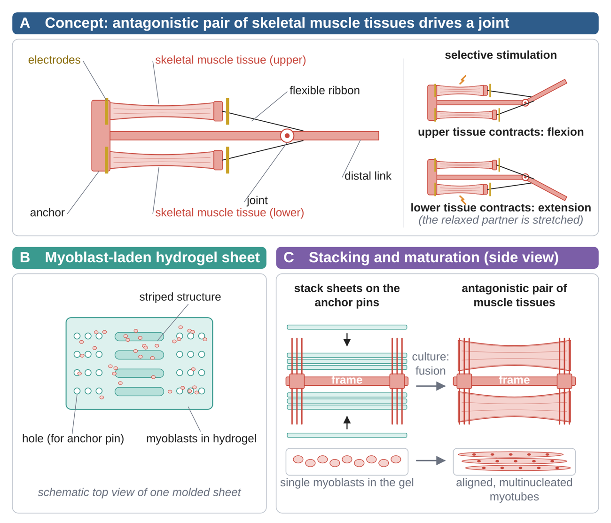
Advantages:
Provides precise geometric control of cell and tissue organisation.
Mimics aspects of native tissue architecture at the microscale.
Compatible with a wide range of hydrogels and cell types.
Limitations:
Cells may undergo stress during moulding or mould removal.
Long-term stability of patterned tissues can be limited by remodelling or matrix degradation.
Scaling up from microscale constructs to macroscale tissue remains challenging.
In summary, tissue micromolding demonstrates how microfabrication principles can be directly applied to living systems. By combining soft lithography with hydrogels and cells, this approach provides a powerful platform for engineering microtissues for fundamental studies and preclinical applications.
The biohybrid robot of Figure 3.21 illustrates how far this approach can be taken. Its design (Figure 3.21A) uses an antagonistic pair of skeletal muscle tissues, anchored above and below a frame and connected by flexible ribbons to a joint, each with its own electrodes: stimulating the upper tissue bends the distal link in flexion, stimulating the lower one gives extension, while the relaxed partner is stretched. The tissues are built from micromolded, myoblast-laden hydrogel sheets with a striped microstructure and rows of holes (Figure 3.21B), which are stacked on anchor pins above and below the frame (Figure 3.21C). During culture the myoblasts fuse into aligned, multinucleated myotubes, so that the micromolded pattern sets the alignment of the contractile tissue. The cultured-meat modules of Figure 3.22 are built on the same stacking principle.
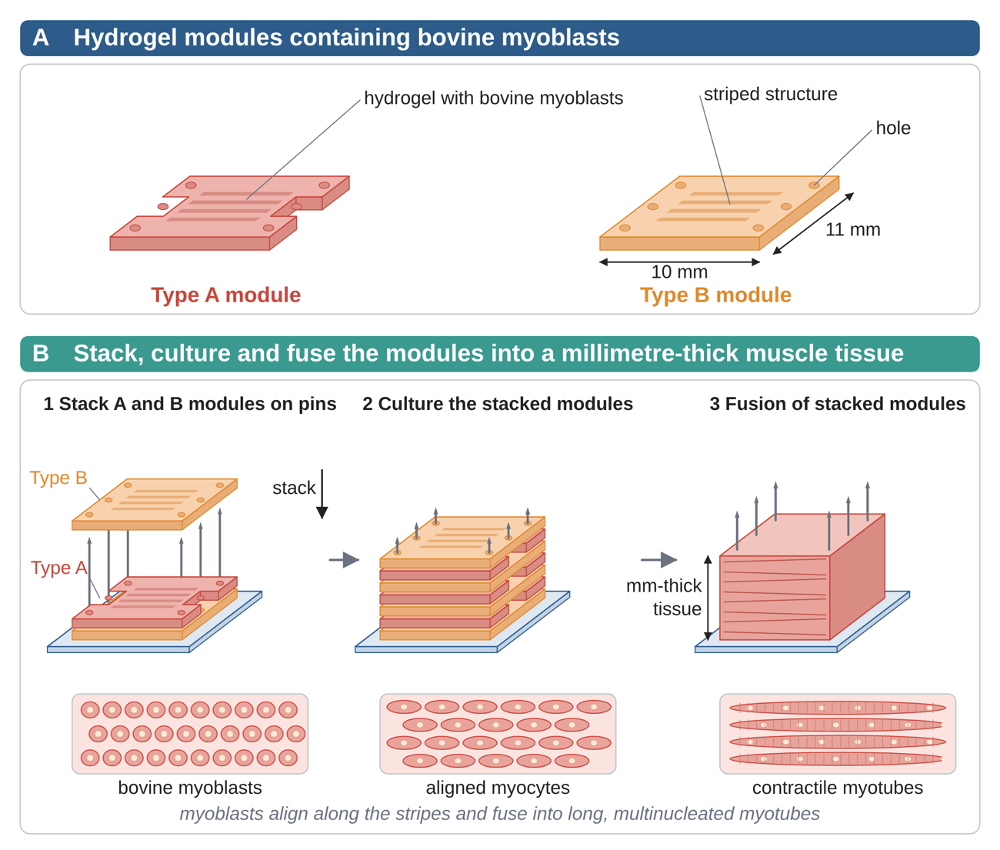
3.4 Principles of Microfluidics for Tissue Engineering
Microfluidics provides a powerful platform for fabricating and studying microtissues because it enables the precise control of fluids, cells, and biomolecules at the microscale. In contrast to conventional culture methods, where cells are exposed to uniform and static environments, microfluidic systems recreate the dynamic and heterogeneous conditions that cells experience in vivo.
The key physical principle of microfluidics is the dominance of laminar flow at small scales. When the Reynolds number (Re) is low (typically 0.01–10 in microchannels, far below the transition to turbulence at about 2000), fluids flow side by side without turbulence, and mixing occurs mainly by diffusion (Squires and Quake, 2005). This allows the generation of stable chemical gradients, the compartmentalisation of different cell types, and the precise delivery of nutrients or drugs.
Microfluidic devices are typically fabricated by soft lithography in PDMS, which is transparent, gas-permeable, and biocompatible (McDonald et al., 2000). These devices contain networks of microscale channels where cells can be seeded, patterned, or encapsulated in hydrogels. By combining geometry, controlled flow, and biomolecular cues, microfluidics enables the creation of point-, line-, or plane-shaped microtissues, as well as more complex assemblies.
Applications in tissue engineering include:
Organ-on-chip models, where microfluidics recreates physiological microenvironments (Bhatia and Ingber, 2014).
Controlled microtissue fabrication, where flow directs cell seeding, encapsulation, and aggregation.
High-throughput screening, using arrays of microchambers with varied biochemical or mechanical cues.
In summary, microfluidics is not only a tool for handling small liquid volumes but also a biofabrication strategy that provides fine control over the architecture and environment of engineered microtissues. This section will discuss how microfluidic systems are used to create point-shaped, line-shaped, and plane-shaped microtissues, and how these constructs can be assembled into more complex tissue structures.
Depending on their characteristic geometry, microtissues fabricated in microfluidic systems can be broadly classified into point-, line-, and plane-shaped constructs (Nie and Takeuchi, 2018). Each of these categories offers unique advantages: point-shaped tissues (spheroids) are compact and scalable, line-shaped tissues provide anisotropic organisation, and plane-shaped tissues allow patterned cell arrangements over larger areas. These basic forms can also serve as building blocks for assembling larger and more complex tissues (Morimoto et al., 2015). An overview of these categories is shown in Figure 3.23, which also illustrates how microfluidic techniques can assemble cellular constructs much like industrial materials (beads, fibres, sheets). The following subsections (3.5.1–3.5.3) discuss these three microtissue types in more detail.
Figure 3.23 is organised in three columns. Figure 3.23A shows how microfluidics forms each geometry: droplets of pre-gel carry cells on or inside beads (point-shaped), a continuous gel fibre carries cells on or inside it (line-shaped), and parallel laminar streams lay down two cell types side by side (plane-shaped). Figure 3.23B shows the resulting building blocks, namely spheroids and polyhedron-shaped gels, cell-laden fibres and patterned cell sheets, each paired with its industrial analogue of beads, fibres and sheets. Figure 3.23C shows how these blocks are assembled into larger tissues: point-shaped blocks by moulding, bioprinting or microfluidic manipulation, line-shaped blocks by reeling, weaving or tunneling, and plane-shaped blocks by stacking or rolling.
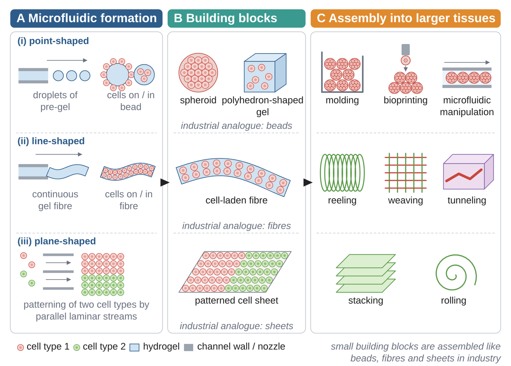
3.4.1 Point-Shaped Microtissues
Point-shaped microtissues take either a spherical or polyhedral form and do not have a long axis. They can be divided into two main categories:
Cell spheroids, which are aggregates of only cells and their secreted extracellular matrix (ECM).
Cell-laden hydrogel beads/particles, in which cells are encapsulated in a hydrogel that mimics the ECM, providing structural support and remodelling capacity.
Spheroids/organoids:
As discussed in Section 2.1.5 (Spheroids and Organoids), spheroids are widely used in cancer models, stem cell biology, and drug testing. Microfluidics adds new advantages by allowing their controlled formation and manipulation.
Hanging drops and microwells confine cells in small volumes, enhancing cell–cell contact and promoting aggregation.
In microfluidic platforms, hanging-drop arrays can be integrated with microchannels, allowing selective addressing of each spheroid with different chemicals or drugs (Frey et al., 2014). This turns spheroid cultures into flexible, high-throughput assay systems.
Cell-laden hydrogel beads:
Microfluidic emulsions can reproducibly generate monodisperse hydrogel beads containing cells.
These beads are the miniaturised successors of two older techniques: gel entrapment, in which cells were immobilised in millimetre-sized alginate, carrageenan or agarose beads by dripping a cell–polymer mixture into a gelling bath, and micro-encapsulation, in which cells are enclosed by a semipermeable membrane, as in the alginate–poly-L-lysine capsules developed for islets of Langerhans (Willaert and Baron, 1996).
A hydrogel precursor with suspended cells is emulsified into droplets in an immiscible oil phase, then crosslinked.
T-junction channels generate droplets where two flows meet at right angles, while flow-focusing channels pinch the hydrogel stream into droplets using oil flowing from multiple directions (Morimoto et al., 2015).
These methods yield highly uniform cell-laden beads, which can be used as tissue building blocks or assay units.
Advanced strategies:
3D flow-focusing devices, made from tapered glass capillaries or high-resolution 3D printing, create more uniform and tunable droplets.
Core–shell beads encapsulate an inner core of cells or biomolecules inside a hydrogel shell (Furuhashi et al., 2021).
Multistream laminar flow allows compartmentalised beads containing multiple cell types, enabling engineered co-culture in a single bead (Maeda et al., 2012).
Applications:
Spheroids: tumour models, embryoid bodies from stem cells, drug and toxicity screening (see Section 2.1.5 for details).
Hydrogel beads: scalable, reproducible building blocks for engineered tissues, or high-throughput assay systems.
Together, these methods show how microfluidics can generate point-shaped microtissues in controlled and reproducible formats, from simple spheroids to advanced multi-compartmentalised beads. See Figure 3.24 for representative microfluidic strategies for spheroids, hydrogel beads, and polyhedron-shaped constructs.
The three panels of Figure 3.24 correspond to the three types of point-shaped construct. In the hanging-drop network of Figure 3.24A, drops hang beneath a PDMS chip and are linked by an open flow channel; the cells settle by gravity to the tip of each drop, forming one spheroid per drop, while perfusion through the channel exchanges the medium and doses compounds. Figure 3.24B shows flow lithography: a photocurable pre-gel containing cells flows through a microchannel, and a short UV pulse through a photomask and objective lens crosslinks it only under the mask window, giving a block in the shape of the mask that the flow then carries away before the cycle is repeated. Figure 3.24C compares three droplet generators, a T-junction, a flow-focusing junction and a co-flow micronozzle, that break a stream of hydrogel and cells into droplets in oil, which are then gelled into cell-laden beads.
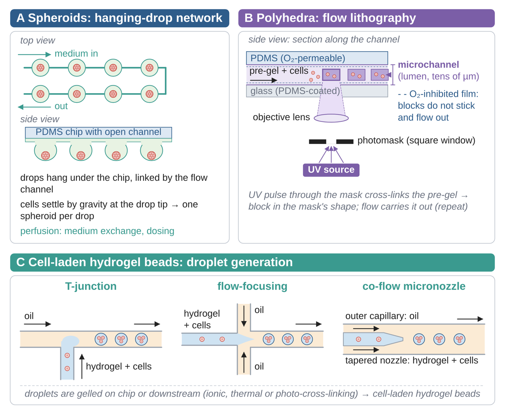
3.4.2 Line-shaped Microtissues
Many tissues in vivo, such as skeletal muscle fibres and peripheral nerves, exhibit bundle-like architectures where cells are elongated and aligned along a common axis. To mimic this, microfluidic systems can fabricate line-shaped microtissues, also called cell-laden microfibers (CLMs). These long, thin constructs consist of cells embedded in or attached to hydrogel fibres and provide geometric cues that guide cell alignment, elongation, and function.
Formation of microfiber threads
The microfluidic formation of line-shaped tissues requires two steps: thread formation and solidification.
Thread formation: Microfibers are generated using flow-focusing channels, like those used for droplet production (point-shaped microtissues), but here the focusing fluid is changed from an oil phase to an aqueous phase. Under laminar flow conditions, the cell-laden hydrogel precursor forms a central liquid stream (thread), which can be narrowed or surrounded completely by adjusting the relative flow rates of the fluids. Because diffusion across laminar flow streams is extremely slow (e.g., ~30 years for a 10 µm cell to diffuse across a 100 µm channel), the interface remains stable and well-defined.
Solidification: To preserve the shape, the hydrogel threads must be crosslinked before the flow stops. This can be achieved by:
Photo-crosslinking, where hydrogel precursors (e.g., GelMA, PEGDA) polymerise upon UV or visible light exposure. Flow rate and viscosity must be optimised to avoid cell damage from shear stress.
Ionically induced gelation, where ions in the sheath flow diffuse into the hydrogel precursor, for example Ca²⁺ crosslinking sodium alginate to form calcium alginate gels.
Cells can be incorporated either inside the hydrogel fibres (encapsulation type) or on their surface (surface culture type), depending on the application.
Fabrication methods compared
Figure 3.25 summarises the main strategies for producing CLMs, including extrusion, laminar flow, multi-interfacial polyelectrolyte complexation (MIPC), and electrospinning (Onoe and Takeuchi, 2015). Each method has distinct strengths and weaknesses in terms of cell viability, fibre uniformity, and scalability.
In Figure 3.25A the four routes are drawn side by side. In extrusion, a cell-laden pre-gel is pushed from a syringe needle into a gelling bath; in laminar flow, a core stream of pre-gel with cells is sheathed by a second flow in a microfluidic channel; in MIPC, a fibre is drawn upwards from the point where two droplets of oppositely charged polyions touch; and in electrospinning, a high voltage pulls a fibre from a charged spinning tip towards a collector. Figure 3.25B shows the surface-culture and encapsulation types introduced above, and Figure 3.25C what CLMs are used for: assembly into 3D macroscopic tissues by reeling, weaving or tunneling, animal-alternative models that read out the response to drug, physical or cell–cell stimuli, and implantable constructs. The table in Figure 3.25D summarises the trade-offs, from the easy set-up but simple geometry of extrusion and the precise control of laminar flow, which needs a microfabricated channel, to the very thin fibres of electrospinning, which requires a high voltage.
Advanced microfiber designs
Because microfluidics operates in a laminar regime, the composition and cross-sectional profiles of CLMs can be finely tuned:
Multisectioned microfibers can be produced by introducing multiple laminar streams (Cheng et al., 2014).
Core–shell microfibers can be generated using serial flow-focusing channels (Onoe et al., 2013).
Dynamic compositional control can be achieved by integrating valve-controlled switching to change the fluid inputs during fibre fabrication (Kang et al., 2011; Nie and Takeuchi, 2020).
Applications
Skeletal muscle engineering, where aligned myoblasts differentiate into contractile fibres.
Neural tissue engineering, where axons grow along microfiber scaffolds.
Vascular tissue models, with endothelial cells lining the fibre surfaces.
Bottom-up tissue assembly, using CLMs as modular building blocks to weave or stack larger constructs.
In summary, line-shaped microtissues provide anisotropic organisation that closely mimics natural fibre-like tissues. Microfluidics offers precise control over fibre geometry, composition, and encapsulated cells, making CLMs versatile building blocks for biofabrication. See Figure 3.25 for an overview of microfiber fabrication methods and applications.
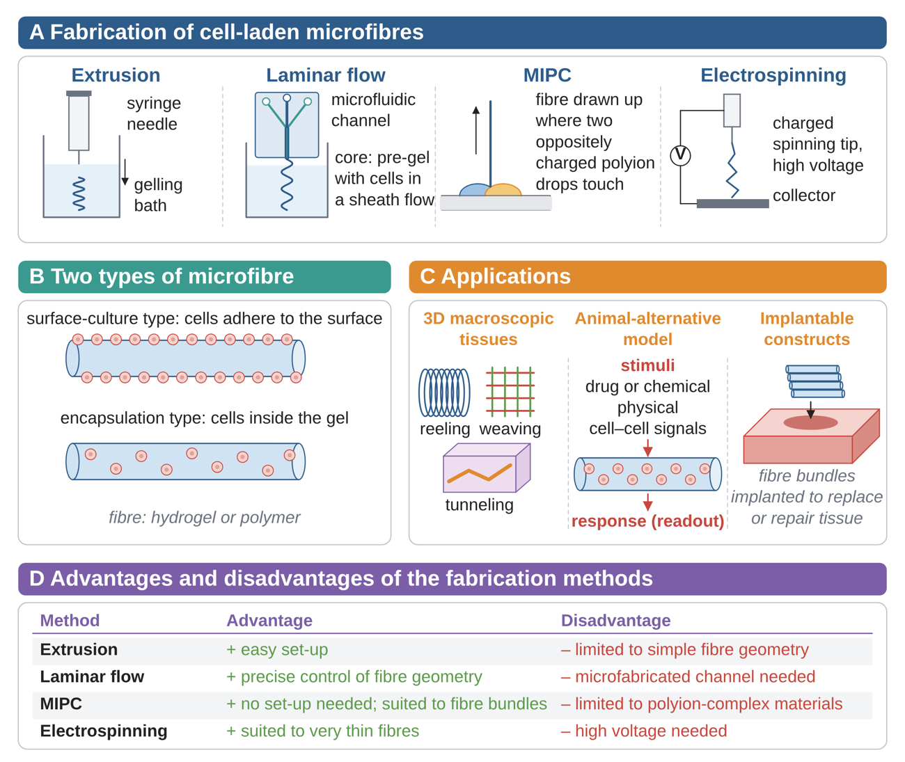
3.4.3 Plane-shaped microtissues
Many tissues in the human body form flat, sheet-like structures, such as the epithelium and endothelium. These plane-shaped microtissues cover or line surfaces — from the skin and cornea to lung alveoli, kidney tubules, intestinal walls, and blood vessels. Their biological role is to form selective barriers and interfaces between tissues and fluid-filled compartments or between the body and the environment.
A simple cell monolayer grown in a culture dish can already be considered a plane-shaped microtissue: it forms a thin, organised layer of cells with cell–cell junctions and extracellular matrix (ECM). However, detaching this delicate monolayer without damaging it is difficult. Early solutions — sometimes referred to as the first generation of plane-shaped microtissues — included:
Crosslinking cell-laden hydrogel precursors in Petri dishes to create sheets that could later be rolled into tubular structures such as blood vessels (Peck et al., 2011).
Temperature-responsive culture dishes, where lowering the temperature releases intact cell sheets along with their deposited ECM, enabling transplantation for wound healing and cardiac repair (Yang et al., 2005) (see Section 2.1.4 and Figure 2.8–Figure 2.9).
Controlled fabrication using microfabrication and microfluidics
With the advent of microfabrication and microfluidic techniques, the shape and composition of plane-shaped microtissues can now be designed with microscale precision. Several complementary fabrication strategies are used (Figure 3.26–Figure 3.31):
- Micromolding-based methods
A cell-laden hydrogel precursor (e.g., collagen or alginate) is cast into a flat microfabricated mould that contains micropatterned spacers (Figure 3.26).
Figure 3.26 shows an example in which this approach is used to build a pancreatic pseudo-tissue. A PDMS mould carrying hexagonal micro-spacers is fitted with a paper support that serves as a handling frame, and a collagen mixture containing MIN6 β-cells and MS1 endothelial cells is loaded and allowed to gel (Figure 3.26A). The sheet is then lifted out with tweezers and cultured for 4–14 days. Because the spacers leave hexagonal holes, the 4 mm × 4 mm sheet forms a network of islands about 160 µm across, where the MIN6 cells form clusters, connected by bridges about 26 µm wide, where the MS1 cells form vessel-like structures (Figure 3.26B). The mould geometry thus assigns each cell type to its own compartment of the sheet.
Crosslinking is triggered by introducing ions (e.g., CaCl₂ mist for alginate) or by temperature changes (for collagen).
The resulting micropatterned sheets can have hollow or network-like geometries defined by the mould.
To improve handleability, a filter paper frame can be embedded around the sheet’s edge, allowing easy transfer and assembly (Son et al., 2019) (Figure 3.27).
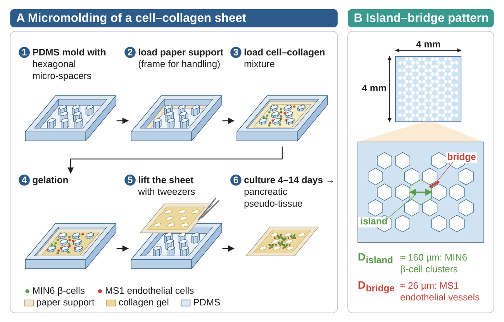
- Photolithography-based methods
Here, a cell-laden hydrogel precursor flows into a thin microchamber and is selectively crosslinked by patterned UV or visible light.
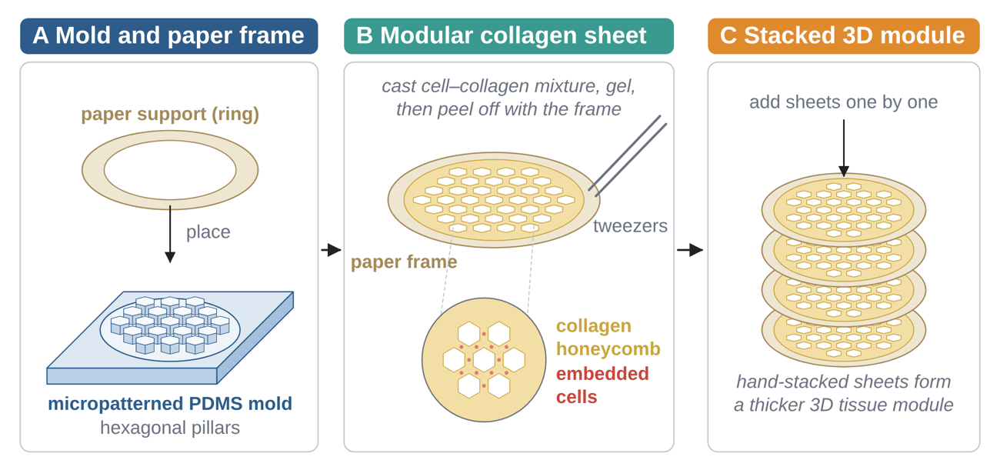
Figure 3.28 shows how dynamic projection printing realises this. In Figure 3.28A, UV light is reflected by a digital micromirror device (DMD), whose mirrors are switched on only where the pattern should be exposed, and a projection lens focuses this patterned light onto the polymerisation plane just below a coverslip, inside a cell-laden macromer solution such as GelMA with photoinitiator. The DMD displays a sequence of masks while a servo-controlled z-stage steps by one layer, so that the gel is built layer by layer into a 3D scaffold. Figure 3.28B adds a second principle: the local degree of crosslinking follows the cumulative UV dose, so a stack of masks with shrinking discs gives the highest dose, and thus the thickest gel, in the centre. In this way spiral, pyramid, dome and flower shapes have been printed in GelMA.
After washing out uncrosslinked material, the process can be repeated with another hydrogel or cell type, building complex multi-material planar structures (Soman et al., 2013) (Figure 3.28).
This technique, known as dynamic projection printing, allows the creation of intricate 2D or 3D geometries with micrometer resolution.
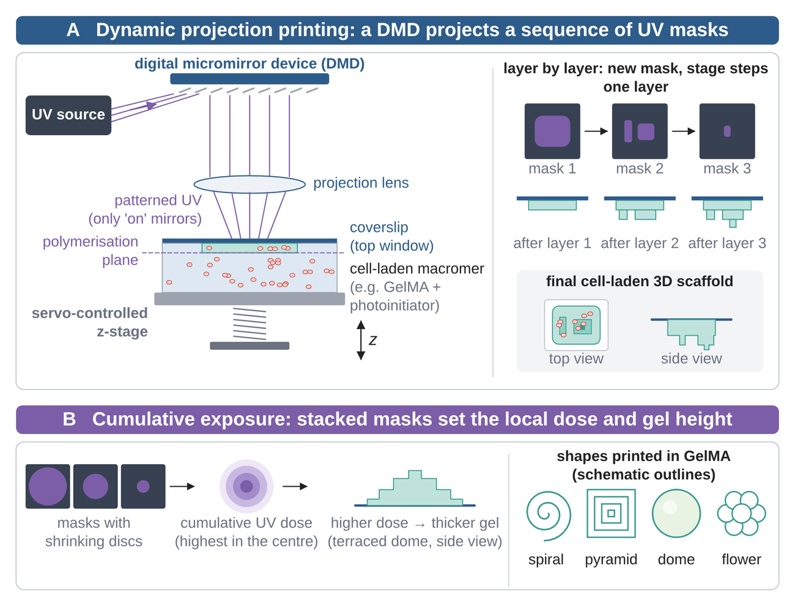
- Microvalve-controlled systems
Plane-shaped tissues can also be created by merging several parallel streams of cell-laden bioinks in a wide microchannel.
Figure 3.29 shows the handheld skin bioprinter that applies this principle directly on a wound. A bioink of biopolymer solution and cells and a separate crosslinker solution are fed to a microfluidic cartridge, which forms continuous sheets either in a culture dish (in vitro) or directly in a wound bed (in situ) (Figure 3.29A). In the handheld device (Figure 3.29B), a motor-driven wheel moves the printer over the wound at a velocity V while the cartridge deposits the sheet behind it. Figure 3.29C shows the sheet forming between cartridge and substrate: the bioink leaves the cartridge as a layer of thickness δ, and the crosslinker flowing over it diffuses in and gels it. The printing speed must therefore be matched to the bioink flow rate and the desired sheet thickness.
The multichannel cartridge also controls the internal architecture of the sheet (Figure 3.30). In every case a CaCl₂ stream spread across the full outlet width gels the alginate from the top as soon as it is deposited. Feeding two bioinks through alternating channels gives striped sheets in which the ratio of the two flow rates sets the stripe width (Figure 3.30A); feeding the second, cell-laden bioink in pressure pulses gives spots whose size is set by the pulses (Figure 3.30B); and sequential deposition gives fibre arrays, meshes when a second pass is made at an angle, and undulated or bilayered sheets (Figure 3.30C).
By precisely timing the valve-controlled flow, striped, spotted, or layered patterns of cells and materials can be generated (Hakimi et al., 2018).
This concept underlies the handheld skin bioprinter and in-situ sheet printing approaches (Figure 3.29–Figure 3.30).
- Digital (electro)microfluidics
In this emerging approach, electrical potentials dynamically change surface wettability (a phenomenon called electrowetting; see Box 3.4).
Figure 3.31 shows how such a platform is built and operated. Droplets of different hydrogel precursors, colour-coded R, G and B, sit on a grid of individually addressable electrodes and are sandwiched between a grounded top plate and the electrode substrate, with dielectric and hydrophobic layers in between (Figure 3.31A). Switching on the electrode next to a droplet lowers its contact angle on that side (Figure 3.31B), so that the droplet is pulled towards it. Sequences of such switching steps, programmed in software rather than set by masks or pumps, aliquot, merge, mix, split and transport droplets (Figure 3.31C). Once the droplets are in place, UV light crosslinks them into single, Janus or composite microgels, or into larger assembled shapes such as a hexagon (Figure 3.31D).
Small droplets of bioinks can be moved, merged, or split on demand, then solidified by light exposure to form complex planar microtissues (Chiang et al., 2016) (Figure 3.31).
This approach allows highly programmable, mask-free fabrication of microtissue arrays and multi-material architectures.
Applications and perspectives
Plane-shaped microtissues represent a bridge between 2D cell culture and 3D tissue engineering. They are essential for:
Wound-healing grafts (e.g., skin or corneal cell sheets).
Cardiac patch engineering for repairing damaged myocardium.
Barrier models in organ-on-chip systems, such as intestinal, renal, or blood–brain barrier models.
Layered tissue assembly, where planar sheets serve as modular building blocks.
Through micromolding, photolithography, and digital microfluidics, bioengineers can now design functional tissue sheets with microscale control of geometry, cell type, and ECM composition — a step toward more realistic, multilayered tissue constructs.
A variety of microfabrication and microfluidic strategies have been developed to engineer plane-shaped microtissues, each balancing precision, biological compatibility, and scalability. Table 3.4 summarises the key fabrication principles, materials, and applications associated with Figure 3.26–Figure 3.31, from temperature-responsive culture dishes to digital microfluidics.
These diverse approaches allow bioengineers to design customisable, functional tissue sheets with controlled geometry and composition—modular platforms that bridge simple 2D cultures and fully engineered 3D tissues.
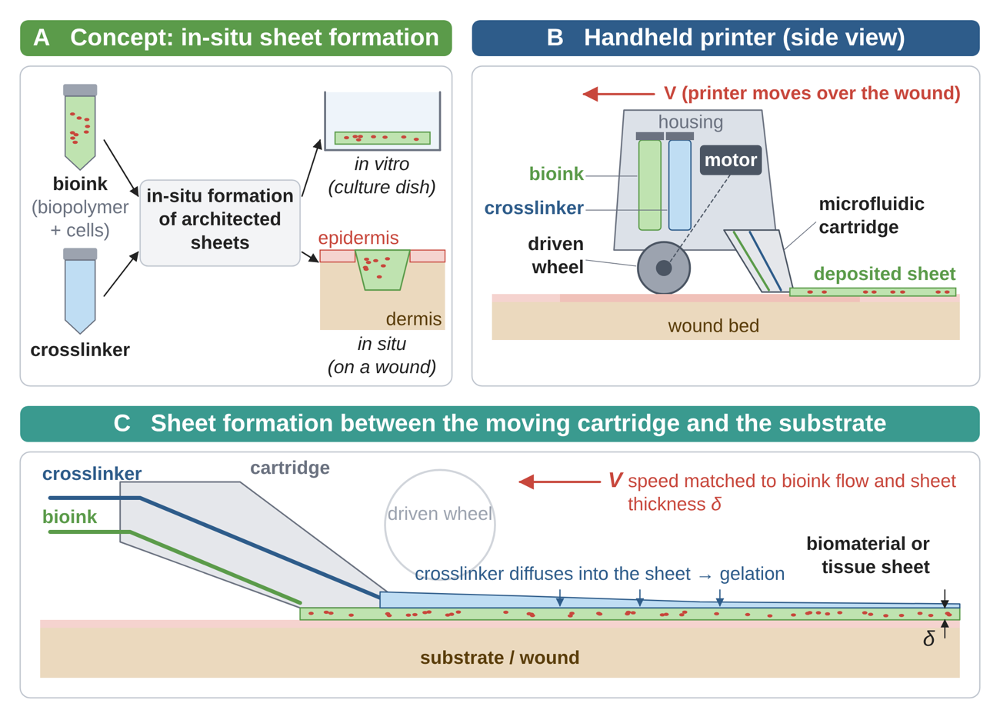
| Method | Technique | Typical Materials | Representative Application | Figure(s) | Refs |
|---|---|---|---|---|---|
| Temperature-responsive culture | Thermo-responsive polymer grafted to culture dish enabling gentle detachment of intact cell sheets | polyNIPAAM-grafted polystyrene dishes | Wound healing and cardiac tissue regeneration | 2.8 | (Yang et al., 2005) |
| Micromolding | Casting of hydrogel precursor into flat microfabricated moulds with spacers or micropatterns | Collagen, alginate | Patterned hydrogel sheets with hollow or modular geometry | 3.26–3.27 | (Lee et al., 2011; Seo et al., 2020; Son et al., 2019) |
| Photolithography / Dynamic projection printing | Spatially controlled light polymerisation via DMD projection | GelMA, PEGDA | High-resolution 2D/3D patterned hydrogel scaffolds | 3.28 | (Soman et al., 2013). |
| Microvalve-controlled sheet printing | Laminar flow merging and valve-timed deposition of multiple bioinks | Fibrin, alginate, hyaluronic acid | In-situ bioprinting of architected planar tissue sheets | 3.29–3.30 | (Hakimi et al., 2018) |
| Digital / Electromicrofluidics | Droplet manipulation by electrowetting and dielectrophoresis; crosslinking by light | PEGDA, photopolymerisable hydrogels | Programmable microgel arrays and planar tissue assembly | 3.31 | (Chiang et al., 2016) |
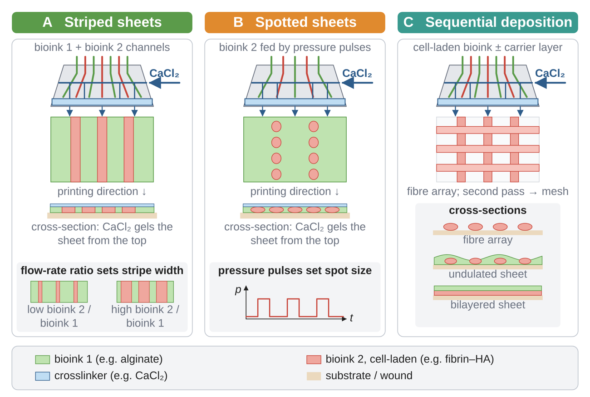
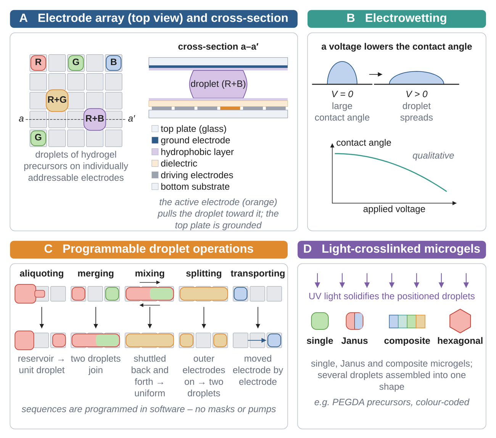
The three fundamental microtissue geometries — point-, line-, and plane-shaped — represent the basic building blocks of biofabrication. Each geometry reproduces distinct structural and functional features of native tissues: spheroids capture compact 3D cell–cell interactions, microfibers mimic aligned tissue bundles, and planar sheets recreate tissue interfaces.
However, just as natural organs are assembled from multiple tissue layers and architectures, engineered microtissues can also be combined or assembled into larger constructs. Advances in microfluidic manipulation, 3D bioprinting, and modular assembly now allow the controlled fusion of these microscale units into complex, multicellular structures that approach organ-level organisation.
The following section explores how microtissue assembly strategies build upon these modular components to create functional engineered tissues.
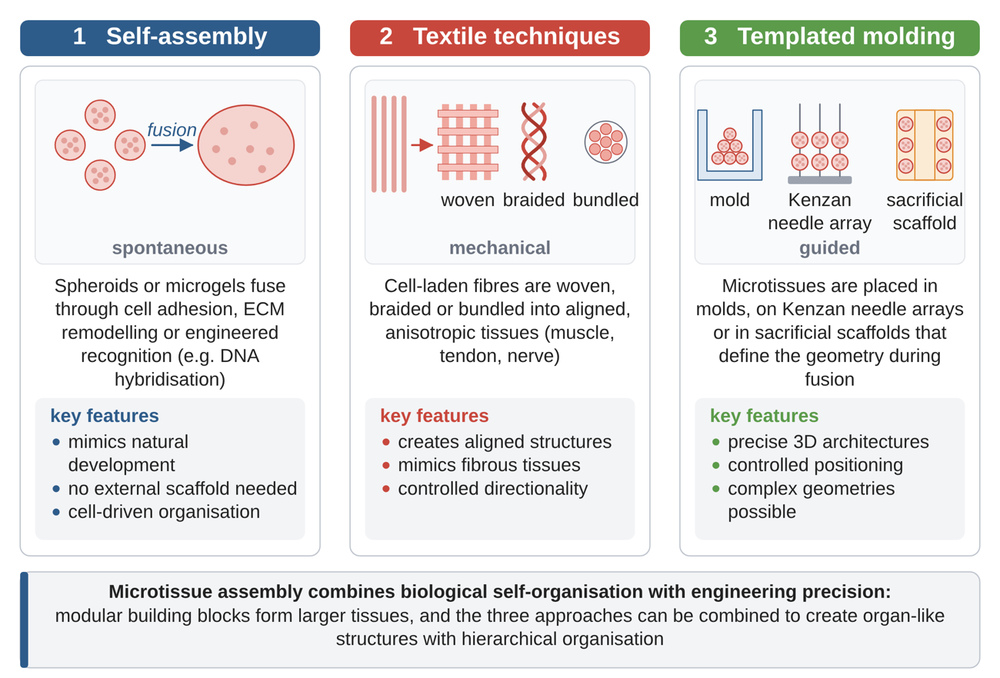
3.4.4 Microtissue assembly
Just as native organs develop through the progressive organisation of cells and ECM into higher-order structures, engineered tissues can be formed by assembling modular microtissues (Figure 3.32). This strategy, known as bottom-up tissue engineering, uses spheroids, fibres, or sheets as building blocks to create macroscopic, functional tissues. Through self-organisation and controlled assembly, it becomes possible to reproduce the hierarchical architecture, mechanics, and biological function of natural tissues (Marga et al., 2012; Morimoto et al., 2015).
Microtissue assembly represents the bottom-up approach to tissue engineering, where modular building blocks such as spheroids, fibres, or sheets are combined into larger and more complex constructs. Three complementary strategies are commonly used:
Self-assembly (Figure 3.33–Figure 3.34): spontaneous fusion of microtissues, driven by cell adhesion, ECM remodelling, or engineered biomolecular recognition (e.g., DNA hybridisation).
Textile-inspired techniques (Figure 3.35–Figure 3.36): weaving, braiding, or bundling of cell-laden microfibers into aligned and anisotropic tissues resembling muscle or tendon.
Templated moulding (Figure 3.37–Figure 3.39): placement of microtissues within moulds, microneedle arrays (Kenzan), or sacrificial scaffolds that define their geometry during fusion.
Together, these approaches illustrate how biological self-organisation can be enhanced with engineering precision to achieve scalable, organ-like tissue constructs.
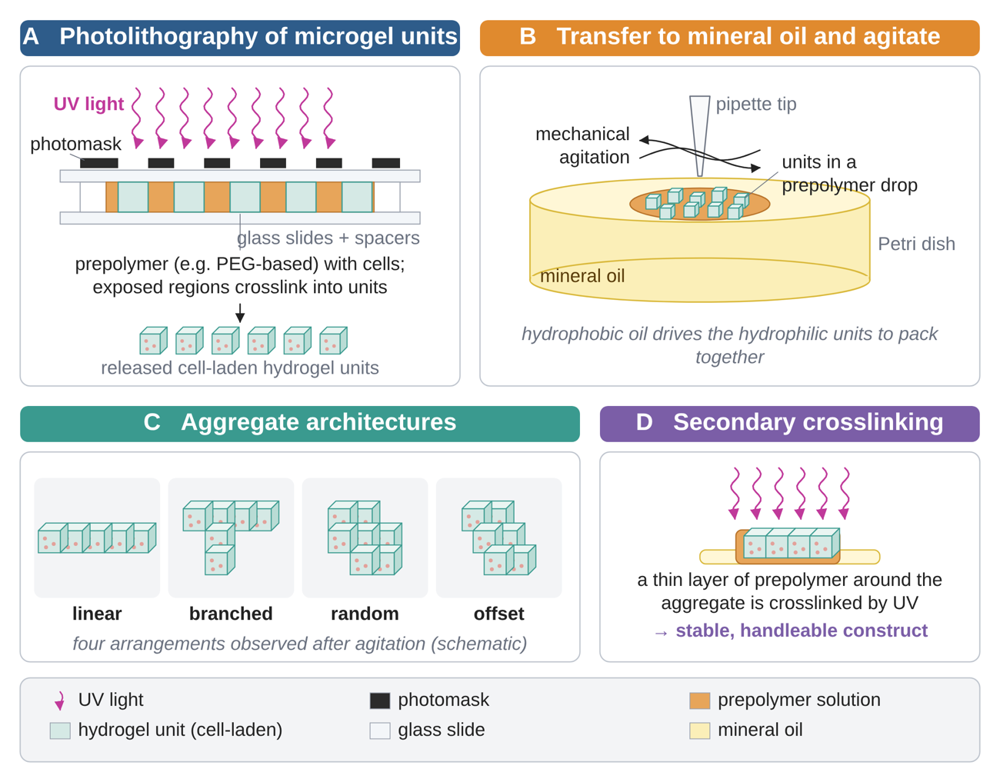
3.4.4.1 Self-Assembly of Microtissues
The most straightforward way to assemble larger tissues is by self-assembly, where microtissues such as spheroids or hydrogel units spontaneously fuse into larger structures. This process relies on cell–cell adhesion and extracellular matrix (ECM) remodelling, mimicking the natural mechanisms of embryonic morphogenesis (Mironov et al., 2009).
Self-assembly is not limited to living spheroids; cell-laden hydrogel units can be made to pack together in a similar way (Figure 3.33). The units are first cut out of a thin layer of cell-containing prepolymer by photolithography, in which UV light passing through a photomask crosslinks only the exposed regions (Figure 3.33A). The released units are then placed in mineral oil and agitated with a pipette tip; in the hydrophobic oil the hydrophilic units are driven together (Figure 3.33B) and form linear, branched, random or offset aggregates (Figure 3.33C). A second UV exposure crosslinks a thin layer of prepolymer around each aggregate and turns it into a stable construct that can be handled (Figure 3.33D).
Spheroid fusion: when two or more spheroids are brought into contact, they gradually merge into a continuous construct as cells reorganise and deposit ECM. The fusion dynamics depend on the size and composition of the spheroids, as well as culture conditions (nutrient supply, ECM proteins, medium additives).
Hydrogel self-assembly: cell-laden microgel units can also pack together when they are agitated in a hydrophobic medium such as mineral oil, after which a second crosslinking step fixes the assembly, extending the concept of biological self-assembly to synthetic systems (Figure 3.33).
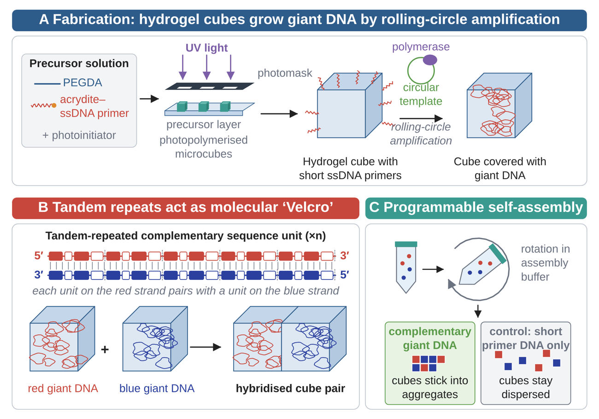
A striking example is DNA-programmed self-assembly of hydrogel microcubes (Qi et al., 2013) (Figure 3.34). Here, small hydrogel blocks are photopolymerised and modified with long DNA strands carrying complementary sequences. When mixed in suspension, cubes with matching DNA hybridise like molecular Velcro, causing them to stick together in a programmable way. Controls with short DNA strands show no aggregation, confirming that DNA recognition drives the process.
This approach highlights how natural self-organisation and engineered biomolecular recognition can be combined to design new strategies for bottom-up tissue assembly.
Self-assembly exploits either intrinsic cell biology (spheroid fusion, ECM remodelling) or engineered molecular recognition (DNA hybridisation) to organise small modules into larger, continuous tissue constructs.
3.4.4.2 Textile Techniques for the Assembly of Line-Shaped Microtissues
When cell-laden microfibers are used as the building blocks, methods inspired by textile engineering provide powerful ways to assemble them into aligned and mechanically robust tissues. Because many in vivo tissues (e.g., skeletal muscle, tendon, nerve bundles) consist of elongated, highly ordered fibres, textile techniques are well suited to recreate these anisotropic architectures (Onoe et al., 2013).
Figure 3.35 shows the basic operations with which a single cell-laden microfibre can be handled. Flow into or out of a tube sucks in or ejects the fibre (Figure 3.35A), and a gentle inward flow holds the fibre end in the tube by fluidic drag, so that the tube acts as a clamp (Figure 3.35B). For weaving, an upper and a lower comb pull alternate warp fibres apart, a weft fibre is passed through the opening, and the combs then swap position; repeating this cycle builds up a woven fabric (Figure 3.35C). Bundles of fibres can finally be delivered with a microcatheter under the renal capsule of the kidney (Figure 3.35D).
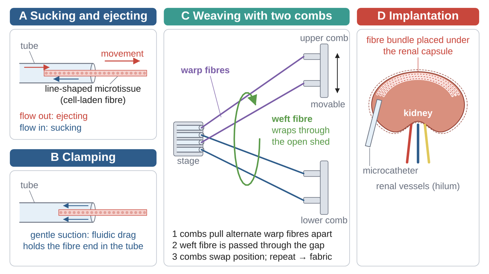
Principle of textile-inspired assembly
Microfibers can be manipulated by sucking and ejecting, clamping, weaving, or braiding, similar to yarn handling in textiles (Figure 3.35).
These operations align and bundle fibres into ordered arrays that can later be implanted, for example, into kidney tissue or other organ models, where the alignment of the fibres promotes directional cell growth and mechanical stability.
Woven fabrics in tissue engineering
Beyond simple bundling, weaving patterns such as plain, twill, or satin can be directly applied to microfibers to produce structured scaffolds (Figure 3.36A).
3D woven scaffolds: polymer fibres combined with cell-laden hydrogels generate mechanically stable, multilayered scaffolds for cartilage or bone tissue engineering (Figure 3.36B).
Hydrogel weaving: using a microweaving loom, cell-laden hydrogel fibres can be interlaced into patterned sheets, enabling flexible design of sheet-like or mesh-like constructs (Figure 3.36C).
Off-the-shelf looms: even conventional weaving equipment has been adapted to fabricate woven fabrics of cell-laden fibres (CLFs), producing complex hydrogel-based fabrics with warp and weft organisation (Figure 3.36D).
How the weave patterns are made. A woven fabric consists of two sets of fibres: the warp, held lengthwise under tension on the loom, and the weft, inserted crosswise. Before each weft pass, the loom lifts a selected group of warp fibres with a frame called a harness (or shaft), opening a gap (the shed) through which the weft is passed; the warp is then lowered and the new weft is pressed against the fabric. The pattern of lifted warps determines the weave (Figure 3.36A). In a plain weave, the weft passes over one warp and under the next, and every following row is shifted by one fibre; two harnesses lifted alternately are enough. The fibres interlace at every crossing, which gives the tightest, most stable fabric with small, regular openings, but also the stiffest one. In a 2/2 twill, the weft passes over two warps and under two, and each row is shifted by one fibre, so the crossing points line up in the typical diagonal rib; this needs four harnesses. With fewer interlacings, a twill is more flexible, drapes better and can be packed more densely. In a 5-harness satin, the weft floats over four warps and passes under only one, and the interlacing points are spread so that they do not form a visible diagonal. The long floats give a smooth surface and the most flexible fabric, but also the least stable one, because the fibres can slide and snag. For tissue engineering, the choice of weave sets the porosity, the pore shape and the stiffness of the construct, and how these differ along the warp and weft directions.
Woven scaffolds filled with hydrogel. In the 3D woven scaffolds of Figure 3.36B, several layers of warp and weft fibres of a degradable polymer such as polycaprolactone are bound together by a third set of fibres running through the thickness (the Z-binder). The result is a self-supporting fibre lattice with open, interconnected pores of a few hundred micrometres. To populate it, cells are suspended in a liquid hydrogel precursor, such as warm agarose, fibrin or alginate, which is pipetted onto the scaffold and drawn into the pores by capillarity or gentle vacuum, after which it gels in place (agarose on cooling, fibrin with thrombin, alginate with Ca²⁺). The two components then share the work. The woven fibres carry tensile and compressive loads and give the construct its anisotropic, cartilage-like stiffness from the first day, whereas the hydrogel holds the cells in a 3D, chondrogenic environment, retains the matrix they secrete and, like native cartilage, pressurises its water when compressed.
Weaving the cells themselves. In Figure 3.36C and D, it is not a scaffold but the cell-laden hydrogel fibres that are woven. Because these fibres are soft, the warp is held by two combs, an upper and a lower one, which are raised and lowered alternately to open the shed, and the weft fibre is inserted by hand or with a fine shuttle; adapted conventional looms do the same on a larger scale. The cells inside the fibres stay aligned along the fibre direction, so the weave pattern also defines how the cells are oriented in the final tissue (Akbari et al., 2016).
Applications and perspectives
Textile-inspired constructs can be used to engineer load-bearing tissues such as cartilage, tendon, or skeletal muscle.
Fibre weaving allows precise spatial control of cell alignment, enhancing contractile or mechanical function.
Combining synthetic fibres (for strength) with cell-laden fibres (for bioactivity) yields hybrid scaffolds suitable for regenerative medicine.
Textile techniques transform microfibers into macroscale, anisotropic, and load-bearing tissue constructs by adapting centuries-old weaving and braiding principles to biofabrication (Figure 3.35–Figure 3.36).
Animation 3.1. Shed formation, seen from the side. The loom in cross-section. The harnesses lift alternate warp threads into an upper and a lower sheet, opening the shed; the shuttle rides in front of the reed, over the lower sheet and under the raised one; the reed then beats the new pick against the fell and the harnesses swap for the next pick. The camera closes in on one heddle eye for the third pick. The shuttle crosses the fabric, so in this view it travels into the page and is drawn end-on; for the same reason the weft picks appear as circles.
Animation 3.2. The same loom, seen from above. The same three picks on the same clock, from above. Here the shuttle is seen crossing the fabric, reversing direction on each pick, and the lift is read from the depth: the raised threads pass over the shuttle while the lowered ones disappear beneath it. The ring marks the harness that is up. The fabric on the right is the chequer of Figure 3.36A seen as it is made.
3.4.4.3 Templated Moulding of Microtissues
In templated moulding, microtissues or microfibers are positioned inside a predefined mould that guides their shape, alignment, and eventual fusion into larger structures. Unlike self-assembly (which relies mainly on biological forces), templated moulding provides external geometric control, ensuring that the final tissue acquires a reproducible architecture (Morimoto et al., 2018).
Figure 3.37 compares three ways of providing this geometric control. In the simplest case, point- or line-shaped microtissues are packed into a mould, here a cross-shaped cavity, and fuse into a tissue with the shape of the mould (Figure 3.37A). A sacrificial filament, for example of agarose or Pluronic F-127, can also be printed among the microtissues; once they have fused around it, the filament is removed and leaves a channel through which the construct can be perfused (Figure 3.37B). Finally, spheroids skewered on a Kenzan needle array fuse into a tube that stands free once the needles are withdrawn, and plane-shaped microtissues stacked on needles fuse into a solid tissue block (Figure 3.37C).
Principle
Microtissues such as spheroids, microfibers, or hydrogel modules are loaded into engineered moulds or microchannels that act as a temporary scaffold (Figure 3.37).
As the microtissues fuse and secrete extracellular matrix (ECM), they gradually conform to the geometry of the mould.
Once maturation is achieved, the mould can be removed or degraded, leaving behind a stable tissue construct with the desired 3D shape.
Examples of templated moulding
Ring- or tubular-shaped tissues: moulds can direct the fusion of spheroids into vascular rings or artery-like constructs.
Complex geometries: moulds with cavities or microchannels can guide the development of organoid-like tissues with more intricate architectures.
Hybrid moulds: elastomeric moulds are especially useful, as they allow easy demolding without damaging fragile constructs.
Figure 3.37–Figure 3.39 illustrate these principles:
In Figure 3.37, microtissues placed in a mould, on printed sacrificial materials or on a Kenzan needle array adopt the template geometry during fusion.
In Figure 3.38, with the Kenzan method, hundreds of spheroids are fused into a long tubular tissue that is then matured in a bioreactor.
In Figure 3.39, a digital design of the spheroid arrangement precedes the assembly of a hollow tissue conduit.
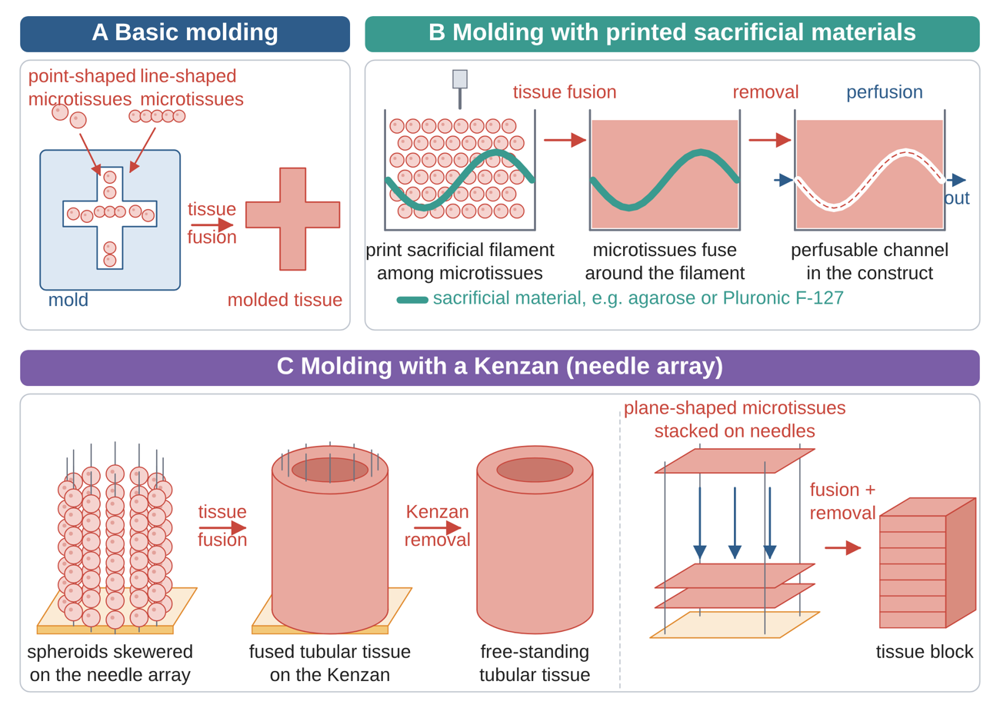
Applications
Vascular tissue engineering: spheroids fused into ring-shaped vascular units.
Musculoskeletal tissues: stacked or layered constructs resembling tendon or cartilage.
Organoid maturation: guiding the growth of organoid clusters into more structured, reproducible geometries.
Templated moulding provides engineering precision to the natural self-organisation of microtissues, enabling reproducible formation of complex 3D structures with biomedical relevance (Figure 3.37–Figure 3.39).
3.4.4.4 Integrated Strategies for Higher-Order Tissue Assembly
Modern biofabrication often combines multiple assembly principles to achieve higher structural complexity. For example:
Magnetic or acoustic fields can be used to position spheroids within a mould prior to self-fusion (Ito et al., 2005).
Hybrid assembly systems integrate microfluidic manipulation, 3D bioprinting, and textile weaving to produce vascularised or innervated tissues.
Sequential assembly enables hierarchical organisation, where fibres or sheets are first formed from spheroids, and these are subsequently integrated into macroscale constructs.
These combined strategies demonstrate how bioengineers can now guide tissue formation across multiple scales, from individual cells to organ-like structures.
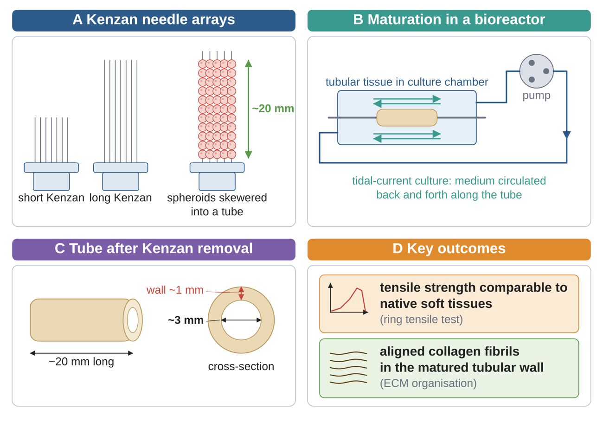
The Kenzan method of Figure 3.37C can be scaled up to produce long tubular tissues (Figure 3.38). On a long needle array, hundreds of spheroids are skewered and fused into a tube of about 20 mm (Figure 3.38A). The fused tube is then matured in a bioreactor in which the medium is circulated back and forth along it, a so-called tidal-current culture (Figure 3.38B). After removal from the Kenzan, the construct is a hollow tube with a wall of about 1 mm and an inner diameter of about 3 mm (Figure 3.38C). Its tensile strength is comparable to that of native soft tissues and its matured wall contains aligned collagen fibrils (Figure 3.38D), showing that fused spheroids can mature into a mechanically robust tissue.
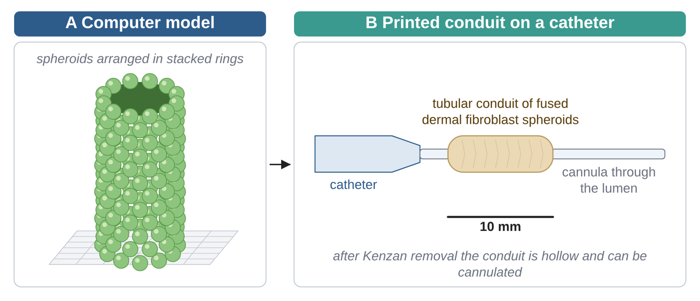
Such constructs can be planned digitally before they are built. In Figure 3.39A, a computer model specifies the position of every spheroid in a stack of rings that together form a tube. Figure 3.39B shows the result: a conduit printed from dermal fibroblast spheroids that is hollow after removal of the Kenzan, so that a medical catheter can be passed through its lumen. The close match between design and product illustrates the reproducible geometry that templated assembly is meant to deliver.
Together, the approaches described in this section — from point-, line-, and plane-shaped microtissues to their assembly into hierarchical constructs — represent the core principles of microfluidic biofabrication. These methods show how microscale control of geometry, flow, and cellular organisation can be used to reproduce the structural and functional complexity of native tissues.
As fabrication techniques evolve, the next frontier lies in integrating these modular systems with advanced materials, real-time sensing, and AI-driven design. Such integration will pave the way for the creation of adaptive, self-organising tissues and organ-level models, bridging the gap between microengineering and regenerative medicine.
3.4.5 Future perspective
Microfabrication has transformed how scientists study and engineer biological systems. The ability to design, fabricate, and manipulate materials at the micrometer and nanometer scale bridges the gap between engineering and biology. Compared to bulk (macroscale) systems, microfabrication offers efficiency, reproducibility, high-resolution control, and miniaturisation — features that are essential for biofabrication and organ-on-chip technology. Table 3.5 summarises the most widely used microfabrication techniques in biofabrication, highlighting their operating principles, resolution limits, advantages, and limitations.
Historically, microfabrication evolved from the semiconductor industry, where techniques such as photolithography and etching were developed to manufacture integrated circuits. These same methods now underpin micro-electromechanical systems (MEMS) and have been adapted for biological applications, including microfluidic chips, organ-on-chip platforms, and bioengineered scaffolds. PDMS soft lithography, for instance, relies on silicon-based master moulds fabricated by photolithography.
Today, bioengineers increasingly combine multiple microfabrication methods — photolithography, soft lithography, 3D microprinting, and surface modification — to build hybrid systems that mimic the complex microarchitecture and functions of living tissues. The convergence of MEMS, microfluidics, and biomaterials is giving rise to integrated lab-on-chip and organ-on-chip systems capable of simulating human physiology on a miniaturised scale.
As tissue engineering advances toward patient-specific, modular, and organ-level constructs, microfabrication will play an even larger role. Cells respond to their micro- and nanoscale environment; thus, the ability to engineer topography, stiffness, and flow precisely will remain central to creating functional tissues.
| Method | Principle | Resolution | Advantages | Limitations | Typical Applications |
|---|---|---|---|---|---|
| Photo-lithography | Light exposure through a mask to pattern photoresist | ~1–2 µm (UV), <100 nm (EUV) | High resolution, reproducible, semiconductor heritage | Expensive equipment, rigid substrates | Master moulds for PDMS, microchannels, cell patterning |
| Soft lithography | Replica moulding (often PDMS) from a master | ~1–10 µm | Low cost, flexible, biocompatible, rapid prototyping | Swelling, drug absorption, limited durability | Microfluidic chips, gradient generators |
| Microfluidics | Micron-scale channels controlling laminar flow | 10–500 µm | Precise fluid control, integrates with sensors | PDMS absorption, scaling issues | Organ-on-chip, droplet generation, gradient studies |
| 3D microfabrica-tion (TPP, DLP) | Layer-by-layer light polymerisation | <1 µm (TPP), ~10 µm (DLP) | True 3D complexity, subcellular resolution possible | Slow, expensive, limited build volume | Vascular scaffolds, neural networks |
| Surface modification (plasma, coatings) | Chemical/physical treatment of surfaces | Nano-µm | Simple, cost-effective, improves wettability/adhesion | Temporary effects, hydrophobic recovery | PDMS bonding, cell alignment, wettability tuning |
Moreover, as fabrication tools become more accessible and affordable — through desktop mask aligners, low-cost cleanrooms, and 3D bioprinters — researchers worldwide will gain the capacity to prototype complex devices. The recent democratisation of bioprinting and open-source microfluidics reflects this trend.
Ultimately, the future of biofabrication lies in integrating precision engineering with biological self-organisation — using microfabrication to provide the physical framework within which cells can assemble into tissues that grow, adapt, and function dynamically.
Microfabrication has evolved from microelectronics into a cornerstone of modern bioengineering. By tailoring surface chemistry, structure, and flow on the microscale, these techniques allow us to mimic the complex environment of living tissues. The ongoing challenge is to merge biological adaptability with engineered precision, paving the way for fully functional organ-on-chip systems and next-generation tissue models.
Microfabrication has moved from silicon chips to living tissues — its future lies in creating dynamic, engineered microenvironments where biology and technology converge.
Connecting engineered tissues into physiological systems
The advances in microfabrication and biofabrication discussed above have made it possible to design miniaturised, functional organ models with precisely controlled environments. Yet, the human body operates as an interconnected network, where organs continuously exchange biochemical, mechanical, and electrical signals. Building on the success of individual organ-on-chip platforms, researchers are now combining multiple modules to recreate system-level interactions.
Section 3.5 “From Organ-on-Chip to Body-on-Chip” explores this next step — the integration of microengineered tissues into dynamic, multiorgan systems that simulate whole-body physiology, drug metabolism, and disease progression in vitro.
| Model Type | Architecture | Dynamic Environ-ment | Predic-tive Power | Advantages | Limitations |
|---|---|---|---|---|---|
| 2D cell culture | Flat monolayer | Static | Low | Simple, inexpensive, scalable | Lacks 3D structure; poor cell–matrix interaction; limited physiological relevance |
| 3D organoid culture | Spherical or branched aggregates | Limited diffusion | Moderate | Mimics 3D tissue organisation and self-assembly | Variable size and composition; poor perfusion and nutrient exchange |
| Organ-on-a-chip | Microengineered, perfused tissue compartments | Perfused and mechanically active | High | Recreates physiological microenvironments (flow, stretch, gradients); dynamic control and human relevance | Complex fabrication and operation; scalability and standardisation remain challenges |
3.5 From Organ-on-Chip to Body-on-Chip
3.5.1 Introduction to Organ-on-a-Chip and Body-on-a-Chip Devices
Microengineered living systems for human-relevant biology
Over the past two decades, organ-on-a-chip (OoC) technology has transformed how we model human physiology in vitro. These microengineered devices combine living cells with microfluidic structures that recreate key features of an organ’s microenvironment — including its geometry, mechanical forces, and chemical gradients (Bhatia and Ingber, 2014; Leung et al., 2022; Zhang et al., 2018).
From Petri Dish to Microphysiological Systems
Traditional 2D cell cultures and animal models have long been the standard for studying biological processes, drug effects, and toxicity (Table 3.6). However, 2D cultures fail to replicate the three-dimensional organisation and dynamic microenvironment that shape real tissue behaviour, while animal models often poorly predict human responses due to interspecies differences (Huang et al., 2024).
OoC platforms address these limitations by creating miniaturised, perfused microenvironments where human cells can grow and function more physiologically. Each chip reproduces a specific organ’s architecture and mechanical conditions — for example, cyclic stretching in the lung-on-a-chip, pulsatile flow in the heart-on-a-chip, or peristaltic motion in the gut-on-a-chip. Table 3.6 compares the characteristics of 2D cell culture, 3D organoids, and organ-on-a-chip systems.
From Single Organs to Integrated Systems
The first microengineered organ model — the lung-on-a-chip developed by (Huh et al., 2010)— demonstrated how mechanical strain could be integrated with living cells to reproduce breathing motion. Since then, chips have been developed for most major organs, including the liver, kidney, heart, gut, brain, and skin (Zhang et al., 2018) (Figure 3.41).
Figure 3.41 gives an overview of this diversity. At its centre are the three physiological cues that every organ chip tries to reproduce: tissue–tissue interfaces, the 3D microarchitecture of the tissue, and dynamic mechanical and biochemical stimuli. Around this core, each organ is shown with the structures that chip models mimic, such as the alveolar–capillary interface of the lung, the ventricular myocardium of the heart, the hepatic lobule and sinusoid of the liver, the nephron and glomerulus of the kidney, the intestinal villi, the blood–brain barrier, skin equivalents, engineered bone marrow and perfusable microvessels. In each case the chip reproduces a characteristic structure of the organ that carries the function of interest, such as gas exchange, contraction or filtration.
Recent advances now connect multiple organ chips through microfluidic channels to form multi-organ-on-a-chip or body-on-a-chip (BoC) systems (Figure 3.42). These platforms recreate systemic circulation, enabling the exchange of nutrients, metabolites, and drugs between organ modules. By integrating tissue-specific functions within one microfluidic circuit, researchers can model whole-body interactions such as drug absorption, metabolism, and toxicity (Huang et al., 2024; Maschmeyer et al., 2015).
Figure 3.42 shows how such a circuit can follow the layout of the human circulation. A heart chip drives the flow: oxygenated (arterial) medium leaves it for the gut, liver and kidney chips, deoxygenated (venous) medium returns to it, and a separate pulmonary loop connects heart and lung. Each chip has the same basic structure, with organ-specific cells in a tissue channel above a porous membrane and a perfused medium channel below. The gut chip, however, drains into the liver chip, as the hepatic portal vein does in the body. An orally absorbed drug therefore passes the liver before it reaches the other organs and is partly metabolised there (first-pass metabolism), which determines how much of the active compound the rest of the system receives.
In parallel, computational modelling, 3D bioprinting, and AI-based data analysis are being incorporated to optimise chip design and predict human physiological responses (An et al., 2025). These integrated approaches mark a shift toward microphysiological systems (MPS) that combine precision engineering with biological realism.
Outlook: Toward the “Human-on-a-Chip”
The long-term vision is the creation of integrated body-on-a-chip platforms capable of simulating human physiology on a microscale — a concept often referred to as the Human-on-a-Chip. By coupling multiple organ modules with real-time sensing and feedback control, these systems aim to predict patient-specific drug responses and enable preclinical testing without animal models (An et al., 2025; Huang et al., 2024).
The field is evolving from isolated organ models to interconnected physiological systems, linking biology, microengineering, and computation into a unified “human-on-a-chip” framework.
Figure 3.40 places this development on a time axis from 1998 to 2026, divided into four overlapping phases. The foundation was laid by PDMS soft lithography, which provided transparent, biocompatible and gas-permeable microchannels that could be prototyped rapidly (Figure 3.40A). Single-organ chips followed, led by the breathing lung-on-a-chip of 2010 and joined by gut, liver and heart models, while induced pluripotent stem cells provided patient-specific cells (Figure 3.40B). From about 2013, organ modules such as gut, liver and kidney were connected by recirculating medium and fitted with sensors to study drug metabolism (Figure 3.40C). The most recent phase is marked by commercial platforms and by regulatory milestones, from the FDA Modernization Act 2.0 of 2022 to the FDA roadmap of 2025 (Figure 3.40D).
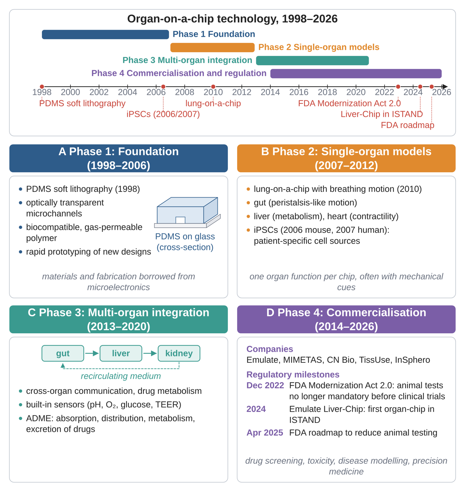
3.5.2 Working principles of organ-on-a-chip devices
Miniaturised Physiology on a Chip
Organ-on-a-chip (OoC) devices recreate essential aspects of organ function by integrating living cells, microfluidic channels, and tissue-specific mechanical and biochemical cues in a controlled microscale environment. Each chip is a microengineered tissue model that emulates one or more key physiological processes — such as perfusion, filtration, gas exchange, or mechanical strain — within a transparent polymer platform, typically made of PDMS or COC (cyclic olefin copolymers) (Zhang et al., 2018). Figure 3.43 illustrates a generic organ-on-a-chip layout.
In this generic design (Figure 3.43), two parallel microchannels are separated by a thin, porous, flexible membrane coated with ECM proteins. Epithelial or parenchymal cells grow in the upper channel and endothelial cells in the lower, vascular channel, and the two channels are perfused independently, so that gases and nutrients are exchanged across the membrane as between tissue and blood. Vacuum chambers alongside the channels deform the membrane cyclically to imitate tissue motion such as breathing, and integrated sensors record TEER, oxygen or secreted metabolites while the tissue is cultured. Several of the organ chips discussed below, such as the lung- and gut-on-a-chip, are variations on this layout.
Various OoC platforms have been developed to reproduce the architecture and mechanical microenvironment of living tissues. Depending on the organ function to be mimicked, these devices differ in design, materials, and flow configurations.
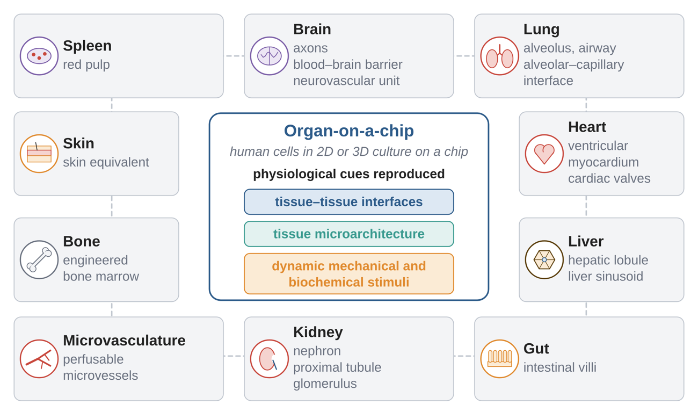
Some rely on membrane-separated dual channels (e.g., lung-on-a-chip, gut-on-a-chip), while others use 3D ECM gels or printed scaffolds to support vascular or multicellular organisation.
Figure 3.44 summarises major categories of organ-chip architectures, demonstrating how microengineering and soft-lithography principles combine to recreate physiological interfaces.
The eight designs in Figure 3.44 differ mainly in how they separate and connect tissue compartments. The classic membrane chip separates epithelium and endothelium by a porous membrane that side vacuum chambers stretch cyclically (Figure 3.44A), and the Transwell insert is its static counterpart, with apical and basal compartments on either side of a membrane (Figure 3.44H). Membrane-free designs instead let a 3D ECM gel lane contact perfused medium lanes directly (Figure 3.44B), cast gel around needles that are pulled out to leave hollow vessels or tubules (Figure 3.44C), or let microvessels self-assemble in the gel between two medium lanes (Figure 3.44D). Printing and then removing a sacrificial ink gives perfusable channels of free-form shape (Figure 3.44G). Finally, integrating chips into multiwell plates (Figure 3.44E) or into arrays of identical parallel channels (Figure 3.44F) raises throughput for comparative screening.
The diversity of organ-on-a-chip platforms reflects how different tissues operate in the body. While some models focus on metabolically active solid organs such as the liver or heart, others reproduce selective barrier functions like those of the lung or kidney, or vascular perfusion supporting nutrient exchange. Each design requires a distinct combination of geometry, flow, and mechanical actuation to mimic its in-vivo counterpart. Table 3.7 compares the most common chip architectures, highlighting their characteristic structure, function, and mechanical or chemical cues.
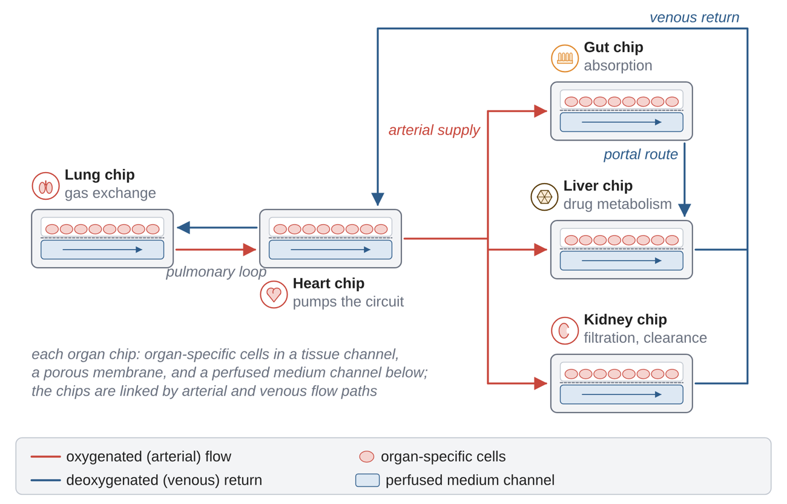
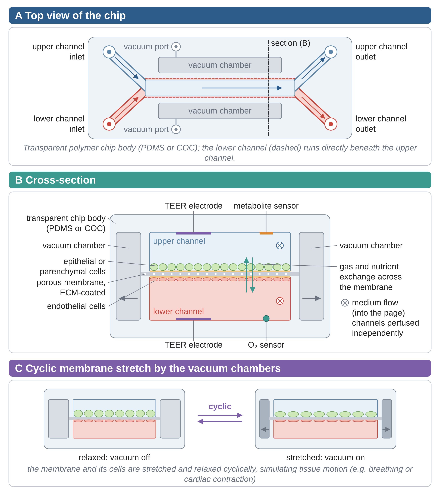
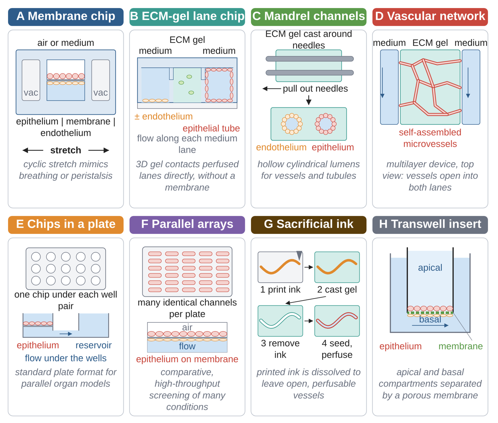
| Architecture | Representative Organs | Main Function | Typical Design | Key Mechanical or Chemical Cues |
|---|---|---|---|---|
| Solid organ chips | Liver, heart, brain, tumour | Reproduce metabolic activity, electrical conduction, and contractility | 3D hydrogel scaffolds or microchambers lined with parenchymal cells | Flow-induced shear stress, electrical pacing, biochemical gradients |
| Barrier-tissue chips | Lung, gut, skin, kidney | Selective transport across epithelial and endothelial barriers; tissue–tissue interfaces | Dual-channel design separated by a porous membrane with apical/basal compartments | Cyclic stretch, peristalsis, hydrostatic pressure gradients |
| Vascularised chips | Any perfused tissue | Mimic nutrient and oxygen delivery through perfused microvasculature | Endothelialised microchannels surrounding or embedded within 3D tissues | Shear stress, oxygen and nutrient gradients, angiogenic signalling |
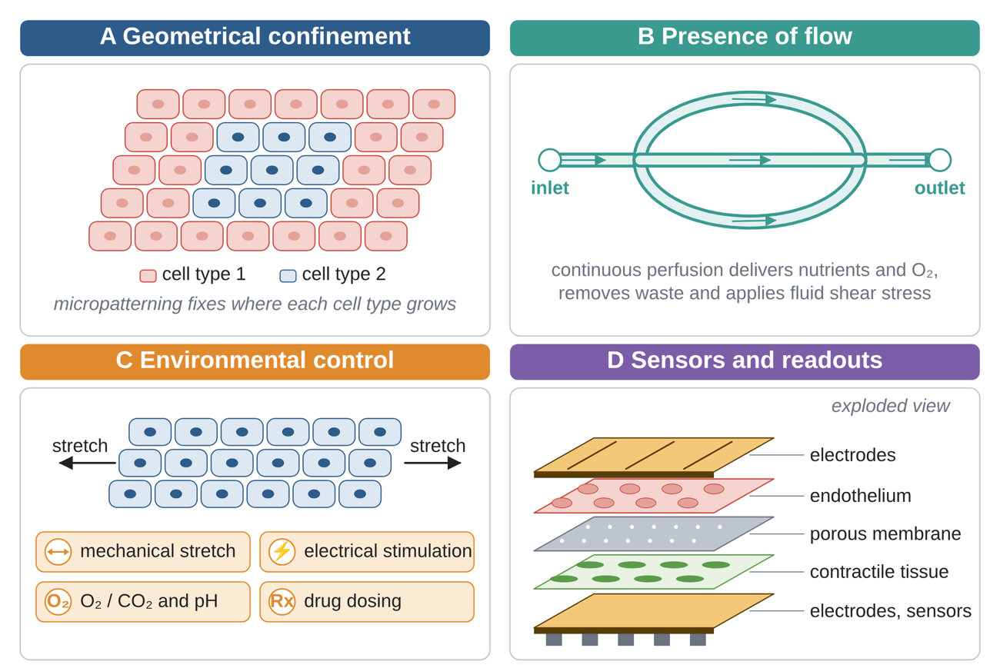
Microfluidic control and perfusion
At the heart of every OoC is a microfluidic network that mimics the vascular circulation. Controlled fluid flow delivers nutrients and removes waste products while generating shear stress similar to that experienced by endothelial or epithelial cells in vivo. The wall shear stress in a flat channel is calculated in Section 5.2.2 (Equation 5.5).
This continuous perfusion enables long-term cell culture and dynamic communication between tissue compartments — for example, blood flow in a liver-on-a-chip, or peristaltic motion in a gut-on-a-chip. Flow parameters can be precisely tuned to reproduce physiological or pathological conditions.
Mechanical and chemical microenvironments
OoC devices integrate mechanical actuation (stretching, compression, or pulsation) and chemical gradients (oxygen, pH, or cytokine diffusion) to simulate the physical microenvironment of real tissues.
For instance, cyclic stretching of a lung-on-a-chip reproduces the breathing motion of alveoli (Huh et al., 2010) (Figure 3.43 and Figure 3.46), while a heart-on-a-chip can apply rhythmic electrical pacing to mimic cardiac contractions. Chemical gradients and diffusive interfaces allow researchers to study processes such as angiogenesis, drug penetration, or cell migration under tightly controlled conditions (Bhatia and Ingber, 2014).
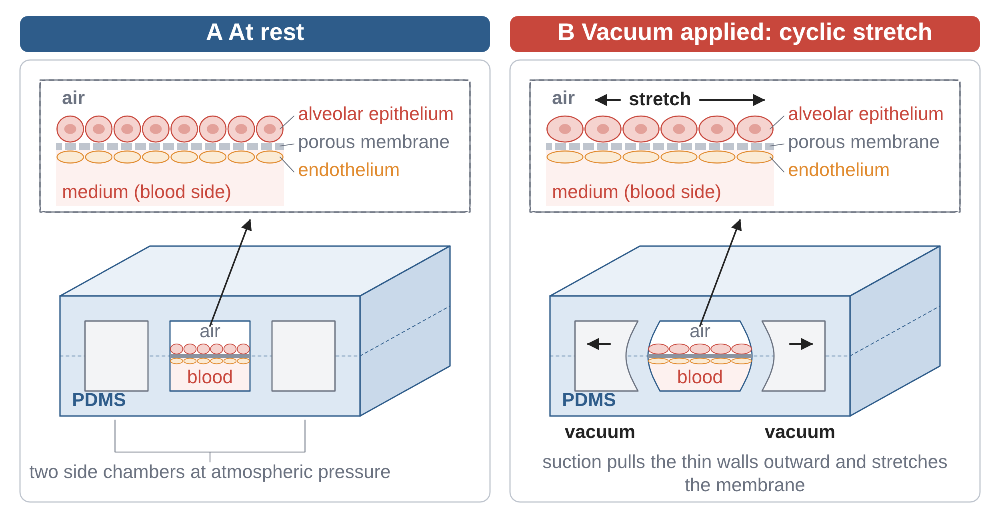
Materials and microfabrication
Most OoCs are fabricated using soft lithography or micromolding, techniques borrowed from microelectronics.
Polydimethylsiloxane (PDMS) remains a preferred material because of its optical transparency, biocompatibility, and elasticity, allowing flexible membranes that deform under vacuum to simulate tissue motion. However, PDMS can absorb small hydrophobic molecules, which has led to increasing use of thermoplastics such as COC, PMMA, or polycarbonate (PC) for improved chemical stability and scalability (An et al., 2025).
This has driven a clear shift in commercial platforms. A recent review of organ-on-chip fabrication documents the move from PDMS toward thermoplastics such as PMMA, polycarbonate and COC, which do not absorb small molecules and can be mass-produced by injection moulding or hot embossing, and toward membrane-free designs in which tissue compartments are separated by patterned hydrogels instead of porous membranes (Olaizola-Rodrigo et al., 2025).
The choice of material strongly influences how well an organ-on-a-chip device replicates the native microenvironment of tissues. Properties such as optical transparency, gas permeability, chemical stability, and biocompatibility determine whether a chip is suitable for cell imaging, long-term culture, or drug-testing applications.
Table 3.9 summarises the materials most used in OoC fabrication, together with their key advantages, limitations, and typical applications.
| Material | Advantages | Limitations | Typical Use Cases |
|---|---|---|---|
| PDMS (polydimethylsiloxane) | Flexible, transparent, gas-permeable, easy to prototype | Absorbs small hydrophobic molecules; surface hydrophobic recovery over time | Prototyping of lung-, gut-, and heart-on-chip devices; academic research |
| COC / PMMA (thermoplastics) | Chemically stable, low drug absorption, suitable for large-scale production | Less gas-permeable; relatively rigid | Commercial OoC systems; pharmaceutical drug-screening platforms |
| Glass | Excellent optical clarity; chemically inert; reusable and sterilisable | Brittle; more expensive and complex fabrication | Barrier-tissue chips; high-resolution imaging and optical sensing |
| Hydrogels (collagen, GelMA, PEG) | Biocompatible, tunable stiffness, supports cell adhesion and 3D growth | Limited mechanical strength; dehydration over time | 3D scaffolds for tissue interfaces; vascularised or soft-tissue OoCs |
Beyond the choice of material, the performance of an organ-on-a-chip depends on how effectively biological activity can be monitored and quantified in real time. Modern chip designs increasingly incorporate integrated sensors, electrodes, and optical windows, allowing the continuous tracking of physiological parameters such as barrier integrity, oxygen consumption, and metabolite production. These built-in sensing systems turn the organ-on-a-chip from a passive culture platform into an active analytical microsystem capable of mimicking and measuring living tissue functions simultaneously.
Integrated sensing and readouts
Turning organ-on-a-chip devices into analytical microsystems
Modern organ-on-a-chip (OoC) platforms increasingly incorporate integrated sensors and optical interfaces that allow continuous, non-invasive monitoring of biological processes. These sensing systems transform chips from simple culture chambers into smart analytical devices that generate quantitative, time-resolved data on tissue function and health (Huang et al., 2024).
Depending on the application, sensors can be electrical, optical, or chemical, and may be embedded directly in the microfluidic channels or placed adjacent to the culture compartments.
Electrical sensing: Microelectrodes measure transepithelial electrical resistance (TEER) to assess barrier integrity in lung-, gut-, or skin-on-a-chip models. TEER is measured with electrodes on both sides of the cell layer: a small alternating current is passed across the layer and the voltage over it is recorded. The resistance, multiplied by the membrane area (Ω·cm²), rises as tight junctions close the gaps between the cells, so a high and stable TEER indicates an intact barrier. Other electrical methods monitor cardiac contractility or neuronal activity via impedance or field-potential recordings.
Optical sensing: Transparent chip materials allow fluorescence or phase-contrast microscopy to visualise cell morphology, motility, and intracellular dynamics in real time. Miniaturised optical fibres can detect changes in pH, oxygen concentration, or calcium signalling.
Chemical sensing: Embedded biosensors can measure local metabolite concentrations (e.g., glucose, lactate, urea) or detect the secretion of inflammatory cytokines. Advanced setups integrate mass spectrometry or microfluidic sampling ports for high-resolution biochemical analysis.
Coupling these sensing modalities with AI-based image analysis and microfluidic automation enables closed-loop control, in which the system can automatically adjust flow rate, gas composition, or drug concentration based on measured feedback.
This integration marks an important step toward self-regulating microphysiological systems, where the chip behaves as a miniature “lab within a lab.”
Integrated sensing transforms organ-on-a-chip devices into intelligent microsystems capable of both reproducing and quantifying tissue function, paving the way for real-time, data-driven biological experimentation.
Toward multi-organ integration
The next step — connecting several organ chips into multi-organ or body-on-a-chip systems that reproduce drug absorption, metabolism and excretion — builds on the same principles of perfusion, mechanical actuation and sensing; it is treated in Section 3.5.3.3 and 3.5.4.
| Organ type | Physiological function replicated | Key read-outs | Representative applications |
|---|---|---|---|
| Lung-on-a-chip | Alveolar–capillary gas exchange; cyclic mechanical stretch | Barrier integrity, cytokine secretion, nanoparticle toxicity | Pulmonary inflammation, infection, and nanotoxicology studies |
| Gut-on-a-chip | Peristalsis, mucus secretion, host–microbe interaction | TEER, permeability, microbial dynamics | Intestinal absorption, microbiome research, IBD modelling |
| Heart-on-a-chip | Myocardial contraction under perfusion | Beat frequency, contractile force, Ca²⁺ transients | Cardiotoxicity assays, arrhythmia screening |
| Liver-on-a-chip | Hepatic metabolism and detoxification | Albumin/urea secretion, CYP activity | Drug metabolism, chronic toxicity testing |
| Kidney-on-a-chip | Glomerular filtration and tubular reabsorption | Filtration rate, ion transport | Nephrotoxicity, renal disease modelling |
| Brain-/BBB-on-a-chip | Blood–brain barrier transport, neuronal activity | Permeability, electrophysiology | Neurodegeneration, CNS drug delivery |
| Tumour-on-a-chip | 3D tumour–stroma–immune interaction | Migration/invasion, drug response | Cancer progression, metastasis, immunotherapy screening |
| Multi-organ (body-on-a-chip) | Systemic drug distribution and metabolism | Cross-organ metabolite tracking | Pharmacokinetics, multi-organ toxicity, personalised medicine |
3.5.3 Applications of organ-on-a-chip devices
3.5.3.1 From design to function
The design strategies described in Section 3.5.2 — controlling microchannel geometry, fluid shear, and cell–matrix interfaces — form the technological foundation for all organ-on-a-chip (OoC) applications. Once engineered, these microphysiological systems allow researchers to study how living tissues behave under physiologically realistic flow and mechanical stimulation, bridging the gap between static culture and the living body (Zhang et al., 2018; Zheng et al., 2016). Their impact now extends from fundamental biology to drug discovery and personalised medicine.
Figure 3.47 shows four classic examples of how these principles are turned into organ function. In the lung-on-a-chip, epithelium and endothelium line opposite sides of a porous membrane between an air channel and a medium channel, and cyclic vacuum in the side chambers stretches this alveolar–capillary interface as in breathing (Figure 3.47A). The gut-on-a-chip uses the same strategy: under flow and peristalsis-like strain, intestinal epithelial cells form villus-like folds (Figure 3.47B). Two heart models illustrate other read-outs. In the muscular thin-film chip, aligned cardiomyocytes grow on thin PDMS cantilevers that curl as the cells contract, and the curvature gives the contractile stress (Figure 3.47C). In the cardiac microphysiological system, micro-slits separate nutrient channels from a channel of aligned hiPSC-derived cardiomyocytes, which are fed by diffusion while being shielded from shear (Figure 3.47D).
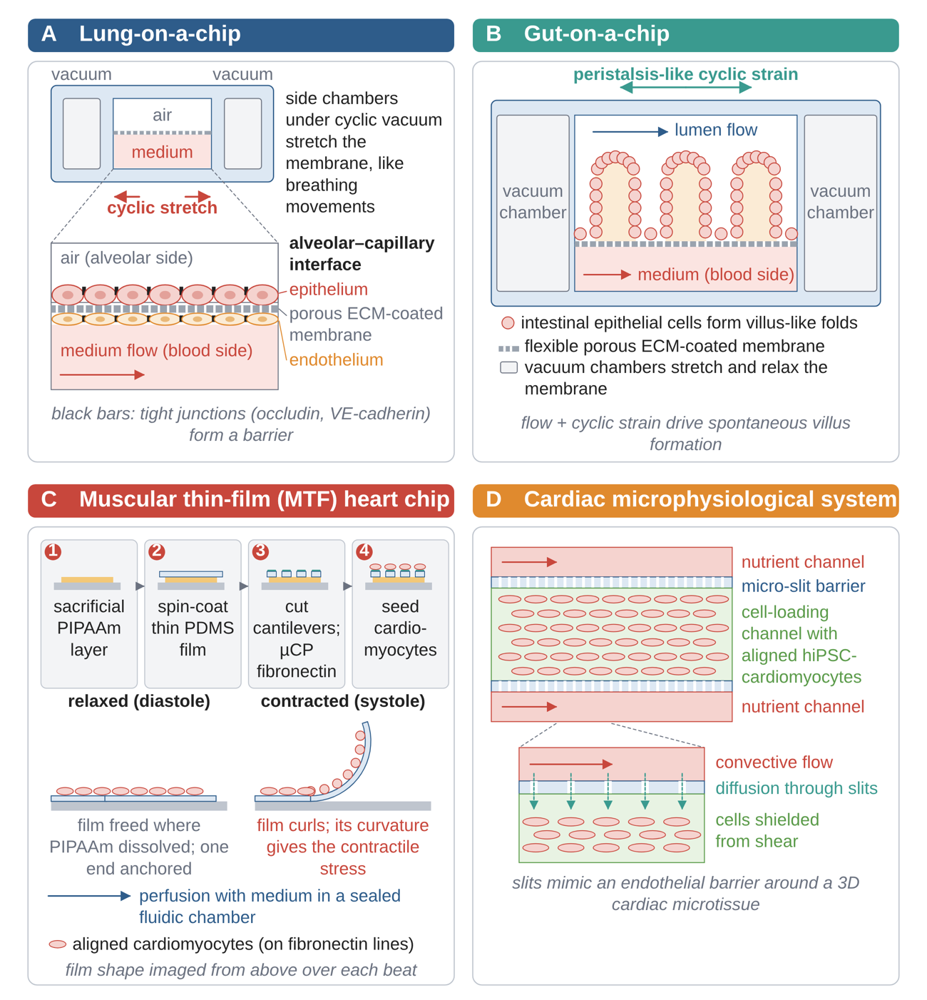
3.5.3.2 Biomedical and translational applications
Disease modelling
OoC systems have transformed how specific organs and disease states can be recreated in vitro (Ingber, 2022; Wang et al., 2023).
Lung-on-a-chip devices replicate the alveolar–capillary barrier and cyclic breathing motions, providing insight into pulmonary inflammation, nanoparticle toxicity, and viral infections such as SARS-CoV-2 (Ingber, 2022) (Figure 3.47).
Gut-on-a-chip models reproduce peristaltic motion, microbial colonisation, and nutrient absorption, enabling studies of intestinal disorders and drug absorption (Monteduro et al., 2023).
Heart-, brain-, and bone-on-chips reconstitute rhythmic contraction, barrier integrity, or mechanical loading to explore arrhythmia, neurodegeneration, or osteogenic mechanotransduction (An et al., 2025) (Figure 3.48).
Tumour-on-a-chip platforms rebuild the cancer microenvironment, integrating stromal and immune components to analyse invasion, metastasis, and therapy response (Tsai et al., 2017) (Figure 3.49).
Compared with organoids, these chips offer precise control of biochemical gradients and mechanical cues, while maintaining high optical accessibility for real-time imaging (Huang et al., 2024).
The brain-on-a-chip in Figure 3.48 shows how microfabrication can guide the wiring of neural tissue. Host neural spheroids sit in deep hemi-ellipsoidal wells connected by ECM-lined microchannels, along which neurite bundles grow to link the spheroids into a network; smaller satellite spheroids form within the channels (Figure 3.48A). When one spheroid is stimulated electrically, the response is recorded at successive sites along the bundles, showing that signals propagate from spheroid to spheroid (Figure 3.48B). Staining after seven days confirms that neurites bundle along the channels between the spheroids (Figure 3.48C).
Tumour-on-a-chip platforms apply the same logic to cancer (Figure 3.49). A perfused chamber supplies nutrients to, and removes waste from, 3D tumour tissue in an ECM gel (Figure 3.49A), in which cancer cells are combined with stromal fibroblasts, immune cells and microvessels so that the cell contacts and the oxygen and nutrient gradients of a solid tumour arise (Figure 3.49B). In a lung-cancer chip, tumour spheroids are embedded in a gel held between rows of PDMS pillars and flanked by endothelium-lined side channels, which recreates the tumour–vascular interface for studies of invasion and intravasation (Figure 3.49C). A breast-cancer chip stacks two channels separated by an ECM membrane, with DCIS spheroids and mammary epithelium above and fibroblast-containing stroma below, so that the duct wall separates tumour from stroma (Figure 3.49D).
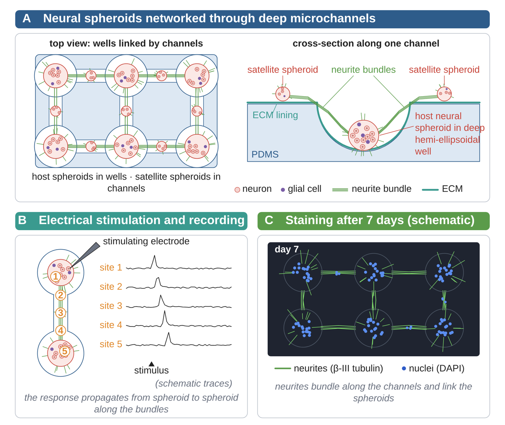
Drug discovery and toxicity testing
OoC platforms are increasingly recognised as human-relevant preclinical models that reduce reliance on animal experimentation (Wang et al., 2023; Zhang et al., 2018) (Figure 3.50). Through continuous perfusion, they replicate absorption, distribution, metabolism, and excretion (ADME) processes with improved predictive value for efficacy and safety.
Liver- and kidney-on-chips maintain metabolic competence for weeks, supporting chronic toxicity testing.
Vascularised heart- and liver-chips detect early cardiotoxic or hepatotoxic effects of candidate compounds.
Multi-organ configurations, or body-on-a-chip systems, interconnect tissues such as intestine, liver, and kidney to reproduce systemic pharmacokinetics (Ingber, 2022; Zheng et al., 2016).
The regulatory background is described in Section 1.5.2: the FDA Modernization Act 2.0 (December 2022) allows sponsors to submit data from nonclinical tests — explicitly including microphysiological systems such as organ-on-a-chip devices — instead of animal studies, and the FDA roadmap of April 2025 aims to reduce and ultimately replace animal testing in preclinical safety studies (U.S. FDA, 2025). This does not make organ chips “validated” by default: each model has to prove its predictive value for a defined context of use. A benchmark is the blinded study of Ewart et al. (2022), in which 870 human Liver-Chips were exposed to 27 drugs with known hepatotoxicity; the chips identified drug-induced liver injury with 87 % sensitivity and 100 % specificity. In September 2024 this Liver-Chip became the first organ-on-a-chip accepted (at the letter-of-intent stage) into the FDA’s ISTAND pilot programme for qualifying new drug development tools (U.S. FDA, 2024). Funding agencies are moving in the same direction: since July 2025 the NIH no longer issues funding opportunities exclusively for animal models (NIH, 2025), and the FDA Modernization Act 3.0, which replaces “animal” by “nonclinical” tests throughout the FDA regulations, passed the U.S. Senate in December 2025 and the House of Representatives in July 2026 (Congress.gov, 2026).
Figure 3.50 shows where organ chips fit into this process. In the traditional pipeline, thousands of compounds are screened during drug discovery (2–5 years), followed by preclinical tests in Petri dishes and animals (1–3.5 years), clinical trials in humans (5–7 years) and registration and approval (0.5–2 years), with costs rising at every stage (Figure 3.50A). Adding organ-on-a-chip platforms with human cells to the preclinical stage provides human-relevant data before animal studies and clinical trials (Figure 3.50B). Because data on safety and efficacy then become available earlier and are more relevant to humans, this integration can lower development costs, raise the probability of success in clinical trials and reduce the dependence on animal models.
Precision and personalised medicine
Combining patient-derived induced pluripotent stem cells (iPSCs) with OoC technology has yielded disease-in-a-chip and patient-on-a-chip systems that capture individual genetic backgrounds (Huang et al., 2024; Ingber, 2022). These allow tailored testing of drug efficacy and toxicity while maintaining tissue-specific architecture.
Integration of embedded biosensors enables continuous monitoring of oxygen, pH, and metabolic fluxes, and advanced AI-based image analysis converts chip read-outs into quantitative phenotypes (An et al., 2025) (Figure 3.51).
Figure 3.51 classifies such integrated sensors into three groups. Mechanical sensors detect the biomechanical cues acting on the cells, such as the fluid shear stress on a cell layer under flow and cyclic strain. Electrochemical sensors pick up the electrical signals of cells as well as signal molecules and glucose, oxygen and pH levels. Optical sensors translate physical or biochemical events into fluorescence, colour changes or interferometric signals. Together, these sensors turn the chip into a device that reports on its tissue in real time.
3.5.3.3 Toward integrated multi-organ systems
Progress in bioprinting and vascularised microfluidics is driving the evolution toward multi-organ and immune-competent chips, where perfused tissue modules communicate via circulating media (Huang et al., 2024; Wang et al., 2023; Zheng et al., 2016).
By linking liver, heart, lung, gut, and kidney units, researchers can approximate whole-body pharmacokinetics and systemic disease processes. These “human-on-a-chip” systems exemplify how engineering precision meets biological realism (Ingber, 2022) (Figure 3.52).
Figure 3.52 compares three ways of coupling such organ units. In the simplest configuration, intestine, liver, kidney and other organ chambers sit above a shared perfusion channel, separated from it by a porous membrane, so that a drug added to the flow can be followed through absorption, metabolism and excretion (Figure 3.52A). Lining the shared channel with endothelium adds a vessel wall between ‘blood’ and tissue and makes it possible to test intravenous administration (Figure 3.52B). In the most advanced set-up, separate organ chips are linked by robotic transfers of defined fluid volumes via an arteriovenous mixing reservoir; drugs are given orally through the intestinal lumen or intravenously into the reservoir, and samples of the circulating medium provide pharmacokinetic data analogous to those from human blood (Figure 3.52C).
3.5.4 Body-on-a-chip
3.5.4.1 From isolated organ models to interconnected physiology
The next step in organ-on-a-chip (OoC) technology is to link multiple organ models into integrated systems that replicate whole-body physiology on a microscale. By interconnecting chips representing different organs — such as the liver, heart, kidney, gut, and lung — researchers can reproduce systemic communication through circulating nutrients, hormones, and metabolites (Huang et al., 2024; Maschmeyer et al., 2015) (Figure 3.53).
These multi-organ platforms, referred to as body-on-a-chip (BoC) systems, simulate the dynamic cross-talk that governs pharmacokinetics and disease progression in humans. Fluidic connections act as artificial vasculature, allowing controlled transport of signalling molecules and drugs between modules. Typical examples include:
A liver–heart circuit, to study how hepatic metabolism alters cardiotoxicity.
A gut–liver–kidney loop, reproducing absorption–metabolism–excretion for toxicity screening.
A tumour–immune–vascular network, modelling drug delivery and immune interactions in cancer research.
To maintain physiological communication, BoC systems integrate recirculation pumps, microvalves, and on-chip sensors that regulate flow, oxygenation, and nutrient levels. Coupled with computational modelling and AI-assisted data analysis, they enable predictive simulations of drug behaviour within a “human-on-a-chip” context.
Multi-organ and body-on-chip systems extend the principles of OoC technology to capture whole-body physiology in vitro, providing powerful tools for drug metabolism, toxicity testing, and personalised medicine.
Figure 3.53 summarises this progression in four steps of increasing integration. A single-organ chip cultures one tissue on a porous membrane under controlled flow (Figure 3.53A). A multi-organ chip places several modules, such as gut, liver and kidney, in series on one device, so that metabolites produced in one compartment reach the next (Figure 3.53B). A body-on-a-chip connects organ modules in parallel to a pump-driven recirculating medium into which a drug is dosed, mimicking systemic circulation and pharmacokinetics (Figure 3.53C). The human-on-a-chip, which would integrate all major organ functions in one device, remains a conceptual end point (Figure 3.53D).
3.5.4.2 Body-on-a-Chip for drug screening and toxicology
Testing efficacy and safety in human-relevant systems. One of the main drivers of BoC development is the search for predictive preclinical models that can complement or replace animal testing. By combining human-derived cells from multiple organs within a shared perfusion circuit, BoC devices allow simultaneous assessment of absorption, metabolism, distribution, and toxicity (Huang et al., 2024).
Typical examples include:
Liver–heart–kidney chips, used to study how hepatic metabolism modifies a drug’s cardiotoxicity or renal clearance.
Gut–liver–immune models, to analyse nutrient uptake, microbiome interaction, and inflammation.
Multi-tumour–organ systems, where cancer and healthy tissues are co-cultured to evaluate therapeutic selectivity.
Advanced multi-organ platforms interconnect several organ modules through microchannels, pumps, and sensor arrays to reproduce systemic circulation and multi-tissue pharmacokinetics (Figure 3.54 and Figure 3.55). Integrated biosensors continuously monitor oxygen, pH, glucose, and metabolites, enabling direct in-chip measurements of pharmacokinetics (PK) and pharmacodynamics (PD) — the same parameters guiding clinical trials.
Figure 3.54 traces how these platforms grew out of simpler culture formats. The static Transwell insert, in which a cell monolayer on a porous membrane separates an apical compartment containing the drug from a basolateral well, has long been used to study absorption across epithelia; the gut chip reconfigures it into two perfused channels on either side of the epithelium, so that drug transport can be followed under flow (Figure 3.54A). Reconfigurable platforms link up to seven organ modules with microchannels and pneumatic micropumps and accept oral or intravenous dosing (Figure 3.54B). Integrated multi-compartment devices stack a top plate with access ports, electrodes, gaskets that define the flow path and tissue positions, and sensors, so that several tissue chambers share one flow path with real-time read-out (Figure 3.54C).
Figure 3.55 illustrates how a multi-organ body-on-a-chip (BoC) platform reproduces key aspects of drug handling and systemic responses in the human body. Seven organ modules are connected in parallel through microfluidic supply and return channels, with a pump maintaining continuous medium recirculation. The skin, lung and gut modules represent the principal routes of drug absorption following topical, aerosol and oral administration, respectively. The circulating medium distributes drugs and their metabolites throughout the organ network, while the liver module enables drug metabolism and the kidney module models drug clearance and excretion. Additional modules, such as the heart and bone, provide functional read-outs, including cardiac contractility and bone responses. Together, these interconnected modules allow the investigation of pharmacokinetic–pharmacodynamic (PK/PD) interactions. Pharmacokinetics (PK) describes how the body handles a drug through absorption, distribution, metabolism and excretion (ADME), whereas pharmacodynamics (PD) describes the drug’s biological effects, including therapeutic responses and toxicity. By monitoring drug concentrations and organ-specific responses over time, BoC platforms can reveal systemic and indirect toxic effects, such as the formation of toxic metabolites in the liver that subsequently damage the kidney or heart. These platforms therefore provide a more physiologically relevant model of drug behaviour, inter-organ communication and multi-organ toxicity than isolated single-organ systems, although their ability to reproduce human systemic physiology depends on appropriate physiological scaling and functional integration of the organ modules.
A landmark example is the multi-organ chip of Ronaldson-Bouchard et al. (2022). Matured human heart, liver, bone and skin tissues were each cultured in their own optimised medium and linked by a circulating vascular flow, separated from the tissue niches by an endothelial barrier. Over four weeks the tissues kept their phenotypes, and exposure to the anticancer drug doxorubicin reproduced its human pharmacokinetics and the early markers of cardiotoxicity. Keeping each tissue in its own niche while sharing a “blood” compartment solves one of the main problems of earlier body-on-a-chip systems: finding a single common medium that suits all organs.
Organoid modules provide a means of assessing organ-specific toxicity by monitoring cellular viability and functional responses following exposure to potentially harmful compounds (Figure 3.56). In this example, liver and cardiac organoids are evaluated using live/dead staining, with viable cells appearing green and dead cells red. Untreated controls consist predominantly of viable cells, whereas exposure to known toxic compounds increases the proportion of dead cells. Liver organoids (Figure 3.56A) are exposed to the heavy metals lead and mercury, which can induce hepatocellular damage, and to troglitazone, an antidiabetic drug withdrawn from the market because of severe drug-induced liver injury (DILI). These compounds illustrate how liver organoids can be used to investigate both environmental toxicity and drug-induced hepatotoxicity. Cardiac organoids (Figure 3.56B) are similarly exposed to lead and mercury, which can cause cardiovascular toxicity, and to astemizole, an antihistamine withdrawn from several markets because of its potential to induce serious cardiac arrhythmias. Astemizole inhibits cardiac hERG potassium channels, which can prolong the QT interval and increase the risk of potentially fatal ventricular arrhythmias. While live/dead staining provides a direct measure of cytotoxicity, detecting functional cardiotoxicity, such as altered electrical activity or impaired contractility, requires additional assays. Together, these examples demonstrate the potential of organoid-based models for preclinical toxicity screening and the identification of organ-specific adverse effects, complementing conventional cell culture and animal studies. The cell viability proportions shown in Figure 3.56 are schematic and illustrate expected toxicity responses rather than experimentally measured values.
Beyond conventional live/dead staining, multi-organoid chips enable the evaluation of organ-specific functions, drug-induced toxicity and therapeutic responses (Figure 3.57). Liver organoids (Figure 3.57A) provide a model for investigating drug-induced liver injury and the effectiveness of protective treatments. Acetaminophen (APAP, paracetamol) is generally safe at therapeutic doses, but an overdose leads to excessive formation of the toxic metabolite N-acetyl-p-benzoquinone imine (NAPQI). This metabolite depletes intracellular glutathione, resulting in oxidative stress, mitochondrial dysfunction and hepatocyte death. Co-treatment with N-acetyl-L-cysteine (NAC), the established antidote for acetaminophen poisoning, replenishes glutathione stores, promotes NAPQI detoxification and reduces liver injury. By reproducing both APAP-induced hepatotoxicity and NAC-mediated protection, liver organoids demonstrate their potential not only for toxicity screening but also for evaluating therapeutic interventions and drug rescue strategies. Cardiac organoids (Figure 3.57B) provide functional read-outs through their spontaneous contractile activity. Video microscopy combined with optical tracking of moving pixels enables the quantification of rhythmic contractions, generating beating traces from which contraction frequency, amplitude and rhythm regularity can be assessed. Changes in these parameters following drug exposure can reveal functional cardiotoxicity, even in the absence of significant cell death. Vascular modules (Figure 3.57C) allow the assessment of endothelial barrier integrity using transepithelial/transendothelial electrical resistance (TEER). Exposure to histamine increases endothelial permeability by disrupting intercellular junctions, resulting in a decrease in TEER. Following histamine washout, the endothelial barrier can recover, as reflected by an increase in TEER towards its baseline value. Together, these examples illustrate how organoid-based platforms extend beyond simple cytotoxicity measurements to provide dynamic, quantitative assessments of organ function, reversible physiological responses and therapeutic efficacy, thereby improving their relevance for preclinical drug evaluation.
Body-on-a-Chip models create dynamic, human-relevant environments for multi-organ drug testing, bridging the gap between in vitro assays and in vivo physiology.
Multi-organ-on-a-chip platforms enable the investigation of inter-organ interactions and systemic biological responses that cannot be reproduced in isolated single-organ models (Figure 3.58). Tumour metastasis (Figure 3.58A) can be studied using interconnected gut and liver organoid chambers, in which colon carcinoma cells detach from the primary intestinal tumour, migrate through the connecting microfluidic channel and colonise the liver compartment. This configuration reproduces key steps of metastatic dissemination and provides a model for investigating tumour cell migration, invasion and secondary tumour formation. Drug metabolism and therapeutic efficacy (Figure 3.58B) can be investigated by connecting liver and tumour organoids. For example, a prodrug of 5-fluorouracil (5-FU) may exhibit little or no antitumour activity when administered directly to a colon tumour organoid. However, when a liver module is included, hepatic enzymes can convert the prodrug into its active form, which subsequently reaches the tumour through the circulating medium and inhibits tumour growth. This illustrates the importance of inter-organ metabolic interactions in determining drug efficacy. Systemic inflammation (Figure 3.58C) provides another example of inter-organ communication. Exposure of an organ, such as the liver, to a toxic drug can trigger the release of pro-inflammatory cytokines, including tumour necrosis factor-alpha (TNF-α) and interleukin-1 (IL-1), into the circulating medium. These signalling molecules are transported to downstream tissues, such as the lungs, where they can activate inflammatory pathways, disrupt endothelial barrier integrity, increase vascular permeability and potentially induce secondary tissue damage, even without direct exposure to the original toxic compound. Together, these examples demonstrate how multi-organ-on-a-chip platforms can reproduce metastatic dissemination, metabolic drug activation and cytokine-mediated inflammatory signalling, providing valuable models for studying systemic disease mechanisms, inter-organ communication and drug responses that cannot be adequately captured by single-organ systems.
3.5.4.3 Challenges and Future Perspectives
As highlighted in Figure 3.53–Figure 3.55, the expansion from single organ to interconnected systems introduces both remarkable opportunities and new technical challenges. Toward standardised and accessible human-on-a-chip systems, several technical and conceptual hurdles remain before BoC devices can become mainstream research or regulatory tools (An et al., 2025):
Standardisation: Lack of common chip geometries, flow rates, and media formulations hampers reproducibility and cross-comparison between laboratories.
Scalability: Current platforms are intricate to assemble and maintain, limiting long-term operation and high-throughput applications.
Cell source and maturity: Variability among primary cells and iPSC-derived tissues affects physiological relevance and predictive accuracy.
Physiological scaling: Translating organ size, blood volume, and residence time from human to microscale remains a major challenge.
Integration and automation: Coordinating sensors, micro-pumps, and AI-driven feedback loops is essential for achieving real-time homeostatic control.
Emerging directions include modular microfluidic cartridges for easy replacement, bioprinted vascularised tissues, and AI-enhanced data interpretation to standardise analysis. These trends are moving BoC technology closer to clinical translation and personalised medicine, where patient-specific cell sources could forecast individual drug responses.
Multi-material 3D printing shows how fabrication and sensing can be combined in a single device (Figure 3.59). In this heart-on-a-chip, aligned cardiac tissue grows on a flexible cantilever with an embedded soft strain gauge; each contraction bends the cantilever, stretches the gauge and changes its electrical resistance in proportion to the contractile stress (Figure 3.59A). The printed device holds eight such cantilevers in separate wells, each wired to electrical contacts, so that the beating of several tissues is recorded at once as a resistance signal with one peak per beat (Figure 3.59B). Unlike the muscular thin film of Figure 3.47C, whose curvature has to be imaged, the contraction is here converted directly into an electrical signal.
Standardisation is now being addressed explicitly. In July 2024 the CEN-CENELEC Focus Group on Organ-on-Chip, with some 120 European experts, published a standardisation roadmap that recommends common terminology, minimum reporting requirements for cells and biomaterials, and technical standards to be developed further at ISO level (CEN-CENELEC, 2024).
The long-term vision of body-on-a-chip research is a fully integrated human-on-a-chip — a predictive, ethically sustainable platform that unites microengineering, cell biology, and computation for personalised testing and improved drug safety.
3.6 Future Directions
Microfabrication and organ-on-chip technologies are converging with bioprinting, artificial intelligence (AI), and sustainable materials science to form the next generation of biofabrication platforms. These hybrid systems will blur the boundary between device engineering and living biology, enabling continuous monitoring, adaptive control, and patient-specific modelling.
The field is shifting from static microdevices toward adaptive, self-regulating biohybrid systems. Future organ- and body-on-chip models will integrate embedded sensors, microactuators, and real-time feedback loops powered by machine learning algorithms. These systems will autonomously adjust flow rates, nutrient gradients, or drug concentrations based on sensor input—mimicking homeostasis more closely than ever before.
At the same time, advances in bioprinting will make it possible to construct these chips with 3D-printed vascular networks and cell-laden architectures, merging microfabrication precision with biological complexity. The next logical step is therefore “bioprinted organ-on-chip” systems, where bioprinting directly deposits cells, hydrogels, and microfluidic channels in a single automated process. This transition will be the bridge from Chapter 3 to the next, where bioprinting is explored in depth.
Another growing focus is sustainability. Traditional microfabrication relies heavily on PDMS and single-use plastics. The introduction of biodegradable polymers, nanocellulose composites, and recyclable COC or PLA-based materials is paving the way for eco-responsible biofabrication. Combining these materials with modular, reusable chip architectures will help reduce the environmental footprint of laboratory research.
Ultimately, the future of microfabrication lies in its integration with living systems and intelligent control — a transformation from microengineering to living engineering. Organ-on-chip platforms will not just model biology; they will become responsive biological interfaces, dynamically learning and adapting to cellular feedback.
3.7 Summary
Microfabrication gives biofabrication control over the environment of cells at the micrometre scale. Cells respond to a surface through a layer of adsorbed proteins, so surface chemistry, plasma treatment and plasma-polymerised coatings decide whether and how cells adhere, and the contact angle gives a quick read-out of these changes. Photolithography — spin coating, exposure, development and, where needed, etching — patterns resists with a resolution set by wavelength, mask gap and resist thickness, while direct-write methods trade throughput for flexibility.
Soft lithography transfers these patterns into elastomers such as PDMS. Replica moulding, capillary moulding, microcontact printing, microtransfer moulding and tissue micromoulding each suit a different structure or cell pattern. At these scales flow is laminar, transport is dominated by diffusion, and wall shear stress must stay within what cells tolerate; these principles guide the design of point-, line- and plane-shaped microtissues and their assembly into larger constructs.
Organ-on-a-chip devices bring these tools together into human-relevant models of organ function, and body-on-a-chip systems connect several organs to study drug distribution, metabolism and toxicity. Now that regulators accept such models as alternatives to animal testing, they are moving from research tools into drug development and personalised medicine.
Looking ahead. Chapter 4 turns to bioprinting, which adds the third dimension: cells and biomaterials are deposited layer by layer under digital control, and the microfabrication principles of this chapter return in printed channels and bioprinted organ-on-chip systems.
3.8 Exercises
Table 3.11 gives an overview of the exercises in this chapter: the conceptual, quantitative and computational exercises, what each block focuses on, and the section in which the background for each exercise is found.
| Block | Focus | Exercises (section) |
|---|---|---|
| Conceptual: Microfabrication (Exercises 1–5) | Lithography, PDMS, surfaces and patterning. | 1. Photolithography vs. soft lithography (3.3–3.4) 2. Why PDMS? (3.4) 3. Surface modification of PDMS (3.2) 4. Capillary forces and wetting (3.4.2) 5. Microcontact printing vs. microtransfer moulding (3.4.3–3.4.4) |
| Conceptual: Organ-on-a-chip (Exercises 6–8) | From single-organ chips to body-on-a-chip and hybrid devices. | 6. Mechanical stimuli on a chip (3.6.2) 7. Single-organ vs. multi-organ chips (3.6.4) 8. Bioprinting and microfabrication combined (3.7) |
| Discussion / Ethics (Exercises 9–12) | Replacement of animal tests, modelling, sustainability and AI. | 9. Organ-on-chip vs. animal models (3.6.3) 10. Limits of human-on-a-chip models (3.6.4) 11. Sustainable microfabrication (3.7) 12. AI-controlled biochips (3.7) |
| Quantitative / Applied (Exercises Q1–Q8) | Flow, diffusion, strain, transport and lithography by hand calculation. | Q1. Laminar co-flow in a Y-channel (3.5) Q2. How far does oxygen diffuse? (3.5) Q3. Breathing on a chip (3.6.2) Q4. Residence time in a multi-organ circuit (3.6.4) Q5. Drug transport across a barrier (3.6.4) Q6. What can your mask aligner resolve? (3.3) Q7. Shear stress and pressure in a culture channel (3.6.2) Q8. Can perfusion keep a liver chip alive? (3.6.2) |
| Computational, Google Colab: interactive (Exercises 1–3) | Widget-driven decision tools; no programming required. | 1. Organ-on-chip design studio (3.6) 2. Microfabrication method selector (3.3–3.4) 3. Sensor integration planner (3.6.2) |
| Computational, Google Colab: Python (Exercises 1–5) | Notebooks in which the Python code is read and modified. | 1. Microfluidic channel flow and cell viability (3.5) 2. Contact angle and surface treatment (3.2) 3. Photolithography pattern design (3.3–3.4) 4. Organ-on-chip perfusion: oxygen, glucose and shear (3.6.2) 5. Multi-organ system integration and drug ADME (3.6.4) |
3.8.1 Conceptual Exercises
Conceptual Understanding
1. Compare the principles of photolithography and soft lithography for producing microtissue moulds. What determines the resolution and fidelity of the final structures?
2. Explain why PDMS is widely used in microfluidics and discuss its advantages (optical transparency, elasticity, biocompatibility) and main limitations (permeability, absorption, scalability).
3. Describe how surface modification techniques (e.g. plasma treatment, chemical coatings) can improve PDMS bonding and biological compatibility.
4. Explain the role of capillary forces and wetting properties in filling microchannels during replica moulding or capillary moulding.
5. Compare the fabrication strategies of microcontact printing and microtransfer moulding in terms of patterning mechanisms and suitable applications.
6. Discuss how mechanical stimuli such as shear stress or cyclic strain are recreated in organ-on-a-chip systems, and why this is crucial for mimicking physiological conditions.
7. Explain how multi-organ (body-on-a-chip) systems differ functionally from single-organ chips, and give one example where inter-organ interaction changes drug response.
8. Identify two ways in which bioprinting can complement microfabrication in future hybrid devices.
Discussion / Ethics
9. Evaluate: Should organ-on-chip devices replace animal models in regulatory testing? Discuss the ethical, technical, and translational aspects.
10. Debate: What are the limitations of human-on-a-chip models in representing whole-body pharmacokinetics? How can AI and computational modelling help bridge these gaps?
11. Reflect: How can the use of biodegradable and recyclable materials make microfabrication more sustainable? Suggest one approach to reduce laboratory waste without compromising performance.
12. Consider: What are the risks and benefits of integrating AI-driven feedback control into microphysiological systems? Could such “autonomous” biochips raise new ethical or regulatory questions?
3.8.2 Quantitative / Applied Exercises
Exercise Q1: Laminar co-flow in a Y-channel. Two aqueous streams enter a Y-shaped channel at 5 and 10 µL min⁻¹ and flow side by side in a common channel of circular cross-section with a diameter of 200 µm (ρ = 1000 kg m⁻³, η = 1 × 10⁻³ Pa·s). (a) Calculate the mean velocity and the Reynolds number in the common channel. (b) Sketch the interface between the two streams: which fraction of the channel width does each stream occupy? (c) Explain why the two streams do not mix by turbulence and how this is used to create stable chemical gradients (Section 3.4).
Exercise Q2: How far does oxygen diffuse? (a) Estimate the diffusion length L ≈ (2Dt)½ of oxygen (D = 2 × 10⁻⁵ cm² s⁻¹) after 30 s. (b) Compare it with the height of a 200 µm microchannel. (c) How long does it take for oxygen to diffuse across the full channel height, and what does this imply for cells cultured at the bottom of a channel under slow flow?
Exercise Q3: Breathing on a chip. In a lung-on-a-chip the flexible membrane is stretched cyclically by 10 % at 0.3 Hz (Figure 3.46). (a) Estimate the mean strain rate (strain per second) during stretching, assuming a symmetric triangular strain cycle. (b) Compare the frequency with a human breathing rate of 12–20 breaths per minute. (c) Why is it the combination of strain amplitude and frequency, rather than flow alone, that increases nanoparticle uptake in the lung-on-a-chip (Section 3.5.2)?
Exercise Q4: Residence time in a multi-organ circuit. A micropump circulates medium at 50 µL min⁻¹ through five organ compartments connected in series, each with a volume of 10 µL. (a) Calculate the residence time per compartment and the time for one full circulation. (b) The total circulating volume including tubing and reservoir is 1 mL; how many times per day does the medium pass through the liver compartment? (c) Why is a small ratio of medium volume to tissue volume important for detecting organ–organ signalling (Section 3.5.4)?
Exercise Q5: Drug transport across a barrier. A drug has a diffusion coefficient of 5 × 10⁻⁶ cm² s⁻¹. (a) Calculate the characteristic diffusion time t ≈ L²/D across a 100 µm thick endothelial–ECM barrier. (b) Compare it with the residence time of Exercise Q4. (c) Which of the two processes limits drug equilibration between the vascular and the tissue compartment, and how would you include this in a pharmacokinetic model of a body-on-a-chip?
Exercise Q6: What can your mask aligner resolve? Use Equation 3.1 of Box 3.2. (a) Calculate the minimum feature size rmin for 50 µm thick SU-8 exposed at 365 nm in hard contact (g = 0). (b) Repeat for a 20 µm gap between mask and resist (proximity mode or a large dust particle). (c) Can you fabricate an SU-8 master with 5 µm wide walls between 50 µm deep channels? What would you change first: the resist thickness, the gap or the wavelength? (Note that an unfiltered mercury lamp also emits at 436 nm; see Box 3.2.)
Exercise Q7: Shear stress and pressure in a culture channel. A rectangular channel is 1 mm wide, 100 µm high and 10 mm long and is perfused with culture medium (η = 0.7 mPa·s at 37 °C) at 50 µL min⁻¹. For a wide, flat channel the wall shear stress is τw = 6ηQ/(wh²) and the hydraulic resistance is Rh = 12ηL/(wh³). (a) Calculate τw in Pa and in dyn cm⁻². (b) Calculate Rh and the pressure drop ΔP = Rh·Q. (c) Endothelial cells in arteries experience about 1–2 Pa; the wall of a liver sinusoid experiences only about 0.01–0.05 Pa (Vollmar and Menger, 2009), and the hepatocytes, shielded behind the sinusoidal endothelium, even less. How would you change the flow rate or the channel height to obtain 1.5 Pa for an endothelial chip, and what would happen to the pressure drop?
Exercise Q8: Can perfusion keep a liver chip alive? A liver chip has a culture chamber 10 mm wide, 10 mm long and 100 µm high, with 2.5 × 10⁵ hepatocytes per cm² on its 1 cm² floor, each consuming 0.4 fmol O₂ s⁻¹. Medium in equilibrium with air at 37 °C contains about 200 µM O₂, and hepatocytes need at least 40 µM. (a) Calculate the total oxygen consumption in mol s⁻¹. (b) Calculate the minimum flow rate that keeps the outlet oxygen concentration above 40 µM, assuming the medium is the only oxygen source. (c) Use the shear-stress formula of Exercise Q7 to calculate the wall shear stress at this flow rate in the chamber. Is it compatible with hepatocytes? What would it be at the same flow rate in the 1 mm wide channel of Exercise Q7? (d) PDMS is gas-permeable (Table 3.9). How does this change the answer compared with a thermoplastic chip?
3.8.3 Computational Exercises — Interactive (Google Colab)
The exercises in this section are supported by interactive Python notebooks running in Google Colab, a free, browser-based environment from Google in which Python code is executed on cloud servers. Calculations and simulations can therefore be performed directly in the browser, without local software installation; only a web browser and a (free) Google account are needed.
Each of the three notebooks in this section is a self-contained, widget-driven decision tool: sliders, dropdown menus and checkboxes set the design requirements, and the notebook immediately recalculates scores, costs and recommendations. No programming is required. The tools translate the design choices of this chapter — organ model and system complexity (Section 3.5), fabrication method (Section 3.2 and 3.3) and sensor integration (Section 3.5.2) — into explicit, quantitative trade-offs. Section 3.8.4, in contrast, contains five notebooks in which the Python code itself is read and modified. To start an exercise, open the notebook via the QR code or link, select Runtime → Run all to activate the widgets, and then adjust the controls; if the widgets do not appear, run the cells again with Runtime → Run all.
3.8.3.1 Exercise 1 — Organ-on-Chip Design Studio: Feasibility, Budget and Timeline
Problem Statement
Every organ-on-a-chip project starts with a planning question: can the intended device be built with the available money and time? The answer depends on the organ being modelled — a brain or heart chip requires more specialised cells, stimulation and read-outs than a skin or gut chip — and on the level of integration, from a single perfused chamber to an interconnected multi-organ system (Section 3.5.1 and 3.5.4). This exercise turns these considerations into a simple feasibility calculator. From the organ type and complexity level the tool estimates a minimum budget and a minimum timeline, compares them with the resources you set, and returns a feasibility score between 0 and 100 with recommendations. The purpose is to see how organ choice and integration level scale the required resources, and how the scoring rule weighs budget against time.
The engineering challenge is to understand the trade-offs between:
organ-specific complexity and the resources needed to reproduce organ function on a chip (Section 3.5.2, Figure 3.41, Table 3.7 and Table 3.10),
the number of compartments or organs and the budget and time needed to integrate them (Section 3.5.4, Figure 3.53 and Figure 3.54),
and the intended application and the level of integration it justifies (Section 3.5.3.2, Figure 3.50).
The notebook contains one interactive tool with five controls:
Budget — total available funding, €1,000–€20,000 in steps of €500 (default €10,000),
Timeline — project duration, 1–12 months (default 6 months),
Organ Type — liver, lung, heart, kidney, gut, brain or skin, each with a complexity factor,
Application — drug testing, disease modelling, toxicity screening or basic research,
Complexity — simple (single chamber), moderate (2–3 chambers) or complex (multi-organ).
The output panel shows the feasibility score, a status label, the estimated minimum budget and timeline next to your own values, and a list of recommendations.
Learning Outcomes
After completing this exercise, you should be able to:
Explain why organ type and system complexity scale the resources needed for an organ-on-a-chip project.
Calculate the minimum budget and timeline for a given organ and complexity level from multiplicative factors.
Reproduce a feasibility score by hand and interpret its status classes.
Identify combinations of budget and timeline that make a project feasible.
Recognise the consequences of a compensatory scoring rule, in which surplus in one resource can mask a deficit in another.
Theoretical Background
1) Minimum requirements. Each organ has a complexity factor \(f_{o}\) (skin 0.8, gut 0.9, liver 1.0, lung 1.2, kidney 1.2, heart 1.3, brain 1.5) and each integration level a factor \(f_{c}\) (simple 1.0, moderate 1.5, complex 2.5). The minimum budget (€) and minimum timeline (months) are
\[B_{\min} = 5000\, f_{o}\, f_{c},\quad\quad T_{\min} = 3\, f_{c}\]
Note that the organ factor affects the budget only; the timeline depends on the complexity level alone.
2) Resource sub-scores. Budget \(B\) and timeline \(T\) are scored relative to these minima, with 70 points awarded when a requirement is exactly met and a cap at 100:
\[s_{B} = min\left( 100,\ 70\,\frac{B}{B_{\min}} \right),\quad\quad s_{T} = min\left( 100,\ 70\,\frac{T}{T_{\min}} \right)\]
3) Feasibility score. The two sub-scores are averaged and an application bonus \(a\) is added (\(a = 15\) for drug testing, \(a = 10\) for the three other applications):
\[F = min\left( 100,\ \frac{s_{B} + s_{T}}{2} + a \right)\]
A score \(F \geq 80\) is labelled “highly feasible”, \(60 \leq F < 80\) “moderately feasible” and \(F < 60\) “challenging”.
4) Recommendations. A warning is shown when \(B < B_{\min}\) or \(T < T_{\min}\); when \(F \geq 80\) the tool reports that the parameters are well balanced and suggests adding sensors for better monitoring (see Exercise 3).
Model Assumptions
This model is intentionally simplified to emphasise core mechanisms:
The resource requirements of an organ are condensed into a single complexity factor; cell source, culture medium and read-out costs are not modelled separately.
Budget and timeline scale linearly with the complexity factors; economies of scale and learning effects are ignored.
The application changes only a fixed bonus, not the minimum requirements.
Budget and time are compensatory: a surplus in one partly offsets a deficit in the other.
The displayed minimum timeline is rounded down to whole months (4.5 months appears as “4 months”), whereas the score uses the exact value.
Despite these simplifications, the tool reproduces the qualitative message of Section 3.5: single-organ chips of barrier tissues are the most accessible, whereas neural, cardiac and multi-organ systems demand substantially more resources.
Digital Exercise (Google Colab)
This exercise is performed in an interactive Python notebook.
No local installation is required; the simulation runs entirely in the cloud. Scan the QR code or click the link below.
Launch Interactive Exercises in Google Colab
Tasks and Questions
For each part, adjust the controls, observe the output, and answer the corresponding questions.
Part 1 — Budget and Timeline
With the default settings (€10,000, 6 months, liver, drug testing, moderate), the score is 100. Calculate \(B_{\min}\), \(T_{\min}\), \(s_{B}\) and \(s_{T}\) by hand and explain why the score is capped.
Keep liver, drug testing and moderate complexity. What is the lowest budget at which the project is still “highly feasible” with a 6-month timeline? And with a 3-month timeline?
Set liver, simple, drug testing, €20,000 and 2 months. The tool warns that the timeline should be at least 3 months, yet labels the project highly feasible (88.3). Explain this with the compensatory scoring rule and propose a rule that makes each minimum requirement a hard constraint.
Part 2 — Organ Type and Complexity
At €5,000, 3 months, simple complexity and toxicity screening, compare gut and heart. Why does the heart chip score 12 points lower? Relate the higher factor to the read-outs listed in Table 3.10 (beat frequency, contractile force, Ca²⁺ transients).
Select brain, complex (multi-organ), drug testing and €20,000. Set the timeline to 7 months and then 8 months. The minimum timeline is displayed as 7 months in both cases, but the warning appears only at 7 months. Explain the discrepancy.
Change a liver project from moderate to complex at €10,000 and 6 months. How much do \(B_{\min}\) and \(T_{\min}\) increase? Using Exercise Q4 in Section 3.8.2, discuss which additional engineering problems (pumps, residence time, medium scaling) appear when compartments are coupled (Figure 3.53).
Part 3 — Application and Model Critique
Compare drug testing and basic research for a brain chip at €10,000, 6 months and moderate complexity. Why does only drug testing receive the larger bonus, and do disease modelling and toxicity screening differ at all in this model?
The organ factor affects the budget but not the timeline. Is this realistic? Give two organ-specific reasons (e.g. iPSC differentiation time, maturation of barrier function) why the timeline should also depend on the organ.
Core Message
The feasibility of an organ-on-a-chip project is set by the organ being modelled and, above all, by the level of integration: moving from one chamber to a multi-organ system multiplies both the budget and the time required. A scoring rule makes these requirements explicit, but its structure — caps, bonuses and compensation between resources — determines which projects look feasible, and must therefore be examined as critically as the numbers it produces.
3.8.3.2 Exercise 2 — Microfabrication Method Selector: Resolution, Material and Cost
Problem Statement
The same microfluidic design can be fabricated in several ways: by photolithography in silicon or glass (Section 3.2), by replica moulding of PDMS (Section 3.3.1), by 3D printing, or by CNC milling and laser cutting of thermoplastics such as PMMA. Which route is best depends on the smallest feature to be made, the substrate material, the number of chips, and what matters most to the project — cost, speed, resolution or material flexibility. This exercise compares five fabrication methods with a transparent point-scoring rule and ranks them for a set of requirements. The purpose is to see how the ranking shifts when one requirement changes, and to recognise where a simple scoring rule gives answers a process engineer would reject.
The engineering challenge is to understand the trade-offs between:
minimum feature size and the resolution limit of each method (Section 3.2.1 and 3.2.2, Box 3.2, Table 3.3 and Table 3.5),
material requirements of the device and the materials each method can process (Section 3.3 and 3.5.2, Table 3.9),
and set-up cost versus cost per chip as the production quantity increases, from academic prototypes to commercial devices (Section 3.5.2, Table 3.5 and Table 3.9).
The notebook contains one interactive tool with five controls:
Feature Size — the smallest feature required, 1–500 µm in steps of 10 µm (default 100 µm),
Quantity — number of chips, 1–5,000 in steps of 50 (default 100),
Material — PDMS, glass, silicon, PMMA or hydrogel,
Priority — cost, speed, resolution or flexibility,
Experience — beginner, intermediate or expert.
The output is a ranked table of soft lithography, photolithography, 3D printing, CNC milling and laser cutting with score, total cost, minimum feature size and speed, followed by the specifications of the top-ranked method.
Learning Outcomes
After completing this exercise, you should be able to:
Match a required feature size to the resolution limits of photolithography, soft lithography, 3D printing, CNC milling and laser cutting.
Identify which substrate materials each fabrication route can process.
Calculate the total cost of a production run from set-up and unit costs and find the break-even quantity between two methods.
Explain how the choice of priority and the operator’s experience change the ranking.
Recognise that photolithography and soft lithography are sequential steps rather than alternatives when PDMS chips are made.
Theoretical Background
1) Method specifications. Each method \(m\) has a minimum feature size \(d_{m}\), a set-up cost \(C_{s}\), a unit cost \(c_{u}\), a speed and resolution class, a complexity level and a list of compatible materials: photolithography 1 µm, €8,000, €20 (silicon, glass; high complexity); soft lithography 10 µm, €2,000, €5 (PDMS, hydrogel; low); 3D printing 50 µm, €1,500, €8 (PDMS, PMMA, hydrogel; low); CNC milling 100 µm, €3,000, €15 (PMMA, glass; moderate); laser cutting 150 µm, €1,000, €3 (PMMA, glass; low).
2) Resolution and material points. For a required feature size \(d\), a method receives 30 points if \(d \geq d_{m}\), 15 points if \(0.8\, d_{m} \leq d < d_{m}\) and 0 points otherwise; a compatible material adds 25 points.
3) Total cost and priority points. For a quantity \(n\),
\[C = C_{s} + n\, c_{u}\]
With priority “cost” the method receives \(s_{P} = max(0,\ 30 - C/500)\) points; with “speed” 30, 20 or 10 points for very fast, fast or moderate; with “resolution” 30, 20 or 10 points for excellent, good or moderate; and with “flexibility” 5 points per compatible material.
4) Experience and total score. A beginner gains 15, 5 or 0 points for methods of low, moderate or high complexity; an intermediate user 10, 10 or 5; an expert 5, 10 or 15. The total score, capped at 100, is
\[S = min\left( 100,\ s_{R} + s_{M} + s_{P} + s_{E} \right)\]
and the methods are ranked by \(S\).
Model Assumptions
This model is intentionally simplified to emphasise core mechanisms:
Resolution is a single threshold per method; aspect ratio, sidewall quality and surface roughness are not considered.
An incompatible material or an unreachable feature size lowers the score but does not exclude a method.
Costs are linear in quantity; equipment depreciation, cleanroom access and labor are not modelled, and total cost only enters the score when the priority is cost.
Methods are treated as alternatives, although in practice they are often combined (a photolithographic SU-8 master for PDMS replica moulding, Figure 3.15).
Despite these simplifications, the tool reproduces the practical rules of thumb of Table 3.5 and Table 3.9: photolithography for micrometer features, soft lithography for low-cost PDMS prototyping, and machining or laser cutting of thermoplastics for larger features and higher production numbers.
Digital Exercise (Google Colab)
This exercise is performed in an interactive Python notebook.
No local installation is required; the simulation runs entirely in the cloud. Scan the QR code or click the link below.
Launch Interactive Exercises in Google Colab
Tasks and Questions
For each part, adjust the controls, observe the output, and answer the corresponding questions.
Part 1 — Feature Size and Resolution
With the default settings (100 µm, 100 chips, PDMS, cost, intermediate), 3D printing (90.4) narrowly beats soft lithography (90.0). Reproduce both scores by hand.
Reduce the feature size to about 40 µm. Why does 3D printing still receive 15 resolution points although its minimum feature is 50 µm? Is this partial credit physically meaningful?
Set the feature size to 1 µm, material silicon, priority resolution and experience expert. Which method wins, and which ultimate limit does it face? Calculate the minimum resolution of contact printing with Equation 3.1 in Box 3.2 (Exercise Q6 in Section 3.8.2).
Part 2 — Material Compatibility
Keep 1 µm but change the material to PDMS and the experience to intermediate. Photolithography still ranks first although PDMS is not in its material list. Explain, using Section 3.3.1 and Figure 3.15, why this result is correct in practice but for the wrong reason in the model.
Select hydrogel, 1 µm, priority speed and beginner. 3D printing ranks first although it cannot produce the feature. Which rule would you add so that a method is excluded when \(d < d_{m}\) or the material is incompatible?
Compare glass with priority cost for an expert at about 100 µm. Why do CNC milling and photolithography rise to the top? Use Table 3.9 to list the advantages and drawbacks of glass devices.
Part 3 — Quantity and Cost
Calculate the break-even quantity between soft lithography and 3D printing. Verify in the table by setting the quantity to 1 and then to about 1,000 chips (PDMS, about 100 µm, cost priority).
At what quantity does the cost score of photolithography drop to zero? And that of soft lithography?
Set PMMA, about 200 µm and the maximum quantity. Laser cutting is by far the cheapest (about €16,000), yet ties with methods that cost 2.5–5 times more. Explain why, and relate the result to the use of thermoplastics in commercial OoC production (Table 3.9).
Core Message
No fabrication method is best in absolute terms: resolution, material, quantity and experience each favour a different route, and a ranking is only as good as the rules behind it. A reliable selection first applies hard constraints — can the method make the feature in the required material? — and only then weighs cost, speed and flexibility.
3.8.3.3 Exercise 3 — Sensor Integration Planner: Coverage, Priority and Budget
Problem Statement
Sensors and physiological read-outs are the fourth engineering pillar of organ-on-a-chip design (Box 3.5, Table 3.8): integrated electrodes, optical windows and biochemical sensors turn a culture chamber into a device that reports on tissue function in real time (Section 3.5.2, Figure 3.43 and Figure 3.51). Each sensor, however, adds cost, and a limited budget forces a choice between measuring many parameters and measuring the essential ones well. This exercise lets you assemble a sensor suite from ten sensor types in five categories, track its cost against a budget, and see which high-priority sensors are still missing. The purpose is to learn to justify a sensor selection from the organ model and the question being asked, rather than from the list of what is available.
The engineering challenge is to understand the trade-offs between:
the number of monitored parameters and the available budget (Section 3.5.2, Box 3.5),
metabolic, barrier, physical and imaging read-outs and the organ-specific functions they report (Figure 3.51, Table 3.10),
and experiment duration and the need for continuous environmental monitoring, particularly of oxygen (Section 3.5.2 and 3.5.4.1).
The notebook contains one interactive tool with three controls:
Budget — total sensor budget, €2,000–€30,000 in steps of €1,000 (default €15,000),
Duration — length of the experiment, 1–28 days (default 7 days),
Select Sensors — ten checkboxes, each with a fixed cost, priority and category: oxygen (€1,500, high), pH (€800, high), glucose (€2,000, medium) and lactate (€1,800, medium) as metabolic sensors; temperature (€400, high) as environmental sensor; TEER (€3,500, high) as barrier sensor; flow rate (€1,200, medium) and pressure (€1,000, low) as physical sensors; microscopy (€5,000, high) and fluorescence (€4,000, medium) as imaging read-outs.
The output panel shows a budget status, the total cost and remaining budget, a table of the selected sensors, the number of sensors per category, a list of unselected high-priority sensors with an indication of whether each fits in the remaining budget, and a duration alert.
Learning Outcomes
After completing this exercise, you should be able to:
Name the main sensor types used in organ-on-a-chip systems and the physiological parameter each one reports.
Assign sensors to metabolic, environmental, barrier, physical and imaging categories and evaluate the coverage of a sensor suite.
Assemble a sensor suite that meets a budget and justify the priority given to each sensor.
Explain why oxygen monitoring becomes more important in long-term culture.
Select organ-specific read-outs, such as TEER for barrier tissues, from the models in Table 3.10.
Theoretical Background
1) Total cost and remaining budget. For a set \(S\) of selected sensors with costs \(c_{i}\) and a budget \(B\),
\[C = \sum_{i \in S}^{}c_{i},\quad\quad R = B - C\]
All ten sensors together cost €21,200; the five high-priority sensors (oxygen, pH, temperature, TEER, microscopy) cost €11,200.
2) Budget status. The suite is “over budget” if \(R < 0\), “almost at limit” if 0 ≤ R < €1,000 and “within budget” if R ≥ €1,000.
3) Coverage. For each category \(k\) the tool counts the number of selected sensors \(n_{k}\); categories without a selected sensor are not listed.
4) Recommendations. Every unselected high-priority sensor \(j\) is listed; it “fits in budget” if \(c_{j} \leq R\), and otherwise the shortfall \(c_{j} - R\) is shown. Each sensor is compared with \(R\) separately, not in combination with the other recommendations.
5) Duration alert. If the duration \(t > 14\) days and no oxygen sensor is selected, the tool recommends O₂ monitoring.
Model Assumptions
This model is intentionally simplified to emphasise core mechanisms:
Sensor costs are one-time purchase costs; consumables, calibration and the costs of integrating the sensor into the chip are not included.
Priorities are fixed and do not depend on the organ or the application.
The duration affects only the oxygen alert, not the cost or the need for other sensors (e.g. sensor drift and recalibration).
Coverage is a count of sensors per category, not a measure of information content or of temporal resolution.
Despite these simplifications, the tool captures the central planning problem of Section 3.5.2: a small set of environmental and metabolic sensors is affordable and essential, whereas barrier and imaging read-outs add most of the cost and must be justified by the biological question.
Digital Exercise (Google Colab)
This exercise is performed in an interactive Python notebook.
No local installation is required; the simulation runs entirely in the cloud. Scan the QR code or click the link below.
Launch Interactive Exercises in Google Colab
Tasks and Questions
For each part, adjust the controls, observe the output, and answer the corresponding questions.
Part 1 — A Minimal Sensor Suite
Set the budget to €5,000 and select oxygen, pH and temperature. What is the remaining budget, and which high-priority sensors are shown as not fitting? By how much do they exceed it?
Add flow rate and then pressure. At which point does the status change to “almost at limit”? Would you rather spend the last €2,200 on flow and pressure or save towards TEER? Justify for a gut-on-a-chip (Table 3.10).
Why are temperature and pH considered high priority even though they are the cheapest sensors? Relate your answer to the environmental control pillar in Table 3.8.
Part 2 — Comprehensive Monitoring
Set the budget to €20,000 and select all five high-priority sensors. How much budget remains, and which medium-priority sensors can you still add?
With a budget of €10,000, select only glucose and lactate. All five high-priority sensors are marked “fits in budget”. Can you actually buy all of them? Explain the limitation of comparing each sensor separately with \(R\).
Look at the category coverage when all ten sensors are selected. Which physiological functions from Table 3.10 (e.g. beat frequency and contractile force for a heart chip, albumin and urea secretion for a liver chip) are still not covered by any sensor?
Part 3 — Duration and Organ-Specific Planning
Increase the duration from 14 to 15 days without selecting oxygen. What changes in the output? Use Exercise Q8 in Section 3.8.2 to explain why oxygen supply by perfusion may not keep up with consumption in a liver chip over longer culture periods.
Design sensor suites for a lung-on-a-chip and a heart-on-a-chip with €12,000 each. Which sensors differ, and why? Use Exercise Q5 (drug equilibration across a barrier) to justify TEER for the lung model.
Choose between the flow-rate and pressure sensors to verify the wall shear stress in the channel (Exercise Q7 in Section 3.8.2). Which one gives the more direct measurement?
Core Message
A sensor suite should be designed from the biological question, not from the catalogue: a few inexpensive environmental and metabolic sensors are essential in every chip, whereas barrier and imaging read-outs are chosen for the organ being modelled. Budget planning is a combinatorial problem, and long experiments add requirements — above all continuous oxygen monitoring — that a short pilot study does not reveal.
3.8.4 Computational Exercises — Python (Google Colab)
The five notebooks in this section go one step further than the interactive exercises of Section 3.8.3: the Python code that implements each model is visible and editable, and readers are expected to modify parameters, extend functions and interpret the resulting plots and printed tables. Basic familiarity with Python (variables, functions, dictionaries, plotting) is sufficient; each notebook installs its own dependencies at the start of the first code cell.
Before starting, make a copy of the notebook in your own Google Drive (File → Save a copy in Drive), run the cells in order and answer the reflection questions at the end of each notebook. Cells with parameters to explore are marked “MODIFY THIS” or “STUDENTS CAN MODIFY”; after changing a value, re-run the cell so that all downstream calculations, tables and plots are updated.
3.8.4.1 Exercise 1 — Microfluidic Channel Flow: Reynolds Number, Shear Stress and Cell Viability
Problem Statement
Every organ-on-a-chip is perfused through microchannels, and the flow that delivers nutrients and removes waste also exerts a shear stress on the cells lining the channel walls (Section 3.4 and 3.5.2). This exercise calculates, for a rectangular microchannel, the hydraulic diameter, mean velocity, Reynolds number and wall shear stress from the channel width, channel height, volumetric flow rate and fluid properties. It then screens four geometries at six flow rates against a combined “safe” criterion, to discover which constraint actually limits microfluidic design: turbulence or shear.
The engineering challenge is to understand the trade-offs between:
flow rate for nutrient delivery and the wall shear stress experienced by the cells (Section 3.5.2, Box 3.5, Figure 3.45),
channel width, height and aspect ratio and the resulting velocity, hydraulic diameter and shear (Section 3.4, Figure 3.43 and Exercise Q7 in Section 3.8.2),
and higher throughput obtained by increasing the flow rate versus adding parallel channels (Section 3.4, Table 3.7).
The notebook contains seven sections, each with adjustable parameters:
Basic Microfluidic Parameters — density and viscosity at 37 °C of water (993 kg m⁻³, 0.692 mPa·s), cell culture medium (1000 kg m⁻³, 0.75 mPa·s), blood (1060 kg m⁻³, 3.5 mPa·s) and PBS (1005 kg m⁻³, 0.72 mPa·s),
Reynolds Number Calculator — hydraulic diameter, mean velocity, Reynolds number and flow-regime classification for a 500 µm × 100 µm channel perfused with medium at 10 µL min⁻¹,
Shear Stress Analysis — wall shear stress in Pa and dyn cm⁻², classified as too low (< 0.1 Pa), acceptable (0.1–5 Pa) or excessive (> 5 Pa),
Channel Design Exploration — four geometries (standard 500 × 100 µm, square 200 × 200 µm, wide–shallow 1000 × 50 µm, narrow–deep 100 × 300 µm) at 1, 5, 10, 20, 50 and 100 µL min⁻¹, giving 24 configurations that are labelled safe when Re < 2300 and 0.1 ≤ τ ≤ 5 Pa,
Flow Profile Visualisation — four-panel figure with the parabolic velocity profile across the channel height, Re versus flow rate, shear stress versus flow rate and the safe operating window,
Hands-on Exploration — four design tasks (hepatocyte channel, blood versus medium, capillary mimic, tenfold scale-up),
Reflection Questions — flow regime, geometry effects, vascular chips, practical constraints and multi-organ integration.
Learning Outcomes
After completing this exercise, you should be able to:
Convert a pump setting in µL min⁻¹ into a mean velocity and a hydraulic diameter for a rectangular channel.
Calculate the Reynolds number and explain why microfluidic flow is laminar.
Calculate the wall shear stress and express it in both Pa and dyn cm⁻².
Explain why shear stress depends strongly on the smallest channel dimension.
Select channel dimensions and a flow rate that place a given cell type within a target shear window.
Compare scale-up by increasing flow rate with scale-up by parallelisation.
Theoretical Background
1) Hydraulic diameter and mean velocity. For a rectangular channel of width \(w\) and height \(h\) perfused at a volumetric flow rate \(Q\),
\[D_{h} = \frac{2wh}{w + h},\quad\quad\overline{u} = \frac{Q}{wh}\]
with 1 µL min⁻¹ = 1.667 × 10⁻¹¹ m³ s⁻¹.
2) Reynolds number. The ratio of inertial to viscous forces is
\[Re = \frac{\rho\,\overline{u}\, D_{h}}{\eta}\]
where \(\rho\) is the density and \(\eta\) the dynamic viscosity. The notebook classifies the flow as laminar for \(Re < 2300\), transitional for \(2300 \leq Re < 4000\) and turbulent above 4000. For the default channel, \(D_{h} = 166.7\) µm, \(\overline{u} = 3.33\) mm s⁻¹ and \(Re = 0.74\).
3) Velocity profile. Between two parallel plates separated by \(h\), the fully developed profile is parabolic:
\[u(y) = u_{\max}\left\lbrack 1 - \left( \frac{2y}{h} - 1 \right)^{2} \right\rbrack,\quad\quad u_{\max} = \frac{3Q}{2wh} = 1.5\,\overline{u}\]
4) Wall shear stress. The velocity gradient at the wall gives
\[\tau_{w} = \frac{6\eta Q}{wh^{2}}\quad(h < w)\]
and the same expression with \(w\) and \(h\) interchanged when \(h > w\). For the default channel, \(\tau_{w} = 0.150\) Pa = 1.50 dyn cm⁻² (1 Pa = 10 dyn cm⁻²).
Model Assumptions
This model is intentionally simplified to emphasise core mechanisms:
All fluids are Newtonian with constant viscosity; the shear-thinning behaviour of blood and the presence of cells are ignored.
Flow is steady and fully developed; entrance effects, pulsatility and wall compliance of PDMS are not included.
The parallel-plate expressions are exact only for \(h \ll w\); for the square channel they are an approximation, and the corners of the channel are ignored.
The Reynolds-number thresholds are those of pipe flow, and the 0.1–5 Pa window is a generic criterion, not a cell-type-specific tolerance.
Pressure drop and hydraulic resistance are not calculated (see Exercise Q7 in Section 3.8.2).
Despite these simplifications, the model shows the key result of microfluidic design: Re never exceeds about 11 in the tested range, so turbulence is irrelevant, and the design is governed by shear stress.
Digital Exercise (Google Colab)
This exercise is performed in an interactive Python notebook.
No local installation is required; the simulation runs entirely in the cloud. Scan the QR code or click the link below.
Launch Microfluidic Flow Calculator in Google Colab
Tasks and Questions
For each section, modify the parameters, run the cells, observe the output and answer the corresponding questions.
Sections 1–3 — Fluid Properties, Reynolds Number and Shear Stress
Verify the default output by hand: calculate \(D_{h}\), \(\overline{u}\), \(Re\) and \(\tau_{w}\) for 500 µm × 100 µm at 10 µL min⁻¹ and compare with the notebook. Compare your Re with the statement in Section 3.4 that microfluidic flow operates at \(Re < 1\), and with Exercise Q1 in Section 3.8.2.
Change fluid to ‘Blood’. How do Re and \(\tau_{w}\) change (Re ≈ 0.17, \(\tau_{w}\) ≈ 0.70 Pa), and why does one decrease while the other increases? What makes blood more challenging than the model suggests?
Since Re is proportional to \(Q\), estimate the flow rate at which the default channel would reach \(Re = 2300\), and the wall shear stress at that flow rate. Is turbulence a realistic concern?
Hepatocytes are assumed in the notebook to prefer 0.5–2 Pa, far more than the shear in the liver sinusoid (Exercise Q7 in Section 3.8.2). Modify width, height and flow_rate to find three combinations in this window. Which one gives the highest throughput?
Sections 4–5 — Channel Design Exploration and Flow Profiles
Of the 24 configurations, 17 are labelled safe. Which criterion excludes the other seven: the Reynolds number or the shear stress, and is the shear too high or too low? What does this tell you about which constraint dominates?
At 100 µL min⁻¹, the wide–shallow channel gives 3.0 Pa and the square channel 0.94 Pa. Explain this difference from the \(1/h^{2}\) dependence of \(\tau_{w}\). Why is the parallel-plate formula least reliable for the square channel (Exercise Q7 in Section 3.8.2)?
Add a “Vascular Chip” entry to the geometries dictionary that places endothelial cells at 1–4 Pa, the range quoted in the reflection questions, for flow rates of 20–100 µL min⁻¹. Relate your design to the vascularised chips of Table 3.7.
Sections 6–7 — Exploration Tasks and Reflection
Capillary mimic: for an 8 µm × 8 µm channel and a mean velocity of 1 mm s⁻¹, calculate the required flow rate (≈ 4 × 10⁻³ µL min⁻¹) and the wall shear stress with medium and with blood. Why is this flow rate outside the range suggested in the notebook, and what does this mean for pump selection?
Scale-up: compare a tenfold increase in flow rate in one channel with ten parallel channels at the original flow rate. How do Re and \(\tau_{w}\) change in each case, and which option protects the cells?
A drug must be delivered at 100 µL min⁻¹ through a 200 µm × 100 µm channel. Calculate Re (≈ 15) and \(\tau_{w}\) (≈ 3.75 Pa). Is this feasible for endothelial cells, and which additional constraint (pressure drop, bonding strength, Exercise Q7) should be checked?
In a liver → kidney circuit, the same flow passes through both organ chambers. How could different chamber cross-sections provide organ-specific shear stress at a common flow rate? Connect your answer to Exercise Q4 in Section 3.8.2 and to Exercise 5 (Section 3.8.4.5).
Core Message
At the microscale, turbulence is not the problem: the Reynolds number stays far below the laminar limit for any realistic pump setting. The design variable that matters is the wall shear stress, which depends linearly on flow rate and viscosity but inversely on the square of the channel height, so the smallest channel dimension largely determines what the cells feel.
3.8.4.2 Exercise 2 — Contact Angle and Surface Treatment: Surface Energy, Plasma Activation and Hydrophobic Recovery
Problem Statement
Whether cells attach to a microfluidic device depends first on its surface: the water contact angle reports the surface energy, which controls protein adsorption and, through it, cell adhesion (Section 3.1.1 and 3.1.2). PDMS, the most common organ-on-a-chip material, is hydrophobic; plasma treatment makes it hydrophilic, but the effect fades by hydrophobic recovery. This exercise estimates surface energy from the contact angle, converts it into an empirical cell-adhesion score, models the effect of O₂, NH₃, Ar and CF₄ plasma as a function of treatment time and follows the recovery of the contact angle over one week.
The engineering challenge is to understand the trade-offs between:
wettability, surface energy and cell adhesion (Section 3.1.1, Figure 3.1),
treatment gas and duration versus the stability of the treated surface (Section 3.1.2, Figure 3.4, Table 3.1, Box 3.1),
and substrate properties such as optical quality, cost, drug absorption and surface stability (Table 3.9; Section 3.1.3 and Table 3.2 for permanent plasma-polymerised coatings).
The notebook contains eight sections, each with adjustable parameters:
Contact Angle Fundamentals — classification of wettability and a property table for six substrates: untreated PDMS (110°), O₂-plasma PDMS (15°), polystyrene (90°), PMMA (75°), glass (20°) and COC (95°), with listed surface energy, adhesion score (1–10), cost and transparency,
Surface Energy Calculations — Young’s equation, a single-liquid surface-energy estimate and the cell-adhesion score, illustrated for untreated PDMS,
Plasma Treatment Modelling — contact angle after O₂, NH₃, Ar or CF₄ plasma for a chosen duration (default O₂, 60 s),
Surface Recovery over Time — contact angle and adhesion score from 0 to 168 h after treatment,
Visualisation — contact angles of the six substrates, surface energy versus adhesion score, treatment time courses for the four gases and the hydrophobic-recovery curve,
Substrate Selection Tool — primary and alternative substrates for adherent and non-adherent culture, protein patterning, drug testing, high-throughput screening and optical imaging,
Hands-on Exploration — four tasks (endothelial cells, patterned surfaces, aging, cost–performance),
Reflection Questions — five open questions on wettability, recovery, substrate choice, protein adsorption and patterning.
Learning Outcomes
After completing this exercise, you should be able to:
Relate the water contact angle to wettability and to the work of adhesion through Young’s equation.
Estimate a solid surface energy from a single contact angle and state the limits of this estimate.
Predict how plasma gas and treatment time change the contact angle of a polymer.
Describe hydrophobic recovery as a first-order process and calculate the usable time window after treatment.
Choose a substrate and treatment for a given application and justify the choice.
Critically evaluate an empirical scoring function, including its discontinuities.
Theoretical Background
1) Young’s equation and work of adhesion. For a liquid drop on a solid,
\[\gamma_{SV} = \gamma_{SL} + \gamma_{LV}\cos\theta,\quad\quad W_{a} = \gamma_{LV}(1 + cos\theta)\]
where \(\theta\) is the contact angle and \(\gamma_{LV}\) = 72.8 mN m⁻¹ for water.
2) Surface-energy estimate. The notebook approximates the solid surface energy as half the work of adhesion:
\[\gamma_{s} \approx \frac{\gamma_{LV}(1 + cos\theta)}{2}\]
For untreated PDMS (110°), \(\gamma_{s}\) = 24.0 mN m⁻¹. The code labels this “simplified Owens–Wendt”; a true Owens–Wendt analysis requires at least two probe liquids to separate dispersive and polar components.
3) Cell-adhesion score. An empirical piecewise function (clipped to 0–10) with its optimum at 40–70 mN m⁻¹:
\[S = \left\{ \begin{matrix} 2 + 3\gamma_{s}/30 & \gamma_{s} < 30 \\ 5 + 0.3\left( \gamma_{s} - 30 \right) & 30 \leq \gamma_{s} < 40 \\ 8 + \left( \gamma_{s} - 55 \right)/15 & 40 \leq \gamma_{s} \leq 70 \\ 9 - \left( \gamma_{s} - 70 \right)/20 & \gamma_{s} > 70 \end{matrix} \right.\ \]
4) Plasma treatment. The contact angle decreases towards a minimum \(\theta_{\min}\) (10° for O₂, 20° for NH₃ and Ar) with a 30 s time constant:
\[\theta(t) = \theta_{0} - \left( \theta_{0} - \theta_{\min} \right)\varepsilon\left( 1 - e^{- t/30\,\text{s}} \right)\]
with efficiencies \(\varepsilon\) = 0.85 (O₂), 0.70 (NH₃) and 0.60 (Ar). CF₄ instead raises \(\theta\) towards 120° with \(|\varepsilon|\) = 0.50. With the defaults (PDMS, O₂, 60 s), \(\theta\) falls from 110° to 36.5°, \(\gamma_{s}\) rises from 24.0 to 65.7 mN m⁻¹ and \(S\) from 4.4 to 8.7.
5) Hydrophobic recovery. After treatment, the angle returns to its initial value \(\theta_{0}\) with a half-life of 48 h:
\[\theta(t) = \theta_{t} + \left( \theta_{0} - \theta_{t} \right)\left( 1 - e^{- kt} \right),\quad\quad k = \frac{\ln 2}{48\ \text{h}}\]
so that \(\theta\) reaches 58.0° after 24 h, 84.0° after 72 h and 103.5° after one week.
Model Assumptions
This model is intentionally simplified to emphasise core mechanisms:
Surface energy is estimated from a single liquid (water); dispersive and polar contributions are not separated.
The listed substrate surface energies and adhesion scores in Section 1 are fixed values; they are not computed with the function of Section 2 and do not always agree with it.
Plasma treatment depends only on gas type and duration; power, pressure and gas flow are not modelled, and efficiencies are illustrative.
Recovery is a single exponential towards the original angle, independent of storage conditions.
The adhesion score is a heuristic; protein adsorption and cell-type differences are not modelled explicitly.
Despite these simplifications, the model reproduces the behaviour summarised in Table 3.1 and Box 3.1: plasma treatment converts hydrophobic PDMS into a hydrophilic, cell-adhesive surface within a minute, but the effect decays over days.
Digital Exercise (Google Colab)
This exercise is performed in an interactive Python notebook.
No local installation is required; the simulation runs entirely in the cloud. Scan the QR code or click the link below.
Launch Contact Angle Analyzer in Google Colab
Tasks and Questions
For each section, modify the parameters, run the cells, observe the output and answer the corresponding questions.
Sections 1–2 — Contact Angles and Surface Energy
Apply calculate_surface_energy to the contact angles of the six substrates and compare the results with the listed surface energies. Which substrates differ most (e.g. polystyrene: 36.4 versus 42 mN m⁻¹), and why can a single-liquid estimate not reproduce them?
Vary theta_pdms between 80° and 120°. Above which contact angle does the adhesion score fall below 5, and below 4?
Plot \(S\) for \(\gamma_{s}\) = 20–80 mN m⁻¹. Where does the function jump, and by how much? Propose a continuous function with the same optimum.
Sections 3–4 — Plasma Treatment and Recovery
Endothelial cells are assumed to prefer \(\theta\) = 40–60°. Find the O₂ treatment durations that reach this range on PDMS. Can NH₃ or Ar reach 40°? Explain using their asymptotes.
Set duration = 180. What is the lowest angle O₂ plasma can reach in this model, and why is it higher than both \(\theta_{\min}\) and the 15° listed for O₂-plasma PDMS in Section 1?
After a 60 s O₂ treatment, when does \(\theta\) exceed 60°, and when does the adhesion score drop below 5? Propose a re-treatment or cell-seeding schedule.
Treat PDMS with CF₄ for 60 s. What contact-angle contrast with O₂-treated PDMS can be obtained, and how could it be used for patterning?
Sections 5–8 — Visualisation, Substrate Selection and Reflection
The selector recommends glass for drug testing. Explain this choice using the absorption of small hydrophobic molecules by PDMS (Table 3.9).
Design a surface with alternating 100 µm hydrophilic and hydrophobic stripes. Would you use a masked plasma treatment, microcontact printing (Section 3.3.3, Figure 3.17 and Figure 3.18) or plasma polymerisation (Section 3.1.3)? Which option is stable over a multi-day experiment?
Add a cost dictionary for disposable PS plates, PDMS chips with weekly O₂ plasma and glass chips with one-time silanisation, and compare three-month costs. Which assumptions dominate the result?
Is a superhydrophilic surface (θ = 5°) always better for cells? Discuss protein adsorption and the upper branch of the adhesion score.
Core Message
Surface treatment is a time-dependent process, not a one-time state. Plasma activation raises the surface energy of PDMS into the range that supports cell adhesion within seconds, but hydrophobic recovery reverses it over days, so a practical protocol must specify both the treatment and the time window in which the surface is used.
3.8.4.3 Exercise 3 — Photolithography Pattern Design: Resolution, Aspect Ratio, Replication and Cost
Problem Statement
Most organ-on-a-chip devices start as a photoresist master on a silicon wafer that is replicated in PDMS by soft lithography (Section 3.2.1 and 3.3.1). Whether a design can be made depends on the smallest feature that can be exposed, the aspect ratio of the channels, the fidelity of successive PDMS replicas, the alignment of stacked layers and the cost of the chosen fabrication route. This exercise checks a channel design against these constraints and compares five fabrication methods for 10 to 5,000 devices, to identify which constraint actually limits a biofabrication design.
The engineering challenge is to understand the trade-offs between:
resolution, wavelength, mask–resist gap and resist thickness in contact, proximity and projection exposure (Section 3.2.1, Figure 3.6 and Figure 3.8, Box 3.2),
channel depth, channel width and structural stability, and the fidelity of successive PDMS replicas (Section 3.2.1.1 and 3.3.1, Figure 3.15),
and set-up cost, cost per device, resolution and throughput of in-house, outsourced and alternative fabrication methods (Section 3.2.2, Table 3.3 and Table 3.5).
The notebook contains eight sections, each with adjustable parameters:
Resolution Limits — minimum feature size and depth of focus for contact, proximity, projection, laser direct-write and i-line stepper systems (365 or 405 nm, NA 0.25–0.90),
Pattern Designer — feasibility check of a target feature size (20 µm), channel width (100 µm) and depth (50 µm) at a chosen wavelength (365 nm) and NA (0.6),
Soft Lithography Replication Fidelity — feature size from the master to the tenth PDMS generation,
Multi-layer Alignment — required alignment tolerance for a three-layer device with 50 µm pillars, 10 µm membrane pores and 100 µm inlets,
Visualisation — resolution versus NA (365–550 nm), aspect ratio versus width, replication fidelity and a three-layer device schematic,
Fabrication Method Comparison — total cost for 10, 100, 1,000 and 5,000 devices and resolution, throughput and time per device for in-house photolithography, PDMS soft lithography, laser cutting of PMMA, SLA 3D printing and a commercial cleanroom,
Hands-on Exploration — four design tasks,
Reflection Questions — five open questions.
Learning Outcomes
After completing this exercise, you should be able to:
Distinguish shadow printing (contact and proximity) from projection lithography and choose the correct resolution formula for each.
Calculate the minimum feature size with Equation 3.1 and with the Rayleigh criterion, and explain why the results differ.
Evaluate the aspect ratio of a channel and judge whether it can be fabricated and replicated.
Estimate feature-size loss over successive PDMS generations and decide when a new master is needed.
Derive an alignment tolerance for a multi-layer device from its smallest feature.
Compare fabrication methods on total cost and find the production volume at which the preferred method changes.
Theoretical Background
1) Projection lithography: Rayleigh criterion. The notebook calculates the minimum feature size and depth of focus as
\[R = k_{1}\frac{\lambda}{NA},\quad\quad DOF = k_{1}\frac{\lambda}{NA^{2}}\]
with \(k_{1}\) = 0.6 for all systems. It applies when a lens images the mask onto the resist, as in projection systems and steppers, and approximately to a focused laser spot (Section 3.2.2). For the default design (365 nm, NA 0.6), \(R\) = 0.36 µm and \(DOF\) = 0.61 µm.
2) Contact and proximity lithography: Equation 3.1. A mask aligner has no imaging lens; the mask casts a shadow that is blurred by diffraction in the gap \(g\) and in the resist of thickness \(t\) (Box 3.2):
\[r_{\min} = \frac{3}{2}\sqrt{\lambda\left( g + \frac{t}{2} \right)}\]
This relation, not the Rayleigh criterion, governs the SU-8 masters used for soft lithography. It predicts that resolution worsens with resist thickness and gap: for 50 µm SU-8 at 365 nm, \(r_{\min}\) ≈ 4.5 µm in contact (\(g\) = 0) and ≈ 6.1 µm with \(g\) = 20 µm. The notebook instead assigns an NA of 0.30 or 0.25 to contact and proximity systems and obtains 0.73 and 0.88 µm, independent of \(g\) and \(t\); these values are not physically meaningful for shadow printing.
3) Aspect ratio. For a channel of depth \(d\) and width \(w\), \(AR = d/w\); the notebook accepts \(AR \leq 3\), flags \(3 < AR \leq 5\) as challenging and rejects \(AR > 5\).
4) Replication fidelity. The master has a fidelity of 99.5 %, and each PDMS generation \(n\) loses 0.5 %:
\[F_{n} = 99.5 - 0.5\, n\ (\%),\quad F_{n} \geq 90\ \%,\quad\quad s_{n} = s_{0}\, F_{n}/100\]
so a 20 µm feature becomes 19.0 µm in generation 9, the last generation with \(F \geq\) 95 %.
5) Alignment and cost. The recommended alignment tolerance is one tenth of the smallest feature (1.0 µm for 10 µm pores), and the maximum misalignment is 5 % of it (0.5 µm). The total cost of \(N\) devices is \(C = C_{setup} + N\, c_{device}\).
Model Assumptions
This model is intentionally simplified to emphasise core mechanisms:
One Rayleigh formula with \(k_{1}\) = 0.6 is used for all systems, including contact and proximity aligners for which Equation 3.1 applies.
The depth-of-focus check (depth ≤ 2 \(DOF\)) flags almost every SU-8 channel; for thick resists, exposure depth is limited by absorption and diffraction in the resist rather than by the focus of a lens.
Aspect-ratio limits are rules of thumb and do not depend on the resist or on PDMS stiffness.
Replicas shrink linearly with generation; mould damage, curing shrinkage and defects are not modelled.
Costs include only set-up and per-device costs; labor, masks and yield are excluded.
Despite these simplifications, the model shows that for channels of 10–100 µm, optical resolution is rarely the limiting factor; aspect ratio, replication strategy, number of devices and budget determine the design.
Digital Exercise (Google Colab)
This exercise is performed in an interactive Python notebook.
No local installation is required; the simulation runs entirely in the cloud. Scan the QR code or click the link below.
Launch Photolithography Designer in Google Colab
Tasks and Questions
For each section, modify the parameters, run the cells, observe the output and answer the corresponding questions.
Sections 1–2 — Resolution Limits and Pattern Designer
Record the resolution of the five systems in Section 1. Then calculate \(r_{\min}\) with Equation 3.1 for 50 µm SU-8 at 365 nm with \(g\) = 0 and \(g\) = 20 µm. Which model describes a mask aligner making an SU-8 master, and by what factor do the results differ (Box 3.2, Exercise Q6 in Section 3.8.2)?
Add a function calculate_resolution_contact(wavelength_nm, gap_um, thickness_um) implementing Equation 3.1 and use it for the contact and proximity rows. Repeat the Box 3.2 examples (405 nm, \(t\) = 1 µm; 365 nm, \(t\) = 0.5 µm).
Set feature_size = 1 and NA = 0.2. Does the Rayleigh check pass? Compare with Equation 3.1 for 2 µm resist in contact and with a 1 µm dust gap.
For 50 µm wide, 100 µm deep channels (Task 1), what are the aspect ratio and the NA required at 365 nm? Why is the depth-of-focus warning not the real limitation here?
Sections 3–4 — Replication Fidelity and Multi-layer Alignment
Up to which generation does the fidelity stay at or above 95 %? For 500 devices, how many masters and generations would you plan, assuming a number of casts per mould?
For a membrane with 5 µm pores (Task 4), calculate the alignment tolerance and compare it with \(r_{\min}\) from Equation 3.1 for a 10 µm resist. Is manual alignment on a mask aligner realistic?
For a three-layer chip (channel layer, membrane, channel layer), which layer pair has the tightest alignment budget, and how would alignment marks on the photomask help to meet it?
Sections 5–8 — Visualisation, Cost Comparison and Reflection
Find the device numbers at which the commercial cleanroom becomes more expensive than soft lithography (≈ 53) and then SLA printing (≈ 111).
With a budget of $20,000 for 2,000 devices at 10 µm resolution (Task 3), which methods are feasible, what is the cost per device, and how many working days does production take at the listed throughput? Relate the result to Table 3.3 and Table 3.5.
For 500 µm deep channels, what is the minimum channel width at 3:1 and at 5:1? Which fabrication method would you recommend to a start-up developing organ-on-a-chip devices for drug testing?
Core Message
The resolution formula must match the exposure mode: the Rayleigh criterion describes projection optics, whereas contact and proximity printing of thick SU-8 masters are governed by Equation 3.1, which depends on the gap and the resist thickness. For organ-on-a-chip features of 10–100 µm, however, the binding constraints are usually aspect ratio, replication strategy and cost rather than the wavelength of light.
3.8.4.4 Exercise 4 — Organ-on-Chip Perfusion: Oxygen and Glucose Supply versus Shear Stress
Problem Statement
Cells in an organ-on-a-chip survive only as long as the perfusing medium delivers oxygen and glucose faster than the cells consume them, yet the same flow exerts a wall shear stress that can damage sensitive cells (Section 3.5.2, Box 3.5). This exercise turns this conflict into a design calculation. For a chosen cell type, culture area, channel height and flow rate, the notebook computes oxygen and glucose consumption, outlet concentrations, residence time and wall shear stress, and derives the range of flow rates in which the chip is viable.
The engineering challenge is to understand the trade-offs between:
a flow rate high enough to keep outlet oxygen and glucose above their critical values (Section 3.5.2, Figure 3.43 and Exercise Q8 in Section 3.8.2),
a flow rate low enough to keep the wall shear stress below the tolerance of the cells (Section 3.4, Table 3.8 and Exercise Q7 in Section 3.8.2),
and the cell number and channel geometry that set both limits (Box 3.5, Figure 3.45).
The notebook contains eight sections, each with adjustable parameters:
Cell Metabolic Requirements — oxygen and glucose consumption rates, shear tolerance (1–5 Pa, limits for cell damage rather than physiological values) and seeding density (2–5 × 10⁵ cells cm⁻²) for hepatocytes, endothelial cells, cardiomyocytes, kidney cells and lung epithelial cells,
Design Your Perfusion System — cell type, culture area (default 1.0 cm²), channel height (default 100 µm) and flow rate (default 50 µL min⁻¹),
Nutrient Delivery Calculations — chip volume, residence time, outlet oxygen and glucose, and a viability check against 40 µM oxygen and 1 mM glucose,
Shear Stress Evaluation — wall shear stress compared with the tolerance of the cell type,
System Optimisation — minimum flow rates for oxygen and glucose, maximum flow rate for shear, and a recommended flow rate,
Perfusion System Visualisation — outlet concentrations versus flow rate, minimum flow rate versus cell density, shear stress versus flow rate, and requirements per cell type,
Hands-on Exploration — five design tasks (seven-day culture, liver→kidney cascade, scale-up, pulsatile flow, liver-chip design),
Reflection Questions — static versus perfused culture, metabolic differences, shear balance, sensor placement and pump failure.
Learning Outcomes
After completing this exercise, you should be able to:
Calculate the oxygen and glucose demand of a cell layer from density, area and specific consumption rates.
Apply a steady-state mass balance to predict outlet concentrations and the minimum flow rate for viability.
Calculate residence time and wall shear stress in a parallel-plate perfusion channel.
Determine the operating window of flow rates and explain why it can close.
Design a perfusion scheme for a given cell type, including culture duration, medium volume and coupled chips.
Theoretical Background
1) Consumption rate. For a culture area \(A\) seeded at \(\rho_{A}\) cells cm⁻², the number of cells is \(N = A\,\rho_{A}\) and the total consumption is \(R = N\, q_{cell}\), with \(q_{cell}\) the specific rate in amol cell⁻¹ s⁻¹ (1 amol = 10⁻¹⁸ mol; converted in the notebook to µmol min⁻¹). The database uses \(q_{{cell,O}_{2}}\) = 200, 100, 300, 150 and 80 and \(q_{cell,glc}\) = 50, 30, 70, 40 and 25 amol cell⁻¹ s⁻¹ for hepatocytes, endothelial cells, cardiomyocytes, kidney cells and lung epithelial cells.
2) Steady-state mass balance. All consumption is subtracted from the medium passing once through the chip at flow rate \(Q\):
\[C_{out} = C_{in} - \frac{R}{Q},\quad\quad Q_{\min} = \frac{R}{C_{in} - C_{crit}}\]
with \(C_{in}\) = 200 µM oxygen and 5 mM glucose, and \(C_{crit}\) = 40 µM and 1 mM.
3) Residence time. With channel height \(h\), the chip volume is \(V = A\, h\) and \(\tau_{res} = V/Q\).
4) Wall shear stress. For a parallel-plate channel of width \(w = \sqrt{A}\) and viscosity \(\eta\) = 1 mPa·s,
\[\tau_{w} = \frac{6\,\mu\, Q}{w\, h^{2}},\quad\quad Q_{\max} = \frac{\tau_{tol}\, w\, h^{2}}{6\,\mu}\]
5) Operating window. A viable flow rate exists if \(\max\left( Q_{\min,O_{2}},Q_{\min,glc} \right) < Q_{\max}\); the notebook then recommends \(1.2\,\max\left( Q_{\min,O_{2}},Q_{\min,glc} \right)\).
Model Assumptions
This model is intentionally simplified to emphasise core mechanisms:
Consumption is zero-order: cells consume at a constant rate, independent of the local concentration.
The medium is a single well-mixed stream; gradients across the channel height and along the channel are not computed.
Oxygen enters only with the medium; permeation through PDMS (Table 3.9) is neglected.
The whole culture area is one channel of width \(\sqrt{A}\); shear tolerances and viability thresholds are fixed values.
Despite these simplifications, the model captures the central design rule of perfused organ chips: the minimum flow rate scales with the number of cells, the maximum flow rate with \(w\, h^{2}\), so dense, highly metabolic and shear-sensitive tissues leave the narrowest operating window.
Digital Exercise (Google Colab)
This exercise is performed in an interactive Python notebook.
No local installation is required; the simulation runs entirely in the cloud. Scan the QR code or click the link below.
Launch Perfusion Optimiser in Google Colab
Tasks and Questions
For each section, modify the parameters, run the cells, observe the output and answer the corresponding questions.
Sections 1–3 — Metabolic Requirements and Nutrient Delivery
With the default design (hepatocytes, 1.0 cm², 100 µm, 50 µL min⁻¹), verify by hand the oxygen consumption (0.006 µmol min⁻¹), the outlet oxygen (80 µM, 60 % depletion) and the residence time (0.20 min). Calculate the minimum flow rate for oxygen (37.5 µL min⁻¹) and compare with your answer to Exercise Q8 in Section 3.8.2.
Glucose is depleted by only 0.6 % at 50 µL min⁻¹. Explain from the inlet concentrations (200 µM oxygen versus 5 mM glucose) why oxygen, not glucose, sets the minimum flow rate in almost every organ chip.
Switch to cardiomyocytes (300 amol cell⁻¹ s⁻¹, 4 × 10⁵ cells cm⁻²). What is the outlet oxygen at 50 µL min⁻¹, and how much safety margin remains above 40 µM? Compare with lung epithelial cells.
Sections 4–5 — Shear Stress and Optimisation
Verify the shear stress of 0.050 Pa with Equation 4 (the notebook uses 1 mPa·s) and calculate the maximum flow rate for hepatocytes (5 Pa, about 5,000 µL min⁻¹). How wide is the operating window? Repeat with the sinusoidal value of about 0.05 Pa (Exercise Q7 in Section 3.8.2) instead of 5 Pa: which constraint now limits the design?
Reduce the channel height to 50 µm. By what factor do shear stress, chip volume and residence time change, and does the window still exist? Compare with Exercise 1 of this section.
Lower the hepatocyte flow rate to 30 µL min⁻¹ and read the constraints printed in Section 5. Which constraint fails, and what flow rate does the notebook recommend with its 20 % safety margin?
Run all five cell types and record \(Q_{\min,O_{2}}\) and \(Q_{\max}\). Why do cardiomyocytes (45 µL min⁻¹) need four times more flow than endothelial cells (11.25 µL min⁻¹), yet have a narrower window?
Sections 6–8 — Visualisation, Exploration and Reflection
Task 2: feed the hepatocyte outlet (80 µM at 50 µL min⁻¹) into a kidney chip of the same size. What is the kidney outlet oxygen, and which flow rate or re-oxygenation step would make the cascade viable (Section 3.5.4.1)?
Task 3: obtain 10× more hepatocytes by increasing either the density or the area 10×. Compare minimum flow rate, shear stress and residence time for both options using the density plot.
Task 1: calculate the medium used per day and per week at the recommended flow rate. Would you choose single-pass perfusion or recirculation, and where would you place oxygen and glucose sensors (Figure 3.51)?
Task 5: which flow rate keeps the default liver chip below the physiological shear of 0.1 Pa, and does it still supply enough oxygen?
Core Message
Perfusion is a balance between supply and stress: the flow must replace what the cells consume without damaging them by shear. Writing both limits as equations shows how wide the operating window is and which design parameter to change when it narrows.
3.8.4.5 Exercise 5 — Multi-Organ System Integration: Organ Scaling, Flow Distribution and Drug ADME
Problem Statement
A body-on-a-chip links organ modules through a common circulation, so that a drug absorbed in the gut is metabolised in the liver, reaches a target organ and is cleared by the kidney (Section 3.5.4, Figure 3.52 and Figure 3.55). Building such a system raises three questions: how large each module should be, how the flow should be distributed, and how drug concentrations evolve in time. This exercise addresses each with a simple model: three rules to divide 1,000 µL over five organs, three network topologies, a discrete-time ADME model for an oral drug, and a liver–kidney signalling model.
The engineering challenge is to understand the trade-offs between:
scaling organ modules by mass, metabolic function or blood flow, and the residence times that result (Section 3.5.4.3 and Exercise Q4 in Section 3.8.2),
series, parallel and hybrid connections in terms of physiological relevance and experimental control (Section 3.5.3.3, Figure 3.52 and Figure 3.54),
and the simplicity of a compartmental drug model versus the processes it lumps together (Section 3.5.4.2, Figure 3.57 and Figure 3.58, and Exercise Q5 in Section 3.8.2).
The notebook contains seven sections, each with adjustable parameters:
Organ Scaling for Body-on-a-Chip — mass, blood-flow fraction and metabolic activity of liver, kidney, heart, lung and gut, and chip volumes by the mass, functional and blood-flow rules,
Design Flow Distribution Network — total flow (default 200 µL min⁻¹), scaling rule (default functional) and topology (series, parallel or hybrid; default hybrid), with flow and residence time per organ,
Drug ADME — absorption, first-pass metabolism, distribution and renal clearance over 60 min, with a therapeutic-window check on the heart,
Inter-Organ Signalling — a liver-produced signal released to the circulation and cleared by the kidney over 120 min,
Multi-Organ System Visualisation — organ volumes, concentration–time curves, flow distribution, signalling curves and a topology schematic,
Hands-on Exploration — personalised medicine, drug–drug interaction, topology design, scale-up and a diabetes model,
Reflection Questions — six questions on scaling, network design, first-pass metabolism, personalised medicine, iPSC-derived cells and integration challenges.
Learning Outcomes
After completing this exercise, you should be able to:
Allocate chip volumes by mass-, function- and blood-flow-based rules and explain why they differ.
Distribute a total flow over series, parallel and hybrid networks and calculate residence times.
Write and interpret a compartmental ADME model with absorption, first-pass extraction and renal clearance.
Predict how impaired liver or kidney function and enzyme inhibition change target-organ exposure.
Calculate steady-state levels of a secreted signal and identify couplings a simple model omits.
Theoretical Background
1) Organ scaling. For \(V_{tot}\) = 1,000 µL, the mass rule gives \(V_{i} = V_{tot}\, m_{i}/\sum_{j}^{}m_{j}\) (\(m\) = 1.5, 0.3, 0.3, 1.0 and 1.0 kg for liver, kidney, heart, lung and gut); the functional rule gives \(V_{i} = V_{tot}\, f_{i}/\sum_{j}^{}f_{j}\), with \(f_{i}\) the relative metabolic activity (100, 80, 90, 40, 60) multiplied by 1.5 for liver and gut; the blood-flow rule gives \(V_{lung} = 0.15\, V_{tot}\) and \(V_{i} = 0.85\, V_{tot}\,\phi_{i}/\sum_{j \neq lung}^{}\phi_{j}\), with \(\phi\) = 27, 22, 4 and 15 % of cardiac output for liver, kidney, heart and gut. No allometric scaling is used.
2) Flow distribution. In series, \(Q_{i} = Q_{tot}\) for every organ. In parallel, \(Q_{lung} = Q_{tot}\) and \(Q_{i} = Q_{tot}\,\phi_{i}/\sum_{j \neq lung}^{}\phi_{j}\). In the hybrid network, \(Q_{gut} = Q_{liver} = 0.35\, Q_{tot}\) in series, and kidney, heart and lung share \(0.65\, Q_{tot}\) in the ratio 22 : 4 : 100. The residence time is \(\tau_{i} = V_{i}/Q_{i}\).
3) Drug ADME model. Concentrations (µM) are updated in steps \(\Delta t\) = 1 min up to 60 min, starting with the dose \(G_{0}\) in the gut. With absorption parameter \(k_{a}\), hepatic extraction \(E_{H}\) and renal clearance fraction \(f_{R}\):
\[G_{n} = G_{n - 1}\left( 1 - \frac{k_{a}\Delta t}{10} \right),\quad\quad L_{n} = \left( 1 - E_{H} \right)\, G_{n - 1}\,\frac{k_{a}\Delta t}{10}\]
\[S_{n}^{*} = 0.95\, S_{n - 1} + L_{n},\quad\quad H_{n} = 0.3\, S_{n}^{*},\quad\quad K_{n} = 0.2\, S_{n}^{*},\quad\quad S_{n} = \left( 1 - 0.2\, f_{R} \right)\, S_{n}^{*}\]
where \(G\), \(L\), \(S\), \(H\) and \(K\) are gut, liver, systemic, heart and kidney concentrations. Defaults: \(G_{0}\) = 100 µM, \(k_{a}\) = 0.8, \(E_{H}\) = 0.6, \(f_{R}\) = 0.3. The heart peak is compared with a therapeutic window of 10–50 µM and a toxic threshold of 80 µM. The volumes and flows of Sections 1–2 do not enter this model.
4) Liver–kidney signalling. With liver production \(P\) = 2 units min⁻¹ (initial liver level 10 units) and kidney clearance \(k_{R}\) = 0.5 min⁻¹, integrated by an Euler scheme:
\[\frac{dL}{dt} = P - 0.1\, L,\quad\quad\frac{dS}{dt} = 0.1\, L - 0.2\, S,\quad\quad\frac{dK}{dt} = 0.2\, S - k_{R}\, K\]
Model Assumptions
This model is intentionally simplified to emphasise core mechanisms:
The ADME model is a chain of fractional transfers per time step, not a volume- and flow-based mass balance.
The liver extracts drug only on the first pass; systemic drug does not recirculate through the liver, and metabolites are not tracked.
Heart and kidney are fixed fractions of the systemic concentration; the factor 0.95 is an unspecified systemic loss, and all factors are per step, so results depend on \(\Delta t\).
Barrier transport, protein binding and nutrient limitation (Exercise 4) are not included.
Despite these simplifications, the model reproduces the sequence of absorption, first-pass loss, distribution and clearance, and shows how liver and kidney function shape target-organ exposure.
Digital Exercise (Google Colab)
This exercise is performed in an interactive Python notebook.
No local installation is required; the simulation runs entirely in the cloud. Scan the QR code or click the link below.
Launch Multi-Organ System Designer in Google Colab
Tasks and Questions
For each section, modify the parameters, run the cells, observe the output and answer the corresponding questions.
Sections 1–2 — Organ Scaling and Flow Distribution
The heart receives 73.2, 200.0 and 50.0 µL under the mass, functional and blood-flow rules. Reproduce the functional value by hand and explain which physiological property each rule preserves.
With the defaults, the residence time is 48.5 min in the heart but 0.86 min in the lung, and the organ flows add up to 270 µL min⁻¹. Explain both results.
Switch to the parallel and series topologies. Where does the lung sit, and where should it sit physiologically (Figure 3.55)? Reduce the total flow to 50 µL min⁻¹ and compare with Exercise Q4 in Section 3.8.2.
Section 3 — Drug ADME
With the defaults the heart peaks at 3.98 µM after 10 min. Which dose brings the peak to 10 µM, and why is the response linear?
Task 1: simulate Patient B (\(E_{H}\) = 0.2) and Patient C (\(f_{R}\) = 0.1). Explain from the equations why the heart peak doubles for B but rises only to about 4.9 µM for C.
Task 2: an inhibitor halves liver metabolism (0.6 → 0.3). What is the new heart peak? Is a reduced first-pass effect good or bad?
Change the time step to 0.5 min. Why do the peaks change? Rewrite the 0.95 and 0.2 factors as rate constants multiplied by \(\Delta t\).
Section 4 — Inter-Organ Signalling
Derive the steady-state levels and compare them with the printed values (19.52, 9.52 and 3.52 units at 120 min).
Simulate kidney damage with \(k_{R}\) = 0.1 min⁻¹. Which level rises, and why does the systemic level not change? What must change for kidney failure to cause systemic accumulation?
Estimate the time to steady state of each compartment from its rate constant.
Sections 5–7 — Visualisation, Exploration and Reflection
Task 3: design a topology for a drug that must pass the liver first, targets the heart and is cleared by the kidney. Compare with Figure 3.52.
Using Exercise Q5 in Section 3.8.2, estimate the time to cross a 100 µm barrier and compare it with the 1-min time step.
Which scaling rule would you choose for toxicity testing, crosstalk studies and high-throughput screening?
Core Message
A body-on-a-chip is only as physiological as its scaling and connections: the volume, flow and residence time of each module decide what a drug or signal experiences. Even a simple compartmental model shows how first-pass metabolism and renal clearance set target-organ exposure, and why every modelling shortcut must be checked before a prediction is trusted.
3.9 References
3.9.1 Further Reading
Introduction to Microfabrication in Bioengineering
Vanhooydonck, A.; Caers, T.; Parrilla, M.; Delputte, P.; Watts, R. (2024). Achieving High-Precision, Low-Cost Microfluidic Chip Fabrication with Flexible PCB Technology. Micromachines, 15(4):425. https://doi.org/10.3390/mi15040425
→ Accessible overview of low-cost fabrication strategies balancing accuracy and costMa Y, Sun X, Cai Z, Tu M, Wang Y, Ouyang Q, Yan X, Jing G, Yang G. Transformation gap from research findings to large-scale commercialized products in microfluidic field. Mater Today Bio. 2024 Nov 29;29:101373. doi: 10.1016/j.mtbio.2024.101373.
→ Discusses the challenges of scaling microfabrication from academic prototypes to industrial manufacturing — excellent for perspective on translation.
Surface Functionalization and Topography
Bertin, F.; Bittencourt, C.; Félix, C.; Santos, M.; Vandencasteele, N.; Fernandes, A. J. S. (2024). Polymer surface modification by cold plasmas: mechanisms and biomedical applications. Plasma Processes and Polymers, 21, e2300208. https://doi.org/10.1002/ppap.202300208
→ Comprehensive review of plasma–polymer interactions; excellent for understanding how gas plasmas introduce chemical groups that tailor biomaterial surfaces for adhesion, wettability, and cell compatibility.Khan, M.; Tahir, H.; Liu, J.; Li, B.; Li, H.; Lu, Q.; Hu, X. (2024). Plasma polymerization for biomedical applications: A review. Plasma Processes and Polymers, 21, e2200121. https://doi.org/10.1002/ppap.202200121
→ Explains how plasma polymerization creates ultrathin functional coatings that improve surface adhesion, wettability, and biocompatibility — an essential reference for understanding plasma-based thin film engineering in biofabrication.Chiappim, W.; Kodaira, F. V. d. P.; Castro, G. F. S. d.; Silva, D. M. d.; Tavares, T. F.; Almeida, A. C. d. P. L.; Leal, B. H. S.; Quade, A.; Koga-Ito, C. Y.; Kostov, K. G. (2024). Proposing an affordable plasma device for polymer surface modification and microbial inactivation. Molecules, 29, 4270. https://doi.org/10.3390/molecules29174270
→ Demonstrates a low-cost, cold-plasma device for polymer activation and sterilization — valuable for teaching labs and low-budget biofabrication environments.Yasuda, H.; Gazicki, M. (1982). Biomedical applications of plasma polymerization and plasma treatment of polymer surfaces. Biomaterials, 3(2), 68–77. https://doi.org/10.1016/0142-9612(82)90036-9
→ Classic early study demonstrating how plasma polymerization and plasma surface treatment modify polymer biocompatibility — historically significant for introducing plasma processing to biomaterials research.
Photolithography
- Chen, Z.; Lee, J.-B. (2021). Biocompatibility of SU-8 and Its Biomedical Device Applications. Micromachines, 12(7), 794. https://doi.org/10.3390/mi12070794
→ Reviews SU-8’s biocompatibility (in vitro/in vivo), surface modification strategies, and applications in biomedical devices (e.g. cell culture platforms, biosensors, implants).
- Pinto, V. C.; Cardoso, V. F.; Sousa, P. J.; Minas, G. (2014). Optimized SU-8 processing for low-cost microstructures fabrication without cleanroom facilities. Micromachines, 5(3), 738–759. https://doi.org/10.3390/mi5030738
→ Presents a detailed, experimentally validated SU-8 photolithography protocol (spin coating, exposure, development) under non-cleanroom conditions, with parameter optimizations and troubleshooting tips.
Soft Lithography and Chip Materials
- Alghannam, F.; Alayed, M.; Alfihed, S.; Sakr, M. A.; Almutairi, D.; Alshamrani, N.; Al Fayez, N. (2025). Recent progress in PDMS-based microfluidics toward integrated organ-on-a-chip biosensors and personalized medicine. Biosensors, 15(2), 76. https://doi.org/10.3390/bios15020076
→ Up-to-date review of PDMS microfluidics in organ-on-chip systems, emphasizing fabrication strategies, integration with sensing platforms, and the move toward personalized medicine.
- Neves, L. B.; Afonso, I. S.; Nóbrega, G.; Barbosa, L. G.; Lima, R. A.; Ribeiro, J. E. (2024). A review of methods to modify the PDMS surface wettability and their applications. Micromachines, 15, 670. https://doi.org/10.3390/mi15060670
→ Comprehensive analysis of PDMS surface-modification strategies—plasma, chemical, and physical approaches—linked to their effects on wettability, bonding, and microfluidic performance.
- Lenhart, N.; Haslach, E. M.; Ebrahim, F.; Lignos, I.; Lavanant, H.; Armbrecht, L.; Myers, D. R.; Zisch, A. H.; Hierlemann, A.; Frey, O. (2023). Evaluating PDMS surface treatments for recovery of small molecules in microfluidic systems. ACS Measurement Science Au, 3(4), 357–369. https://doi.org/10.1021/acsmeasuresciau.3c00025
→ Demonstrates how PDMS absorbs small molecules and evaluates treatment strategies (e.g., polybrene coating, plasma oxidation, and surface blocking) to minimize analyte loss—highly relevant for drug-screening and organ-on-chip assays.
- Grindulis, A.; McAllister, L.; Carter, E. M.; Perriman, A. W. (2025). Drug sorption and release in PDMS versus cyclic olefin copolymer microfluidic systems. Scientific Reports, 15, 97111. https://doi.org/10.1038/s41598-025-97111-2
→ Quantifies drug absorption and desorption dynamics in PDMS and COC devices, demonstrating why COC is increasingly preferred for pharmacological and toxicological organ-on-chip models.
3D Microfabrication Techniques
- Wang, Y.; Qian, Z.; Zhang, W.; Zhou, H.; Li, X.; Zhang, H.; Jiang, Z.; Li, M. (2024). Two-photon polymerization-based 3D micro-scaffolds for cell culture: advances and prospects. Chemical Engineering Journal, 487, 152469. https://doi.org/10.1016/j.cej.2024.152469
→ Comprehensive review of two-photon polymerization (TPP) for high-resolution 3D scaffold fabrication, covering materials chemistry, laser parameters, and biological applications — ideal for understanding how microfabrication precision shapes cellular behaviour.
- Jing, X.; Fu, H.; Yu, B.; Sun, M.; Wang, L. (2022). Two-photon polymerization for 3D biomedical scaffolds: overview and updates. Frontiers in Bioengineering and Biotechnology, 10, 994355. https://doi.org/10.3389/fbioe.2022.994355
→ Thorough, tutorial-style review detailing the fundamentals of two-photon polymerization, printable materials, process parameters, and emerging biomedical applications — an excellent pedagogical reference for the “3D Microfabrication Techniques” section.
- Dhand, A. P.; Davidson, M. D.; Burdick, J. A. (2025). Lithography-based 3D printing of hydrogels. Nature Reviews Bioengineering, 3(2), 108–125. https://doi.org/10.1038/s44222-024-00251-9
→ Authoritative review on light-based hydrogel 3D printing (DLP, SLA, and related methods), detailing polymer chemistry, photocuring kinetics, and biomedical applications — a key bridge between microfabrication and bioprinting chapters.
- Xu, F.; Jin, H.; Wu, H.; Jiang, A.; Qiu, B.; Liu, L.; Gao, Q.; Lin, B.; Kong, W.; Chen, S.; Sun, D. (2024). Digital light processing printed hydrogel scaffolds with adjustable modulus. Scientific Reports, 14(1), 15695. https://doi.org/10.1038/s41598-024-66507-x
→ Demonstrates how digital light processing (DLP) enables tunable hydrogel stiffness by modulating photopolymerization parameters — linking microfabrication control directly to cell-mechanical responses.
Microfluidic Fabrication of Microtissues
- Tevlek, A.; Kecili, S.; Ozcelik, O. S.; Kulah, H.; Tekin, H. C. (2023). Spheroid engineering in microfluidic devices.ACS Omega, 8(4), 3630–3649. https://doi.org/10.1021/acsomega.2c06052
→ Comprehensive review of microfluidic strategies for spheroid formation—including droplet, flow-focusing, and microwell systems—with emphasis on reproducibility, scalability, and biomedical applications.
- Vadivelu, R. K.; Kamble, H.; Shiddiky, M. J. A.; Nguyen, N. T. (2017). Microfluidic technology for the generation of cell spheroids and their applications. Micromachines, 8(4), 94. https://doi.org/10.3390/mi8040094
→ Seminal review introducing the principles and designs of microfluidic platforms for spheroid formation — an enduring reference for understanding droplet, flow, and well-based tissue miniaturization methods.
- Parent, C.; Bonnet, A.; Garbin, V. (2023). Simple droplet microfluidics platform for drug screening on cancer spheroids. Lab on a Chip, 23, 445–459. https://doi.org/10.1039/D3LC00417A
→ Presents a streamlined system for generating spheroids in droplets, merging reagents at programmable times, and measuring drug cytotoxicity (IC₅₀) — useful as an accessible example of droplet-based drug screening.
From Organ-on-Chip to Body-on-Chip
- Mendes, M.; Morais, A. S.; Carlos, A.; Sousa, J. J.; Pais, A. C.; Mihăilă, S. M.; Vitorino, C. (2025). Organ-on-a-chip: quo vademus? Applications and regulatory status. Colloids and Surfaces B: Biointerfaces, 249, 114507. https://doi.org/10.1016/j.colsurfb.2025.114507
→ Comprehensive overview of organ-on-chip advances across organ models, integrating technical progress with regulatory and translational frameworks
- Farhang Doost, N.; Srivastava, S. K. (2024). A comprehensive review of organ-on-a-chip technology and its applications. Biosensors, 14(5), 225. https://doi.org/10.3390/bios14050225
→ Detailed review covering the physics, design, and sensing integration of organ-on-chip platforms, emphasizing diagnostic and translational potential.
- Vasconez Martinez, M. G.; Frauenlob, M.; Rothbauer, M. (2024). An update on microfluidic multi-organ-on-a-chip systems for reproducing drug pharmacokinetics: the current state-of-the-art. Expert Opinion on Drug Metabolism & Toxicology, 20(6), 459–471. https://doi.org/10.1080/17425255.2024.2362183
→ Focused review on multi-organ-on-chip systems for modelling pharmacokinetics and systemic drug responses, highlighting inter-organ scaling, flow coupling, and analytical validation.
- Wang, Z.; Zhao, Y.; Wang, Y.; Li, X.; Li, N.; Sun, W. (2025). A human body-on-a-chip integrating eighteen interconnected organ models for systemic studies. Microsystems & Nanoengineering, 11, 93. https://doi.org/10.1038/s41378-025-00933-3
→ Ambitious demonstration of an integrated “body-on-a-chip” platform linking eighteen organ modules via microfluidic circulation — an essential reference for discussing large-scale physiological integration, validation, and system complexity.
Cancer-on-Chip Focus
- Jouybar, M.; de Winde, C. M.; Wolf, K.; Friedl, P.; Mebius, R. E.; den Toonder, J. M. J. (2024). Cancer-on-chip models for metastasis: importance of the tumor microenvironment. Trends in Biotechnology, 42(4), 431–448. https://doi.org/10.1016/j.tibtech.2023.10.001
→ Insightful analysis of how organ-on-chip systems recapitulate the tumour microenvironment and metastatic cascade, highlighting biomechanical and immunological factors driving invasion and dissemination.
- Nejati, H.; Firouzi, M.; Dabiri, S. M. H.; Khademhosseini, A. (2024). Tumor-on-a-chip platforms for personalized cancer therapy testing: recent advances and challenges. Medical & Biological Engineering & Computing, 62, 3199–3221. https://doi.org/10.1007/s11517-024-03199-5
→ Comprehensive review of tumour-on-chip systems for personalized therapy assessment, covering fabrication strategies, microenvironmental control, and clinical translation barriers.
Standards, Qualification, and Regulation
- CEN-CENELEC Focus Group on Organ-on-Chip (2024). Organ-on-Chip Standardization Roadmap. Brussels: CEN-CENELEC. https://www.cencenelec.eu/media/publication-july-2024-fg-ooc-roadmap.pdf
→ Defines terminology, performance metrics, and future standardization priorities for organ-on-chip technologies in the European context — essential reading for understanding regulatory alignment and qualification frameworks.
- U.S. Food and Drug Administration (2024). Potential Approaches to Integrate New Alternative Methods (NAMs) into Regulatory Safety Testing. Silver Spring, MD: FDA. https://www.fda.gov/media/182478/download
→ Outlines the FDA’s framework for incorporating New Alternative Methods, including organ-on-chip and microphysiological systems, into toxicology and drug safety testing — a key reference for regulatory translation in biofabrication and organ-on-chip research.
- U.S. Government Accountability Office (2025). Human Organ-on-a-Chip: Technology Snapshot. GAO-25-107335. Washington, D.C.: U.S. Government Accountability Office. https://www.gao.gov/assets/gao-25-107335.pdf
→ Policy-level overview of organ-on-chip technology readiness, highlighting current capabilities, validation challenges, and federal initiatives supporting regulatory adoption — an essential reference for understanding U.S. policy context in the “Standards and Regulation” subsection.
3.9.2 References
Agarwal, A., Goss, J.A., Cho, A., McCain, M.L., Parker, K.K., 2013. Microfluidic heart on a chip for higher throughput pharmacological studies. Lab. Chip 13, 3599–3608. https://doi.org/10.1039/c3lc50350j
Akbari, M., Tamayol, A., Bagherifard, S., Serex, L., Mostafalu, P., Faramarzi, N., Mohammadi, M.H., Khademhosseini, A., 2016. Textile Technologies and Tissue Engineering: A Path Toward Organ Weaving. Adv. Healthc. Mater. 5, 751–766. https://doi.org/10.1002/adhm.201500517
An, L., Liu, Yi, Liu, Yaling, 2025. Organ-on-a-Chip Applications in Microfluidic Platforms. Micromachines 16, 201. https://doi.org/10.3390/mi16020201
Annabi, N., Tamayol, A., Uquillas, J.A., Akbari, M., Bertassoni, L.E., Cha, C., Camci-Unal, G., Dokmeci, M.R., Peppas, N.A., Khademhosseini, A., 2014. 25th Anniversary Article: Rational Design and Applications of Hydrogels in Regenerative Medicine. Adv. Mater. 26, 85–124. https://doi.org/10.1002/adma.201303233
Belkaid, W., Thostrup, P., Yam, P.T., Juzwik, C.A., Ruthazer, E.S., Dhaunchak, A.S., Colman, D.R., 2013. Cellular response to micropatterned growth promoting and inhibitory substrates. BMC Biotechnol. 13, 86. https://doi.org/10.1186/1472-6750-13-86
Bertin, M., Leitao, E.M., Bickerton, S., Verbeek, C.J.R., 2024. A review of polymer surface modification by cold plasmas toward bulk functionalization. Plasma Process Polym 21, e202300208. https://doi.org/10.1002/ppap.202300208
Bhatia, S.N., Chen, C.S., 1999. Tissue Engineering at the Micro-Scale. Biomed. Microdevices 2, 131–144. https://doi.org/10.1023/A:1009949704750
Bhatia, S.N., Ingber, D.E., 2014. Microfluidic organs-on-chips. Nat. Biotechnol. 32, 760–772. https://doi.org/10.1038/nbt.2989
CEN-CENELEC, 2024. Focus Group Organ-on-Chip Standardization Roadmap. CEN and CENELEC, Brussels, July 2024. https://www.cencenelec.eu/media/publication-july-2024-fg-ooc-roadmap.pdf
Cheng, Y., Zheng, F., Lu, J., Shang, L., Xie, Z., Zhao, Y., Chen, Y., Gu, Z., 2014. Bioinspired Multicompartmental Microfibers from Microfluidics. Adv. Mater. 26, 5184–5190. https://doi.org/10.1002/adma.201400798
Chiang, M.-Y., Hsu, Y.-W., Hsieh, H.-Y., Chen, S.-Y., Fan, S.-K., 2016. Constructing 3D heterogeneous hydrogels from electrically manipulated prepolymer droplets and crosslinked microgels. Sci. Adv. 2, e1600964. https://doi.org/10.1126/sciadv.1600964
Chiappini, C., De Rosa, E., Martinez, J.O., Liu, X., Steele, J., Stevens, M.M., Tasciotti, E., 2015. Biodegradable silicon nanoneedles delivering nucleic acids intracellularly induce localized in vivo neovascularization. Nat. Mater. 14, 532–539. https://doi.org/10.1038/nmat4249
Congress.gov, 2026. S.355 and H.R.2821 – FDA Modernization Act 3.0, 119th Congress (2025–2026). Library of Congress. https://www.congress.gov/bill/119th-congress/senate-bill/355 (accessed September 2026)
Devarasetty, M., Forsythe, S., Shupe, T.D., Soker, S., Bishop, C.E., Atala, A., Skardal, A., 2017. Optical Tracking and Digital Quantification of Beating Behavior in Bioengineered Human Cardiac Organoids. Biosensors 7, 24. https://doi.org/10.3390/bios7030024
Du, Y., Lo, E., Ali, S., Khademhosseini, A., 2008. Directed assembly of cell-laden microgels for fabrication of 3D tissue constructs. Proc. Natl. Acad. Sci. 105, 9522–9527. https://doi.org/10.1073/pnas.0801866105
Ewart, L., Apostolou, A., Briggs, S.A., et al., 2022. Performance assessment and economic analysis of a human Liver-Chip for predictive toxicology. Commun. Med. 2, 154. https://doi.org/10.1038/s43856-022-00209-1
Fatehullah, A., Tan, S.H., Barker, N., 2016. Organoids as an in vitro model of human development and disease. Nat. Cell Biol. 18, 246–254. https://doi.org/10.1038/ncb3312
Feng, C., Li, Y., Luo, Y., Zhang, L., Zong, Y., Zhao, K., 2024. Mechanisms of Hydrophobic Recovery of Poly(dimethylsiloxane) Elastomers after Plasma/Corona Treatments: A Minireview. Langmuir ACS J. Surf. Colloids 40, 23598–23605. https://doi.org/10.1021/acs.langmuir.4c03086
Frey, O., Misun, P.M., Fluri, D.A., Hengstler, J.G., Hierlemann, A., 2014. Reconfigurable microfluidic hanging drop network for multi-tissue interaction and analysis. Nat. Commun. 5, 4250. https://doi.org/10.1038/ncomms5250
Furuhashi, M., Morimoto, Y., Shima, A., Nakamura, F., Ishikawa, H., Takeuchi, S., 2021. Formation of contractile 3D bovine muscle tissue for construction of millimetre-thick cultured steak. Npj Sci. Food 5, 6. https://doi.org/10.1038/s41538-021-00090-7
Hakimi, N., Cheng, R., Leng, L., Sotoudehfar, M., Ba, P.Q., Bakhtyar, N., Amini-Nik, S., Jeschke, M.G., Günther, A., 2018. Handheld skin printer: in situ formation of planar biomaterials and tissues. Lab. Chip 18, 1440–1451. https://doi.org/10.1039/C7LC01236E
Huang, Y., Liu, T., Huang, Q., Wang, Y., 2024. From Organ-on-a-Chip to Human-on-a-Chip: A Review of Research Progress and Latest Applications. ACS Sens. 9, 3466–3488. https://doi.org/10.1021/acssensors.4c00004
Huch, M., Koo, B.-K., 2015. Modeling mouse and human development using organoid cultures. Development 142, 3113–3125. https://doi.org/10.1242/dev.118570
Huh, D., Hamilton, G.A., Ingber, D.E., 2011. From 3D cell culture to organs-on-chips. Trends Cell Biol. 21, 745–754. https://doi.org/10.1016/j.tcb.2011.09.005
Huh, D., Kim, H.J., Fraser, J.P., Shea, D.E., Khan, M., Bahinski, A., Hamilton, G.A., Ingber, D.E., 2013. Microfabrication of human organs-on-chips. Nat. Protoc. 8, 2135–2157. https://doi.org/10.1038/nprot.2013.137
Huh, D., Matthews, B.D., Mammoto, A., Montoya-Zavala, M., Hsin, H.Y., Ingber, D.E., 2010. Reconstituting Organ-Level Lung Functions on a Chip. Science 328, 1662–1668. https://doi.org/10.1126/science.1188302
Ingber, D.E., 2022. Human organs-on-chips for disease modelling, drug development and personalized medicine. Nat. Rev. Genet. 23, 467–491. https://doi.org/10.1038/s41576-022-00466-9
Ito, A., Ino, K., Hayashida, M., Kobayashi, T., Matsunuma, H., Kagami, H., Ueda, M., Honda, H., 2005. Novel Methodology for Fabrication of Tissue-Engineered Tubular Constructs Using Magnetite Nanoparticles and Magnetic Force. Tissue Eng. 11, 1553–1561. https://doi.org/10.1089/ten.2005.11.1553
Itoh, M., Nakayama, K., Noguchi, R., et al., 2015. Scaffold-free tubular tissues created by a Bio-3D printer undergo remodeling and endothelialization when implanted in rat aortae. PLoS ONE 10, e0136681. https://doi.org/10.1371/journal.pone.0136681
Jeong, G.S., Chang, J.Y., Park, J.S., Lee, S.-A., Park, D., Woo, J., An, H., Lee, C.J., Lee, S.-H., 2015. Networked neural spheroid by neuro-bundle mimicking nervous system created by topology effect. Mol. Brain 8, 17. https://doi.org/10.1186/s13041-015-0109-y
Kang, E., Jeong, G.S., Choi, Y.Y., Lee, K.H., Khademhosseini, A., Lee, S.-H., 2011. Digitally tunable physicochemical coding of material composition and topography in continuous microfibres. Nat. Mater. 10, 877–883. https://doi.org/10.1038/nmat3108
Kim, H.J., Huh, D., Hamilton, G., Ingber, D.E., 2012. Human gut-on-a-chip inhabited by microbial flora that experiences intestinal peristalsis-like motions and flow. Lab. Chip 12, 2165–2174. https://doi.org/10.1039/C2LC40074J
Kumar, A., Whitesides, G.M., 1993. Features of gold having micrometer to centimeter dimensions can be formed through a combination of stamping with an elastomeric stamp and an alkanethiol ‘“ink”’ followed by chemical etching. Appl. Phys. Lett. 63, 2002–2004. https://doi.org/10.1063/1.110628
Lee, W., Son, J., Yoo, S.-S., Park, J.-K., 2011. Facile and Biocompatible Fabrication of Chemically Sol−Gel Transitional Hydrogel Free-Standing Microarchitectures. Biomacromolecules 12, 14–18. https://doi.org/10.1021/bm101246u
Leung, C.M., de Haan, P., Ronaldson-Bouchard, K., Kim, G.-A., Ko, J., Rho, H.S., Chen, Z., Habibovic, P., Jeon, N.L., Takayama, S., Shuler, M.L., Vunjak-Novakovic, G., Frey, O., Verpoorte, E., Toh, Y.-C., 2022. A guide to the organ-on-a-chip. Nat. Rev. Methods Primer 2, 33. https://doi.org/10.1038/s43586-022-00118-6
Lind, J.U., Busbee, T.A., Valentine, A.D., Pasqualini, F.S., Yuan, H., Yadid, M., Park, S.-J., Kotikian, A., Nesmith, A.P., Campbell, P.H., Vlassak, J.J., Lewis, J.A., Parker, K.K., 2017. Instrumented cardiac microphysiological devices via multimaterial three-dimensional printing. Nat. Mater. 16, 303–308. https://doi.org/10.1038/nmat4782
Ma, Y., Sun, X., Cai, Z., Tu, M., Wang, Y., Ouyang, Q., Yan, X., Jing, G., Yang, G., 2024. Transformation gap from research findings to large-scale commercialized products in microfluidic field. Mater. Today Bio 29, 101373. https://doi.org/10.1016/j.mtbio.2024.101373
Maeda, K., Onoe, H., Takinoue, M., Takeuchi, S., 2012. Controlled Synthesis of 3D Multi-Compartmental Particles with Centrifuge-Based Microdroplet Formation from a Multi-Barrelled Capillary. Adv. Mater. 24, 1340–1346. https://doi.org/10.1002/adma.201102560
Marga, F., Jakab, K., Khatiwala, C., Shepherd, B., Dorfman, S., Hubbard, B., Colbert, S., Gabor, F., 2012. Toward engineering functional organ modules by additive manufacturing. Biofabrication 4, 022001. https://doi.org/10.1088/1758-5082/4/2/022001
Maschmeyer, I., Lorenz, A.K., Schimek, K., Hasenberg, T., Ramme, A.P., Hübner, J., Lindner, M., Drewell, C., Bauer, S., Thomas, A., Sambo, N.S., Sonntag, F., Lauster, R., Marx, U., 2015. A four-organ-chip for interconnected long-term co-culture of human intestine, liver, skin and kidney equivalents. Lab. Chip 15, 2688–2699. https://doi.org/10.1039/C5LC00392J
Mathur, A., Loskill, P., Shao, K., Huebsch, N., Hong, S., Marcus, S.G., Marks, N., Mandegar, M., Conklin, B.R., Lee, L.P., Healy, K.E., 2015. Human iPSC-based cardiac microphysiological system for drug screening applications. Sci. Rep. 5, 8883. https://doi.org/10.1038/srep08883
McDonald, J.C., Duffy, D.C., Anderson, J.R., Chiu, D.T., Wu, H., Schueller, O.J., Whitesides, G.M., 2000. Fabrication of microfluidic systems in poly(dimethylsiloxane). Electrophoresis 21, 27–40. https://doi.org/10.1002/(SICI)1522-2683(20000101)21:1%3C27::AID-ELPS27%3E3.0.CO;2-C
Mirbagheri, M., Adibnia, V., Hughes, B.R., Waldman, S.D., Banquy, X., Hwang, D.K., 2019. Advanced cell culture platforms: a growing quest for emulating natural tissues. Mater. Horiz. 6, 45–71. https://doi.org/10.1039/C8MH00803E
Mironov, V., Visconti, R.P., Kasyanov, V., Forgacs, G., Drake, C.J., Markwald, R.R., 2009. Organ printing: Tissue spheroids as building blocks. Biomaterials 30, 2164–2174. https://doi.org/10.1016/j.biomaterials.2008.12.084
Monteduro, A.G., Rizzato, S., Caragnano, G., Trapani, A., Giannelli, G., Maruccio, G., 2023. Organs-on-chips technologies - A guide from disease models to opportunities for drug development. Biosens. Bioelectron. 231, 115271. https://doi.org/10.1016/j.bios.2023.115271
Morimoto, Y., Hsiao, A.Y., Takeuchi, S., 2015. Point-, line-, and plane-shaped cellular constructs for 3D tissue assembly. Adv. Drug Deliv. Rev., Multifunctional Nanodevices and Nanobots for Bioimaging, Cancer Diagnosis/Therapy, Stem Cell Therapy, and Regenerative Medicine 95, 29–39. https://doi.org/10.1016/j.addr.2015.09.003
Morimoto, Y., Onoe, H., Takeuchi, S., 2018. Biohybrid robot powered by an antagonistic pair of skeletal muscle tissues. Sci. Robot. 3, eaat4440. https://doi.org/10.1126/scirobotics.aat4440
Mrksich, M., Whitesides, G.M., 1996. Using self-assembled monolayers to understand the interactions of man-made surfaces with proteins and cells. Annu. Rev. Biophys. Biomol. Struct. 25, 55–78. https://doi.org/10.1146/annurev.bb.25.060196.000415
Nie, M., Takeuchi, S., 2018. Bottom-up biofabrication using microfluidic techniques. Biofabrication 10, 044103. https://doi.org/10.1088/1758-5090/aadef9
Nie, M., Takeuchi, S., 2020. Luer-lock valve: A pre-fabricated pneumatic valve for 3D printed microfluidic automation. Biomicrofluidics 14, 044115. https://doi.org/10.1063/5.0020531
NIH, 2025. Alternatives and new approach methodologies (NAMs): as of July 7, 2025, NIH will no longer issue notices of funding opportunities exclusively supporting animal models. National Institutes of Health, Office of Extramural Research. https://grants.nih.gov/policy-and-compliance/policy-topics/animal-welfare/compliance-topics/alternatives-nams (accessed September 2026)
Olaizola-Rodrigo, C., Bayona, C., Oliván, S., Monge, R., 2025. A review of organ-on-chip fabrication methods: from early developments to overcoming inert barriers. iScience 28, 113992. https://doi.org/10.1016/j.isci.2025.113992
Onoe, H., Okitsu, T., Itou, A., Kato-Negishi, M., Gojo, R., Kiriya, D., Sato, K., Miura, S., Iwanaga, S., Kuribayashi-Shigetomi, K., Matsunaga, Y.T., Shimoyama, Y., Takeuchi, S., 2013. Metre-long cell-laden microfibres exhibit tissue morphologies and functions. Nat. Mater. 12, 584–590. https://doi.org/10.1038/nmat3606
Onoe, H., Takeuchi, S., 2015. Cell-laden microfibers for bottom-up tissue engineering. Drug Discov. Today 20, 236–246. https://doi.org/10.1016/j.drudis.2014.10.018
Paulitschke, P., Keber, F., Lebedev, A., Stephan, J., Lorenz, H., Hasselmann, S., Heinrich, D., Weig, E.M., 2019. Ultraflexible Nanowire Array for Label- and Distortion-Free Cellular Force Tracking. Nano Lett. 19, 2207–2214. https://doi.org/10.1021/acs.nanolett.8b02568
Peck, M., Dusserre, N., McAllister, T.N., L’Heureux, N., 2011. Tissue engineering by self-assembly. Mater. Today 14, 218–224. https://doi.org/10.1016/S1369-7021(11)70117-1
Qi, H., Ghodousi, M., Du, Y., Grun, C., Bae, H., Yin, P., Khademhosseini, A., 2013. DNA-directed self-assembly of shape-controlled hydrogels. Nat. Commun. 4, 2275. https://doi.org/10.1038/ncomms3275
Ronaldson-Bouchard, K., Teles, D., Yeager, K., et al., 2022. A multi-organ chip with matured tissue niches linked by vascular flow. Nat. Biomed. Eng. 6, 351–371. https://doi.org/10.1038/s41551-022-00882-6
Rzhevskiy, A.S., Singh, T.R.R., Donnelly, R.F., Anissimov, Y.G., 2018. Microneedles as the technique of drug delivery enhancement in diverse organs and tissues. J. Controlled Release 270, 184–202. https://doi.org/10.1016/j.jconrel.2017.11.048
Seo, H., Son, J., Park, J.-K., 2020. Controlled 3D co-culture of beta cells and endothelial cells in a micropatterned collagen sheet for reproducible construction of an improved pancreatic pseudo-tissue. APL Bioeng. 4, 046103. https://doi.org/10.1063/5.0023873
Skardal, A., Shupe, T., Atala, A., 2016. Organoid-on-a-chip and body-on-a-chip systems for drug screening and disease modeling. Drug Discov. Today, Pathophysiology models for drug discovery 21, 1399–1411. https://doi.org/10.1016/j.drudis.2016.07.003
Sodunke, T.R., Turner, K.K., Caldwell, S.A., McBride, K.W., Reginato, M.J., Noh, H. “Moses,” 2007. Micropatterns of Matrigel for three-dimensional epithelial cultures. Biomaterials 28, 4006–4016. https://doi.org/10.1016/j.biomaterials.2007.05.021
Soman, P., Chung, P.H., Zhang, A.P., Chen, S., 2013. Digital microfabrication of user-defined 3D microstructures in cell-laden hydrogels. Biotechnol. Bioeng. 110, 3038–3047. https://doi.org/10.1002/bit.24957
Son, J., Bang, M.S., Park, J.-K., 2019. Hand-Maneuverable Collagen Sheet with Micropatterns for 3D Modular Tissue Engineering. ACS Biomater. Sci. Eng. 5, 339–345. https://doi.org/10.1021/acsbiomaterials.8b01066
Squires, T.M., Quake, S.R., 2005. Microfluidics: Fluid physics at the nanoliter scale. Rev. Mod. Phys. 77, 977–1026. https://doi.org/10.1103/RevModPhys.77.977
Théry, M., 2010. Micropatterning as a tool to decipher cell morphogenesis and functions. J. Cell Sci. 123, 4201–4213. https://doi.org/10.1242/jcs.075150
Tsai, H.-F., Trubelja, A., Shen, A.Q., Bao, G., 2017. Tumour-on-a-chip: microfluidic models of tumour morphology, growth and microenvironment. J. R. Soc. Interface 14, 20170137. https://doi.org/10.1098/rsif.2017.0137
U.S. FDA, 2024. FDA’s ISTAND Pilot Program accepts a submission of first organ-on-a-chip technology designed to predict human drug-induced liver injury (DILI). Statement, 24 September 2024. https://www.fda.gov/drugs/drug-alerts-and-statements/fdas-istand-pilot-program-accepts-submission-first-organ-chip-technology-designed-predict-human-drug
U.S. FDA, 2025. Roadmap to reducing animal testing in preclinical safety studies. U.S. Food and Drug Administration, April 2025. https://www.fda.gov/files/newsroom/published/roadmap_to_reducing_animal_testing_in_preclinical_safety_studies.pdf
Vanhooydonck, A., Caers, T., Parrilla, M., Delputte, P., Watts, R., 2024. Achieving High-Precision, Low-Cost Microfluidic Chip Fabrication with Flexible PCB Technology. Micromachines 15, 425. https://doi.org/10.3390/mi15040425
Vollmar, B., Menger, M.D., 2009. The hepatic microcirculation: mechanistic contributions and therapeutic targets in liver injury and repair. Physiol. Rev. 89, 1269–1339. https://doi.org/10.1152/physrev.00027.2008
Wang, Yanping, Gao, Y., Pan, Y., Zhou, D., Liu, Y., Yin, Y., Yang, J., Wang, Yuzhen, Song, Y., 2023. Emerging trends in organ-on-a-chip systems for drug screening. Acta Pharm. Sin. B 13, 2483–2509. https://doi.org/10.1016/j.apsb.2023.02.006
Whitesides, G.M., 2006. The origins and the future of microfluidics. Nature 442, 368–373. https://doi.org/10.1038/nature05058
Willaert, R.G., Baron, G.V., 1996. GEL ENTRAPMENT AND MICRO-ENCAPSULATION: METHODS, APPLICATIONS AND ENGINEERING PRINCIPLES. Rev. Chem. Eng. 12, 1–205. https://doi.org/10.1515/REVCE.1996.12.1-2.1
Xia, Y., Whitesides, G.M., 1998. Soft Lithography. Angew. Chem. Int. Ed. 37, 550–575. https://doi.org/10.1002/(SICI)1521-3773(19980316)37:5%3C550::AID-ANIE550%3E3.0.CO;2-G
Yang, J., Yamato, M., Kohno, C., Nishimoto, A., Sekine, H., Fukai, F., Okano, T., 2005. Cell sheet engineering: Recreating tissues without biodegradable scaffolds. Biomaterials 26, 6415–6422. https://doi.org/10.1016/j.biomaterials.2005.04.061
Zhang, B., Korolj, A., Lai, B.F.L., Radisic, M., 2018. Advances in organ-on-a-chip engineering. Nat. Rev. Mater. 3, 257–278. https://doi.org/10.1038/s41578-018-0034-7
Zhang, X.-Y., Yanagi, Y., Sheng, Z., Nagata, K., Nakayama, K., Taguchi, T., 2018. Regeneration of diaphragm with bio-3D cellular patch. Biomaterials 167, 1–14. https://doi.org/10.1016/j.biomaterials.2018.03.012
Zheng, F., Fu, F., Cheng, Y., Wang, C., Zhao, Y., Gu, Z., 2016. Organ-on-a-Chip Systems: Microengineering to Biomimic Living Systems. Small 12, 2253–2282. https://doi.org/10.1002/smll.201503208